TexSyn is a library for procedural texture synthesis.
Textures are defined by code fragments, compositions of TexSyn
functions. Generally, TexSyn programs will be automatically
generated and optimized using a “genetic programming” system. As a
result, TexSyn contains some quirky design choices, reflecting
that it is not primarily intended for direct use by human
programmers. TexSyn was built as a component of a larger project
aiming to simulate the evolution of camouflage in nature.
This document is a blog (lab notebook? design diary?) about
making and using TexSyn. It describes in “blog order” the steps
and design decisions made in TexSyn’s construction, then later
shifts focus to evolutionary texture optimization, then
continues into camouflage simulation. Warning: this is just one
huge web page. There is some background and introductory
information about TexSyn, at the bottom of this page, in the
entry for December 15, 2019.
While TexSyn is written in c++, many of the code samples below
are shown in a simplified style: textures are often written as
an isolated expression rather than a complete c++ statement,
semicolons are often omitted, as are auto
declarations when defining variables.
Note: as of May 6, 2020 an
incompatible change was made to improve gamma handling. For
entries dated before then, the given TexSyn code, if re-rendered
anew, will produce a texture that looks different from the one
shown in the doc. It will generally be brighter and less
saturated.
Related documents:
TexSyn was intended for use with LazyPredator,
an implementation of “genetic programming”, a type of
evolutionary computation. LazyPredator maintains a population
of “program fragments” and optimizes them according to a given
fitness metric. In this work, those programs are in the domain
specific language defined by TexSyn.
Some of the posts below describe “interactive evolution of
camouflage” runs using a (very alpha) app called evo_camo_game
based on TexSyn and LazyPredator.
I've been moving informal clumps of prototype code, originally
from a Jupyter notebook on Colab, into more formal Python
modules in .py files. This was my first project in
Python, so I did just about everything wrong at first. I have
been slowly working to “make code less wrong.” (I once worked
with Andrew Stern
at UCSC. He was especially amused when I made a git
commit with that message.) After each big refactor I,
do another test run. The one below (ID
tree_leaf_blossom_sky_20220925_1228) uses photos of
small trees in a parking lot with sky in the background. As a
reminder, this model is purely 2d so these background
are just a flat 2d color texture, that just happen to look like
trees and leaves and blossoms. In this model they are as just
flat disks on flat backgrounds.
It seems like the model struggles to handle all the constraints
imposed by these backgrounds, such as the lumpy distributions of
colors and spatial frequencies, while simultaneously being
sufficiently “disruptive” at the border of each prey disk, so as
to hide their edge.
Using the latest simulation architecture I tried a run with
another background: smooth colored pebbles pressed into concrete
tiles, bordering a neighbor's yard. The results were not as
vivid as in the previous
run, so I tried some adjustments. I made three such runs
making adjustments between. The results below are from the third
run (ID pebbles_in_concrete_20220922_1213).
For historical context, see an interactive June
28, 2021 run on this same background.
I changed how the fine-tuning dataset was curated. Originally
it was a strict history of the previous n (=500)
simulation steps as training examples. Now new data is inserted
at a random index. This means that sometimes the overwritten
entry may be relatively recent allowing an older entry to
persist. So the sampling of history is stochastic and “smeared”
further back in time. This provides more memory without adding
fine-tuning cost.
One of the metrics I watch has to do with performance of the Predator's
deep learning model during fine-tuning. It is a custom metric
called in_disk() I pass into the Keras/TF model.fit()
training calls. It is similar to the standard widely used accuracy()
metric but takes into account the finite size of prey disks: it
is the fraction of training examples when the model predicts a
position inside a prey disk. When I used a single Predator
this value got well up into the range from 80% to 90%. With a
population of predators — and “death by starvation” — typical
values rarely reached 70%. My theory was that too much random
noise was being injected into the model by creating “offspring”
predators, after too frequent starvation. I reduced the Predator.success_history_ratio
from 0.33 to 0.2. Now starvations happen on about 1% of
simulation steps. (Down from the previous two runs which had
rates of 6% and 9%.) Indeed this allowed the in_disk metric to
peak up to 78% around simulation step 3000. It seemed to have
fallen off (65%) by step 6000.
I see some disappointing results from the predators. In the
first image below, the yellowish prey in the upper left looks to
me like the most conspicuous, but none of the three predators
chose it. The one at the bottom center looks especially good to
me. Similarly in the third image, the prey in the lower left
seems quite effective camouflage, but all three predators
attacked it as most conspicuous. Note also that the last two
images show “predator fails” where all three predators miss all
three prey.
I tried a new run, using the same parameters as in the September 16 post,
but with a different set of background photos. I had been
holding that background constant for some time while tweaking
code and various parameters. The upshot is that the previous run
was not just a lucky fluke, but rather the simulation model
seems to be operating well and producing effective camouflage
for a given set of background images. The photos used in this
run are of a steeply sloped embankment in front of a neighbor's
house, taken last December, showing fallen leaves from a
Japanese maple, plus moss, sprouts, and bare soil.
In the first image below, very early at step 187, the prey are
moving toward a rough match to the background: several colors
with hard edges, although the black background is darker than
the bare soil in the photos. By the second image, at step 2360,
a background close to the deep moss green has been found.
Thereafter these elements remix and refine to produce high
quality camouflage. Again I let this run (ID
maple_leaf_litter_20220917_1121) go overnight. It seems
to have reached a “evolutionary stable state” — making only
small improvements on an otherwise consistent phenotype — by the
last image at step 7600.
It seems to work — for some values of “it” and “work”
I have been building toward a version of this camouflage
simulation using a population of predators versus population of
prey. Things fell into place a few days ago and I tried a test
run. It really did not perform well. I decided that too
much noise was being injected into the system by the new
“predator starvation” aspect of the model. So I dialed back the
likelihood of predator death, leading to less frequent
replacement by naïve offspring, and better quality predation
overall. The next test run (ID
tiger_eye_beans_20220915_1010) did pretty well.
This first image (simulation step 1577) shows when prey
evolution has begun to discover patterns with about the right
complexity and frequency to match up with the background. More
conspicuous colors, like the blue on on the right, are
attracting the predators. This allows the more cryptic colored
prey to survive:
These six images, from step 2458 to 3338 exhibit apparently
high quality camouflage. A metric I watch for in these
experiments is the occurrence of steps(/tournaments/each of the
images below) where all three of the prey seem well camouflaged.
It is common for a given simulation step to have one or two well
camouflaged prey, but usually there is one that is poorly
camouflaged: conspicuous. (For example the blue one just above.)
In each of the six images below, all three prey seem to have
good camouflage quality. Quite a few of these were generated
during run tiger_eye_beans_20220915_1010.
This suggests to me that the simulation is “well tuned” and
running as hoped.
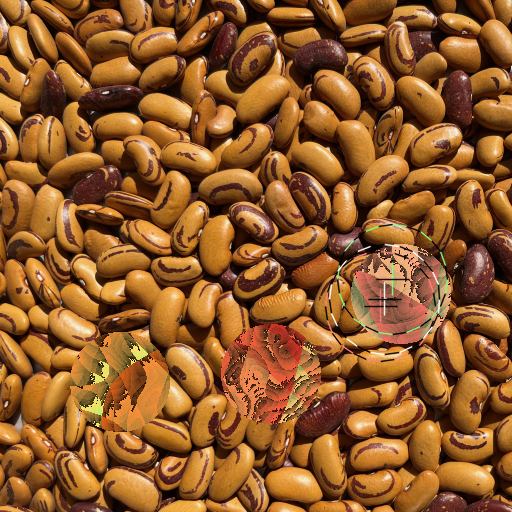
That period of effective simulation described above persisted
from roughly step 2000 to step 3500. I had been using 2000 steps
as a standard simulation length. With a population of predators
(currently 20) additional training steps will likely be
required. It may be that 3000 steps is a good simulation length
for the near future.
Around step 3500 I began to see a new type of pattern appear on
prey. It was simple and geometric, one or two layers of a square
wave texture (from TexSyn's Grating operator). To my
eye, these were clearly more conspicuous than the organic,
disruptive examples shown above. But the predators seemed blind
to these grid patterns and preferentially went after the older
more organic patterns. I let the simulation continue to run
overnight. The images below are from around step 6700.
Update to the September 12 post: I changed the criteria
for “predator starvation” from two sequential predator fails, to
⅔ of a predator's last 10 tournaments being fails, to ⅔ of a
predator's last 20 tournaments being fails. This leads to
somewhere between 5% and 7% of simulation steps resulting in
“predator starvation” and replacement in the population with a
new offspring.
Inching closer to infrastructure for population of predators
It has been a long series of “oh, one more thing” steps as I
close in on the ability to co-evolve a predator population
against the prey population. I am now running with a small
population of 12 predators.
I randomly select tournaments of size 3. (Which correspond to
the three predictions shown as crosshair annotation in the
images below.) I added a new Tournament class to
encapsulate these. This provides a home for the bloat that had
been accumulating in the write_response_file()
function of the “predator server”.
I gave each Predator a history of recent
tournaments it participated in to keep track of its successes,
sort of a win/loss record. This is the same concept (with the
opposite sense) of “predator fails” mentioned previously. If a
predator predicts a position which is not inside any
prey disks, then it has failed to detect/hunt prey and “goes
hungry.” This is what will drive “death by starvation” for a Predator
who is unable to catch enough prey. My plan is to remove that
Predator form the population and replace it with a new one. The
current starvation criteria is two tournaments/hunts in a row
without success. This criteria will probably be adjusted later
on. However after yesterday's batch of changes, while everything
else seems to be working as usual, the “starvation” counts are
way too high. I suspect I broke something. Currently that
success history is being logged and does not otherwise affect
the simulation.
My vague plan for using a population of predators assumed they
would start out similar but with slight variations. I thought I
would create a small number (10-20?) of Predator
instances, initializing each of their Keras/TF models to my
standard pre-trained model (20220321_1711_FCD6_rc4),
and then “jiggle” them a bit.
I recently started displaying the predictions of three Predators
(a prototype tournament). It became obvious that despite the
initial randomization, all three Predators
produced the same initial prediction. That is, the three
crosshairs would be drawn exactly on top of one another. (Which
gets repeated for the first 50 simulation steps for “reasons”.) I tried debugging this, and
accomplished some useful cleanup/refactoring, but the three
randomized models stubbornly continued to produce exactly the
same predictions. The randomization is performed using utilities
from TensorFlow to add signed noise to all parameters of a deep
neural net model. It closely follows this stackoverflow
answer.
It turned out to be a quirk/feature of TensorFlow: eager mode
and tracing.
Basically each time I called tf.random.uniform() I
got the same set of random weights. That
is explained in another
stackoverflow answer. (I am a heavy and unapologetic user
of google and stackoverflow as coding resources.) The fix was to
simply add a “@tf.function” decoration to my
function for jiggling the weights of a model. Although now, TF
warns me that I am doing too much re-tracing, which is
computationally expensive. Since it happens only occasionally, I
am not worried about the performance hit, but would like to
eventually silence the warning.
Two images from near the end of a test run with three Predators
now correctly randomized from the very beginning of the run:
(Even without my intended initial randomization, I noticed
multiple identical Predators would diverge once I
started fine-tuning their Keras/TF models. They started out the
same, then were all fine-tuned using exactly the same training
set of images accumulated during a run. I am not sure where that
divergence comes from, possibly the non-determinism of training
Keras/TF models using hardware parallelism? This is an
interesting question which I plan to ignore for now.)
After what felt like a very long dry spell of working on boring
infrastructure issues — I have finally returned to work on the
camouflage evolution model itself. I had previously abstracted
the visual hunting CNN model into a Python class called Predator.
That allowed me to instantiate several of them, and fine tune
them in parallel. I used this to mock up a three-way tournament
of predators. I now rank the three predators on accuracy.
This is based on the semi-self-supervised nature of this model:
having generated each image procedurally, I know exactly where
each prey texture is located. Each predator predicts an xy
position where it thinks the most conspicuous prey is located.
So I determine which of the three prey is nearest that location,
then measure the aim error. That is: I assume the
predator was “aiming” at that nearest prey, then measure the
distance — the “aim error” — from the predator's estimate to the
prey's centerpoint. I treat this aim error as an accuracy
metric, with zero being best. I measure the accuracy of each
predator and sort them, so the first listed predator is the
“most accurate.” That “best” predator is used to drive
(negative) selection in the evolution of prey camouflage.
Shown below are four images from late in an extended test run (ID tiger_eye_beans_20220903_1401). In these I
draw crosshair annotation of the “prediction”/“estimate”
produced by each of three Predators. The one in
black-and-white is the one judged most accurate (least aim
error), green is second best, and red-ish is third. Note that in
three of the four images, all predators agree on (all crosshairs
are within) a single prey. While in image number three, the
“white predator” chose one prey, the “green predator” chose
another, and the “red predator” was between them, missing all
prey: a “predator fail.” In the last image (number four) the
leftmost prey seems quite good.
While there is a lot wrong with the images below, I just wanted
to note that I have been running tests with two active
predators in parallel. This is in preparation for maintaining a
population of predators. Both start as a copy of the pre-trained
“find conspicuous disk” model (20220321_1711_FCD6_rc4).
Then each is fine-tuned on the collected results of the current
camouflage run. Then each one generates a “prediction” — an
estimate of where in each input image the most conspicuous prey
is probably located.
Previous logging convinced me that they started out identical,
and that they then diverged during fine-tuning. But it was hard
to interpret this. Sometimes the distance between the two
estimates was tiny, sometimes it indicated locations on opposite
sides of the image. So I made the PredatorEye side send the
estimates back to the TexSyn side for visualization. In the
first image below, both predators have estimated positions
inside one prey (the flat grayish one in the lower right). In
the second image, one predator chose the orange striped prey on
the left, while the other predator chose the flat black prey on
the right. This is the learning-based predator equivalent of the
idea that “reasonable people may have differing opinions.” Both
predators has “good aim” — selecting a position well inside one
of the three prey — they just had differing ideas about which is
most conspicuous.
Note that by the time of these images, this run had badly
converged, losing most of the prey population's diversity. Which
is why all the prey patterns are just stripes (gratings). Also
note that the green crosshair in the center is not yet used.
Goodbye to Rube Goldberg: running locally on M1, sans GPU
I was working toward running my simulation on a remote Win10 at
SFU graciously lent by Steve DiPaola. I wanted to test that my
pre-trained “find conspicuous disk” model (20220321_1711_FCD6_rc4)
would read into TensorFlow running on Windows. This had failed
the first time I tried it on macOS on Apple Silicon, so I wanted
to do a reality check by reproducing that error. It
stubbornly failed to fail. I then tried using that
pre-trained model with a handwritten test calling model.predict()
and that worked too. Then I rebuilt TexSyn and PredatorEye to
run in “local mode” which also worked! (“Local mode” is “non
Rube Goldberg mode” with both predator and prey running on the
same machine.)
My only theory about why it failed in the past, yet worked now,
might involve the optional Rosetta facility in macOS. It “enables a Mac
with Apple Silicon to use apps built for a Mac with an Intel
processor.” The original error seemed to be complaining
about x86_64 code embedded in the TF/Keras model. Perhaps that
was before I installed Rosetta on my M1 laptop. Perhaps
installing it allowed TensorFlow to run any pre-compiled x86
code in my saved model.
Some bad news with the good. As described on July 17, I ran
into a known
bug in the TensorFlow-Metal plugin, essentially a memory
leak (of IOGPUResource). I assume that is why my
first attempt at a local-mode run, hung after about 90 minutes.
So I wrapped: with tf.device('/cpu:0') around the
model.fit() call for fine-tuning, and it ran fine.
Running locally is about 4x faster than “Rube Goldberg
mode” since even CPU-only TensorFlow is faster than
the communication delay imposed by Rube Goldberg mode. The
CPU-only mode seems to be very stable. Unlike time-boxed Colab,
locally I could let it just keep running. In about 25 hours of
computation, I ran for 8000 simulation steps. In Rube Goldberg
mode, 2000 steps was about all I could get in a 24 hour Colab
session. Running CPU-only, macOS's Activity Monitor app shows
the Python process peaking up between 600% to 700% of a CPU.
TexSyn averaged about 20% of a CPU. Some OK-but-not-great images
from near the end of the 8000 step run are shown below.
As I suggested in my June 4 talk, I next want to look at using
a small population of predators. I want them to jointly
co-evolve against the population of prey. I think there to needs
to be more dire consequences when predators fail. They should
survive only if they are successful, forcing them to compete
with each other on “hunting” ability.
Today I got a CMake build of TexSyn working on my laptop. I
have not tested it cross-platform but hope to get to that soon.
In the past, I have used CMake to build other projects, but not
previously written a CMake build script from the ground up for
my own code. I had been stuck for a while getting my build to
correctly link to OpenCV. Today I discovered CMake's find_package(OpenCV
REQUIRED) which somehow does all the magic. I had
planned to eventually make TexSyn buildable with CMake, since it
previously built only on macOS using Xcode. CMake offers the
possibility of cross-platform builds.
This has become more urgent since, as described on August 2, I am not
able to run the predator model either locally on my laptop
(because of a bug in the TensorFlow-Metal layer) or on Colab
(because of a disconnect bug there). My old friend and former
coworker Steve DiPaola generously
offered remote access to a Windows 10 machine with an NVIDIA GPU
in the iVizLab
he directs at Simon Fraser University in
Vancouver.
So since I returned from SIGGRAPH 2022 a week ago, I have been
working in parallel on provisioning that machine with tools and
libraries I need, and working on the CMake build, which I will
need to build TexSyn on the Win10 machine. This has been moving
slow since I am a complete newbie on Windows generally.
On July 21 I said “Until [the TensorFlow-Metal plugin issue] is
fixed I will need to return to go back to my inconvenient ‘Rube
Goldberg’ contraption using Google Colab.” Oh — if only
it had been that simple. For reasons I do not understand, the
Colab side of “Rube Goldberg” which had been working well for
months is now getting very frequent momentary
disconnects, and long before completing a camouflage run it
disconnects permanently. I reported the temporary disconnects
here:
Frequent disconnects while busy running in Google Colab #2965.
I am now waiting for response to that, while looking at a third
alternative, now that I have problems running both locally on my
M1 laptop, and in “Rube Goldberg” mode using Colab in
the cloud.
Update on September 5: as mentioned on August 24, I moved to running this
project locally on my laptop, an M1/“Apple Silicon” MacBook Pro.
It is running CPU-only because of the tensorflow-metal
bug mentioned on July 17. However even
without GPU acceleration, the overall speed is faster because of
the significant communication delay caused by “Rube Goldberg
mode.” So yesterday I went back to Google
Colab Issue #2965 on Github to post a “so long and thanks
for all the fish” message. I decided to test one more time, and
managed to diagnose the problem, or at least narrow it down. It
works fine using Safari browser, but the “frequent disconnect”
problem remains using Google Chrome browser under macOS Monterey
on Apple Silicon as described in this
comment on Issue #2965.
Nothing changed, but I realized it had been reporting the wrong
version number (0.9.7) for a very long time. The slides
for my GPTP talk referred to the 2008-2011 implementation as
version 1, and the current one as version 2. I made this
official today by changing texsyn_version_string.
Indeed basic TexSyn has not changed for quite a long time. On
June 3, I added an optional render timeout, convenient for long
evolutionary optimization runs. Around June 23 I made
some changes to multi-threaded render for my M1 (Apple Silicon)
laptop.
There have been lots of changes in the EvoCamoGame
classes. They are essentially applications build on top of
TexSyn, but currently live inside it. They should eventually be
moved out into a separate project/repository.
Today I got GPU accelerated deep learning running on my M1
(Apple Silicon) laptop. My predator model is built on Keras on TensorFlow.
The PluggableDevice
abstraction allows TensorFlow to run on arbitrary devices.
Apple's Metal provides
an abstraction of their compute devices, such as the GPU in my
M1 laptop. A layer called tensorflow-metal provides the
interface between these worlds.
Update on July 18, 2022: I modified my Jupyter notebook
which builds the pre-trained FCD6 generalist predator. I
expected it to run about 17 hours. After 16 minutes and 45
seconds it hung. I tried it again and got the same result.
Exactly the same as near as I could tell. It was on epoch 2/100
and batch (sub-batch?) 2493/4000 of the training run. I rebooted
the laptop and tried again. Same result. For the moment I am
stuck and trying to decide how to proceed.
Update on July 21, 2022: damn! I set aside all my
Anaconda virtual environments, carefully followed the
instructions from Getting
Started with tensorflow-metal PluggableDevice and got
exactly the same hang at exactly the same place (2/100,
2493/4000). I guess I can try deactivating the “call
back” code I use: my in_disk()
metric and Find3DisksGenerator
for dataset augmentation. No, wait! I finally read
the last bit on the
Getting Started... doc which says “To ask questions and
share feedback about the tensorflow-metal plugin, visit the Apple
Developer Forum.” Aha! There was a
month-old report of a very similar symptom, even
mentioning “16 minutes.” That seems to correspond to “leaking
IOGPUResource.” So this seems to be a known bug. Until
it is fixed I will need to return to go back to my inconvenient
“Rube Goldberg” contraption using Google Colab.
On July 2, I mentioned what I thought might be an Xcode bug,
related to code signing. I did the Right Thing and reported via
Apple's Feedback Assistant. And knock me over with a feather,
they wrote back! So much of “bug reporting” feels like talking
to a wall. So it is a nice surprise when the wall talks back! I
answered their questions and am now waiting again. I assume that
getting a response indicates they thought the symptom I
described sounded wrong. Which is progress. Now we are working
toward a repeatable test case.
To make the work-around easier to use, I temporarily added my
Xcode project build directory to my search PATH
using my new .zshrc file.
I have been working to set up my local Python/Keras/TensorFlow
environment on my M1 laptop. I've also been doing some TexSyn
code cleanup, mostly in the Texture class for multi-threaded
rendering while listening for commands related to hiding/showing
windows.
On June 27 I
said: “Some bad interaction between the now-recommended zsh
shell and Homebrew (the package manager I use to install OpenCV)
means that I can't run the texsyn command on the
command line!” Now I think that description is completely wrong,
and that the guilty party is actually Xcode (the macOS IDE) and
its handling of code signing. I found a work-around and
filed an official Feedback. The fact that the work-around works
suggests to me that this is an Xcode issue. If I ever learn one
way or the other I will report back here.
In any case, TexSyn is now running from the shell as intended.
I did another run, identical to the previous one, except for a
different random seed. This one was a bit more successful. Some
tournament images from late in the run:
At this point TexSyn seems to be working well in the “new
world” (M1 laptop, macOS Monterey). But other problems remain.
Some bad interaction between the now-recommended zsh
shell and Homebrew (the package manager I use to install OpenCV)
means that I can't run the texsyn command on the
command line! I have not even begun to switch over to using
Jupyter/Keras/TensorFlow on my local machine, so at the moment
they still run in the cloud on Google Colab. So I still use
Google Drive as the communication channel. Google's “Drive for
Desktop” now uses macOS's “File Provider” layer, so Drive is
different in subtle ways (mount point pathnames, etc.).
Nonetheless I was able to get a simulation running (ID tiger_eye_beans_20220626_1405). My
daughter Dana bought these dried beans at a local farmer's
market. They are an heirloom variety called Tiger Eye, grown by
Fifth Crow Farms in Pescadero, California. I prevailed on her to
take some photos before cooking. The run only got to step 1700,
85% of the typical duration. Here are four hand picked
tournament images from between steps 1500 and 1700. In the first
image the lower right prey has inappropriate reds and greens,
but the spatial features seem just about right. In the second
image the upper right prey looks very promising. In the fourth
image the two prey at the bottom seem to me to be clearly better
than the top prey, but the predator decided to eat one of them.
Oh well. This is all just to say it seems to be working at the
same “OK but not great” level of quality seen before.
It took a while to get my M1 set up to run TexSyn, then to
adjust my build settings so that I could compile and run on both
the old and new machines. I wanted to be able to verify
consistent texture synthesis results, and to measure relative
performance. What I saw initially was texture rendering was slower
on the new machine. That was surprising and counterintuitive
since the clock rate of the new M1 Max processor is 3.2 GHz and
the older one is 2.5 GHz (2014 MacBook Pro, Quad-Core Intel Core
i7).
However, by default, TexSyn uses multi-threading during render.
Each pixel of a TexSyn render is completely unrelated to all
other pixels — it is “embarrassingly parallel.” So each pixel
could be its own thread, but with some vague concern about
per-thread overhead, I made a thread for each row of
pixels in the rendered image. This worked fine on the old
processor, the multi-threaded rendering was obviously faster. I
never bothered to look into it in more detail. On the M1
processor, this approach did not render faster.
Two smart friends suggested I look closer at the effect of
multi-threading. I tried increasing the size of the per-thread
workload (hence an inverse relationship in the number of threads
per render). Where the old approach had been one rendered row of
pixels per thread, I changed that to n rows per thread.
I then swept n from 1 up to the image height. That is
from the previous multi-thread approach, to a single thread
approach, and all values in between. For each value of n
I measured the texture render time. For a given test texture, I
did that for a 512×512 render, then for a 100×100 render which
is about the size used in the camouflage simulation. In both
cases the shape of the curve — while mysterious — appears to
have a minimum at about 16% of the total texture height.
For comparison, here is the same experiment (100×100 render
size) run on the old laptop (2014 MacBook Pro, 2.5 GHz Quad-Core
Intel Core i7):
This looks very different at the low end. On the M1,
the render time was highest at the beginning and end of
the range (100 threads with one row each, versus 1 thread with
100 rows). As mentioned above the minimum (fastest render) was
between them, at about 6 threads with 16 rows each. On the Intel
laptop, the minimum is clearly at the beginning of the range
(100 threads with one row each), and the maximum is at the end
of the range (1 thread with 100 rows). This is easier to see by
ignoring the red plot for run “e” — perhaps another process ran
during the end of that run. This data shows that render time is
definitely not monotone increasing. It has that dip around 50.
But this does clearly show how 1 row per thread worked well on
the Intel processor. I don't have the background to know, but I
assume the shape of these curves, and the significant
differences between old and new, must be related to the two
processor architectures and how they interact with the operating
system's threading mechanisms.
Finally here are some time comparisons. The test case here is
rendering 20 100×100 textures. As above, on the old processor,
fastest (smallest) render times was for the 1 row per thread
case at 4.7 seconds. For the new processor, fastest times were
for the 16 rows per thread case, at 3.5 seconds. So with recent
changes the new machine seems to be roughly 33% faster. For the
single-threaded case (right column) the new machine is about 40%
faster.
Render time for 20 textures (in seconds):
architecture versus per-thread workload size
1 row per thread
16 rows per thread
all 100 rows by 1 thread
old / Intel / x86-64
4.7
6.8
18.1
new / ARM / M1
6.7
3.5
6.9
Just because I like pictures, the comparisons above used this
test texture:
After eight years of faithful service I finally have a new
laptop. Photo below of old and new in the process of doing a
brain (well, SSD) transplant. I anticipate that this M1 laptop
will render TexSyn textures faster. I also expect I will be able
to run TensorFlow locally, so I can say goodby to the current
“Rube Goldberg” scheme where I run camouflage evolution on my
laptop, but predator learning in the cloud with Colab. However
in the meantime I am working through a series of issues — new
processor, new operating system, new version of OpenCV — before
I can even run TexSyn locally.
I was invited to speak at the Genetic Programming Theory
& Practice XIX workshop, held at the University of
Michigan. I gave a summary of the experiments described
previously in this blog. The talk seemed well received.
Preparing for it gave me a useful opportunity to organize my
thoughts about the project. I also got to experiment with how
best to communicate the ideas that underlie this simulation.
Photo (by Linda Wood? — via)
of me in mid-bloviation:
Using the same set up described on May 30, I made another run (ID oxalis_sprouts_20220530_1212) for some
presentation slides I am preparing. As can be seen in these four
tournament images from near the end of the run, there are many
prey with high quality camouflage, but enough lower quality prey
that it was hard to find three good ones in one image. For
example the upper left prey in the first image, and the upper
right prey in the last image, both seem quite well suited for
this environment. It is also encouraging that the prey nearest
the predator's chosen location, seem to be convincingly of lower
quality.
I started out intending to compare two runs differing only by
the “background scale” (hyper)parameter on the TexSyn side. I
eventually got that but only after several poor quality runs at
the smaller scale. I decided to bring back an aspect of the “B”
experiment described on May 21: make fine-tuning conditional on
the size of the dataset which collects previous tournament
images. So now, the simulation proceeds for the first 50
steps (10% of max_training_set_size) with no
fine-tuning. This means that the predator is still the
pre-trained generalist (FCD) model. After 50 tournament
images are collected, the fine tuning begins and run as before.
These are four images from late in the run (ID
oak_leaf_litter_20220525_1648) with background scale of
0.4. I think the upper right prey, in the second image (step
1931), is my favorite of this run. It contains leaf-green edging
over a pattern quite reminiscent of the leafy background:
These are four images from late in the run (ID
oak_leaf_litter_20220529_1354) with background scale of
0.2, after implementing the “postpone fine-tuning until dataset
is big enough” approach:
Ad hoc solution to “inappropriate center fondness”
As described on May
18, I determined that it was not just my
imagination: the current predator model does have an
inappropriate preference for predicting the most conspicuous
prey is located at the center of its input image. (A “tournament
image” with three prey over a random background crop.) This is
true even when there is no prey there, and without regard for
the quality of prey that is there.
I have only vague theories about why this happens and hope to
investigate more fully later. But in the short term, I was able
to find a work-around. The May 18 plot suggests the pre-trained
generalist FCD predator model (see e.g. March 23) does not
have this “center fondness.” Instead it appears to develop while
during fine-turning the predator model during a camouflage
simulation run. So I tried avoiding using tournament images with
any prey located in a region at the center. The good news is
that this seems to fix the problem. But it feels ad hoc,
poorly motivated, and overly complicated. I will use it until I
find a more principled solution to “center fondness.” I tried
three variations on this work-around:
(kitchen_granite_20220518_1410)
Change TexSyn's class EvoCamoVsLearningPredator to place the
three prey (over a random background crop) so as to avoid a
circular region at the center. It simply uses the previous
uniform placement scheme (avoiding the image's margin and
avoiding prey overlap) then loops, rejecting a placement if
any prey touch the empty zone. I required that each prey's
center was at least 3 × radius away from image center.
(kitchen_granite_20220519_1717)
Turned off the approach of A, and instead put a
constraint on the predator (Keras model in Python). New input
images were only added to the fine-tuning dataset if they
avoided the central empty zone. This seemed like a good idea,
being local to the predator fine-tuning code, but it ended up
having a lot of corner cases. I was not happy with the
results. Used min distance of 2 × radius.
(kitchen_granite_20220520_1633)
Revert code for B. Go back to approach in A. Use 2
× radius.
Four images from near end of run A:
Four images from second half of run B:
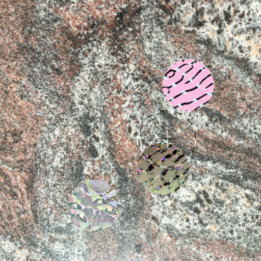
Four images from run C:
This is the metric shown on May 18: cumulative percentage over
evolutionary time, how many prey picked by predator model “just
happen” to be the prey which is located nearest the image's
center? This was meant to characterize how “center fondness”
developed during fine tuning. Before the workarounds described
in this post, that number climbed up to 53% by the end
of the run. With these new changes, all three runs ended with 36%
or lower. It seems the ideal value is 33% (⅓) but apparently
other factors intrude. Run B, where the constraint was
applied in the fine-tuning code, the metric gets down to 28%.
Runs A and C, where the constraint was applied
in tournament layout (in TexSyn), both ended at 36%, suggesting
that results are not sensitive to radius of empty zone.
Watching these simulations as they play out, I have made some
informal subjective observations:
Many — perhaps 60-70% — are of “disappointing quality.”
In those runs, I often see the predator make poor choices,
where the prey it picks, which I intend/hope to be the most
conspicuous, are often the opposite, appearing to be the best
camouflaged of the three prey.
It slowly dawned on me that these poor choices often happen
to be prey located close to the center of the “tournament”
image presented as input to the predator model.
A central difficulty of this work is that I lack an objective
metric for camouflage quality. That is what has brought me to
this rather elaborate semi-self-supervised model. So I
do not have a way to quantify the number of “disappointing
runs.” It is impossible to quantify when the predator makes a
poor choice. Indeed, subjectively, I think “I
know it when I see it” (to quote SCOTUS Justice Potter
Stewart in 1964). But that cannot be implemented in code, nor
objectively measured in experiments.
However “distance from the center” of an image is an objective
metric which can easily be measured. I tried that in run kitchen_granite_20220517_0845 via ad hoc
printing a metric during the run. See plot below:
As described on May 2, the
fine-tuning dataset is created in a self-referential loop. A
tournament image (three prey over background) is presented to
the predator's CNN model, it predicts (selects) an xy location
in the image where it thinks a prey is likely to be. This
location is used to drive texture evolution. It is also used to
add an example to the dataset used to fine-tune the predator.
The raw prediction is mapped to the nearest prey's centerpoint
for use as a label. This label is paired with the image to form
a training example which is then added to the dataset for
subsequent fine-tuning.
The plot above shows during 2000 simulation steps, the
percentage of steps when the prey nearest predator's prediction
“just happens” to be the prey nearest the center of the image.
In a perfect world, I would expect this to hover around 33% —
assuming positions and quality are uniformly distributed —
picking a prey will happen to be the one (of 3) nearest the
center about ⅓ of the time. Instead it starts low then keeps
increasing during predator fine-tuning reaching a max of 53% at
the end of the run. Way too high and clearly inappropriate.
A cynical perspective on this is that the predator model has
just given up, stopped trying, and simply returns the constant
value corresponding to the image center. (Which is (0.5, 0.5) in
image-normalized coordinates.) Consider these four images (from
near the end of the run, steps 1767, 1843, 1957, and 1995). The
predator's response in all cases is very close to the center of
the image. It chooses the center, even though in 3 of 4
cases there is no prey there, leading to a predator fail.
In the last example, there is a prey there, but (in my
subjective view) it is of pretty high quality (if too green).
This seems like an example of “poor choices” by the predator as
mentioned in observation 2 above:
Here are two more examples from late in this run, grabbed by
hand. The first image (like the last one in the previous four
images) shows a prey with very high quality camouflage (edgy
pattern with muted pinks and yellows) being “eaten” by the
predator. I suspect this may be accidental targeting because it
“just happens” to be near the center of the image. The
second image below is just to show that the predator model is
not always choosing the image center. Here it appears to
be making an excellent choice, targeting lower quality (too
green) prey, toward the right, so not at the center of
the image. The other two prey in that second image both have
high quality camouflage. (One is below and slightly to the left
of the predator's pick. The other (really good!) one is about
two diameters to the left and slightly above.)
Next on my agenda is to dig into this “inappropriate fondness
for the center” issue. I do not know what causes the predator
model to get lazy and default to a constant response. Perhaps
merely that it can. And what is to stop it? Probably a large
basin of attraction for this behavior which is easy to fall
into.
Perhaps I will force the random placement of prey on the
background (by the TexSyn side of the simulation) to push prey
away from the center of the image. That seems too ad hoc
to be a permanent solution, but might help understand what is
going on.
In this run (ID huntington_hedge_20220514_1451),
on “Huntington hedge” background (see July 29, 2021), rendering 512x512 images
on the TexSyn side produced “pretty good” results. A solid B
grade, but troubling that this was the best of three runs,
identical except for random number seed. As discussed on May 8, these
“could have been better” runs seem to suffer from bad choices by
the predator.
Consider the fifth image below. (Hovering over it should
indicate “step_1254.”) The predator has chosen a green prey with
an effective disruptive pattern. To me that one seems
the best of the three prey. It “feels” like the predator is
using the wrong criteria. Because of the semi-self-supervised
nature of the predator fine-tuning, I worry about a feedback
loop where the predator makes a mistake early, then effectively
amplifies its mistake over time. On the other hand, the
evolutionary texture synthesis seems to keep proposing high
quality patterns, such as the upper right prey in the final
image (“step_1976”).
I finally got around to replacing some slap-dash
just-for-a-quick-test code from two months ago, so can adjust
resolution of camouflage textures and “tournament images.” (Such
as below, with three disks of evolved camouflage texture over a
random crop of photographic background texture.) My general goal
is to decouple the human readable/viewable output of these
simulations from the tiny images used thus far in the computer
vision part.
Shown below is a 512×512 image from yesterday's run (ID michaels_gravel_20220510_1255), a 256×256
image (the size I had been using for a while), and just for
comparison, a 128×128 image as still used on the predator vision
side of the simulation. All three images are step 1577 of their
respective simulations. The smaller two where from the runs
described on May 8.
The larger two were both run using the same random seed, while
other hyperparameters differ (background scale and output size)
so they were not identical. Perhaps fine-tuning the predator
model is non-deterministic due to asynchronous parallelism, but
in any case I will not sweat the
not-identical-but-still-quite-similar nature of the first two
images below.
Lisa had an epic battle with our internet service, she sat
through several endless support calls, hosted a site visit, and
finally swapped out the cable modem. Seems solid now. But
yesterday's run was interrupted at step 1652 by some unrelated
problem on this elderly researcher's elderly laptop. I decided
it was not worth running yet again, so just accepted this
partial run as proof of concept.
A tale of two adversarial camouflage runs. Maybe not the best
of runs and the worst of runs, but a darn good one, and one that
was disappointing.
In the disappointing run (michaels_gravel_20220505_2112)
prey camouflage improved but remained mediocre. The prey were
easy to spot against the background. (Which is photos of gravel
in our neighbor's yard.) Several times I saw the predator in
that run target/eat what looked to me like more promising
camouflage, slowing progress, and allowing the “only OK”
camouflage to survive.
For the other run (michaels_gravel_20220507_0839)
I kept all hyperparameters unchanged except the random seed for
the evolutionary texture synthesis side. This run performed
significantly better.
So two samples from this distribution—camouflage simulation
runs differing only in random seed—can yield very
different results. I need to dig in to this concept. I need to
make a series of runs to collect enough data to characterize
this random distribution. I also have to take this into account
when adjusting hyperparameter values, like the recent drama
about “predator fine-tuning dataset size.” Trying a single test,
then changing a hyperparameter, and making another single test,
is subject to the large variance shown below. Is run B better
than run A because of the changed hyperparameter value, or
because of the expected natural variation in the random
simulation process?
Some of the “least bad” tournament images from near the end of
the disappointing run (ID
michaels_gravel_20220505_2112). These camouflage
patterns appear to be primarily derived from the “phasor noise”
texture generators, see May 8, 2021:
Here are 20 images from throughout the better run (ID michaels_gravel_20220507_0839) which
differed only in initial random seed value. Over evolutionary
time, these camouflage patterns increasingly match the colors
and frequencies of the background photos, and develop a
disruptive quality where the boundary between background and
prey camouflage becomes harder to discern:
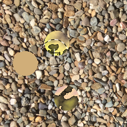
Two charts for the second () run (“better”: ID
michaels_gravel_20220507_0839. Predator failures
(targeting a position not inside any prey) reach a level of 31%
(616 of 2000). The in_disk metric reaches 0.9 around step 600,
then actually dips below around step 1300, before peaking to
about 0.94 near the end of the run.
Forget predator’s oldest memories, don’t update dataset, wait
for cable guy
Following up after the May 2 post: I have gone back to using the
most recent n simulation steps as the dataset for
predator fine-tuning. Previous values for n I tried
were: 100, 200, ∞, and now 500. A typical run has 2000
simulation steps, so the fine-tuning dataset size is now ¼ of
all steps.
The idea of “updating” this dataset, as described on May 2, was
intended to avoid using obsolete/naïve data for fine tuning.
Some experiments suggested it was not helping. Fortunately, it
can be ignored, since “the most recent n simulation
steps” inherently erases older training data, so there is no
reason to update it. And that is good since it seemed overly
complicated and ad hoc.
I think this 5 day detour started because I tried changing two
things at the same time: adding the “update” mechanism and using
a new background set. It looks like the yellow_flower_on_green
background set is somewhat more challenging for the simulation
than the previous example maple_leaf_litter.
My guess is that using the full history of simulation steps for
fine-tuning worked OK on maple_leaf_litter
but not on yellow_flower_on_green. I
will now use 500 (25% of total) for this hyperparameter.
That produced acceptable results in this run (ID
yellow_flower_on_green_20220504_2109).
I might have resolved this quicker but for the frequent network
outages we have been experiencing here at our house. I am using
Colab, and flaky
network is the natural enemy of hours long simulations run on a
remote cloud server. My techie wife Lisa bravely sat on the
phone with the cable company to convince them there was a
problem, then dealt with the service tech who paid us a visit.
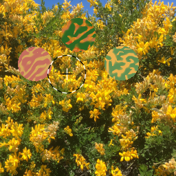 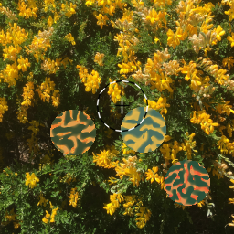
Metric plots for run (ID
yellow_flower_on_green_20220504_2109). At the end of
the run, the predator failure rate (fraction of steps where
predator target a location outside the boundary of any prey) was
30% (592 out of 2000) which is quite low compared to
recent runs. The in_disk metric reached 90% by around step 400
and peaked at 96% toward the end of the 2000 step run.
I continue to fiddle with details of fine-tuning the predator
model during a single run of camouflage evolution. I
decided—based on meager evidence—that a training set of 100
examples was not as good as 200 example, and 200 was not as good
as remembering all previous steps (so 2000 at the end of
a typical run). Perhaps bigger is better, but I worry that older
is worse. I was concerned that training examples saved at the
beginning of a run — effectively the predator's “childhood
memories” — might interfere with effective fine-tuning later on.
The issue is that while the simulation can provide ground
truth for centerpoint positions of the three prey, it does
not know which of the three prey should be selected by
the predator. If we had a computable metric for “camouflage
quality” or “conspicuousness” then this could be a much less
complicated simulation!
Instead, to create an example for the fine-tuning dataset, I
generate the label (an xy position) for an image by using the
predator's current neural net model to predict (get its best
guess) where a prey is. (This prediction is shown as black and
white crosshair and circle in the images below.) Then using the
ground truth prey position data, I select the prey nearest
to the predicted position. This effectively assumes the predator
“meant” to target that nearest prey, but missed by some small
amount. These form a training example: the “tournament” image
and the position of the prey nearest the predator's prediction.
That fine-tuning training example, which will be remembered for
the rest of the run, may be based on a very “naive” early
predator model. (Similar to the FCD6 pre-trained model.) The
point of fine-tuning is to improve the predator over time. Do we
want to train based on its early mistakes? So I added some code
to occasionally, randomly, update the label for examples in the
training set. It recomputes the training example label based on
the predator's current prediction and the saved ground
truth data. This forgets the old label and substitutes a new
“modern” one. It seemed like a good idea to me.
The result was pretty bad, as can be seen in the poorly
camouflaged prey in sample images below from late in this run (ID yellow_flower_on_green_20220501_1140).
Compare these with a human-in-loop run from May 31, 2021 on
the same background. I'm running another simulation, identical
but for random seed, to learn more.
Total recall: use entire history for predator fine
tuning
Recent posts (April 21, April 24) have discussed the size
of a training set used for fine-tuning the predator model on
each step of a simulation. This fine-tuning adapts a predator to
a specific environment and its evolved population of prey. Data
in the training set comes from previous simulation steps —
essentially the “memories” of the predator's experience during
its lifetime. Originally I thought I would use just the current
step for fine tuning, then I tried using the “last n”
steps for training, trying different values for n (100
vs. 200). Finally in this run I set n to infinity. (In
the code, this variable is: max_training_set_size.)
So here, the training set used for fine-turning consists of all
previous steps. Otherwise, this run (ID
maple_leaf_litter_20220424_1144) is identical to the
runs described on April 21 and April 24, except that this one got
interrupted around step 1900. I think the late-in-run camouflage
here is better than those previous runs with max_training_set_size
set to 100 or 200.
Pictured below are a selection of 20 simulation steps out of
1900. Some at the bottom are quite nice. See for example the
prey in the lower right corner of the last image below.
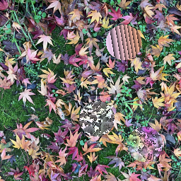
Some statistics from this run. The cumulative predator failure
rate is especially low: 34% (650 fails during 1900
steps). During fine-tuning, the in_disk metric (rate of predator
predictions that were inside some prey's disk) reached
90% by about step 500, then stayed above that level for the rest
of the run. These both suggest a well performing predator and
that max_training_set_size should stay at ∞.
I was happy that I seemed to have stumbled onto a good set of
“hyperparameters” (as discussed on April 21) and decided that I would try
another run to convince myself that it was not just a lucky
accident. This run (ID
maple_leaf_litter_20220422_2106) left me unconvinced.
There was some obvious convergence toward better camouflage but
it was not as vivid as I hoped. Several plausible varieties of
camouflage patterns arose during the run but failed to dominate
the population. For example, the last (step 1938) of these 20
examples (selected from a 2000 step run) has two “stripy”
patterns, with almost an embossed look, in greens and blues. To
me they look out of place and conspicuous on this background
set. Similarly several late-in-run examples (such as next to
last, step 1900) has a noisy “confetti” pattern which also seems
to contrast with the background. Now I'm thinking about trying
more alternative approaches.
Two “bonus” step images with interesting camouflage patterns,
captured by hand from near end of run. In the first, all three
prey seem well colored, the lower two have patterns which are a
good middle ground between structure and confetti noise. In the
second image, the prey just above and right of center, appears very
well suited to this environment. It is disappointing that this
was not more widespread in the population.
The current adaptive predator model does fine-tuning
during a run based on earlier simulation steps. In a sense it is
learning from its experience in the simulated world. Training
examples used for fine-turning consist of a “tournament image”
along with a label. Each image is a random crop of a background
image, overlaid with three prey, rendered as disk-shaped samples
of evolved camouflage texture. The simulation knows the “ground
truth” position for each prey. The chosen label is the prey
center position nearest the predator neural net model's current
prediction for the image. So there is a free hyper-parameter:
how many past simulation steps are remembered in this
fine-tuning training set.
Typically I have been running simulations for 2000 steps. I had
a good result on April
17 using the most recent 200 steps for a fine tuning
training set. I wondered if this might be too much, causing the
predator model to “worry” too much about examples from the
“distant past.” I did two runs, trying to hold everything else
constant, with 100 and 200 as the fine tuning training set size.
I used the whimsical “bean soup mix” background set (a mixture
of dried beans from our local supermarket) and made two runs
using the same random seeds as starting points. The short answer
is that fine tuning with the most recent 200 steps (10%
of total steps) seemed to produce better results. This is a
pretty small experimental comparison, but for now I will use
that value.
Here is an example of what seemed like poor choices being made
by the predator when using the smaller training set size (100)
for fine tuning. This image was captured by hand near the end of
the run. Two of the three prey have large conspicuous stripes
across them, two pink, one beige. The third prey (left of and
below image center) seems to me to have more effective
camouflage. Perhaps not saturated enough, but at least it has no
bold stripes! Yet it was this apparently better one that the
predator selected for lunch (b&w crosshairs on right of
prey):
Not sure if this shows cause or effect, but I have been keeping
track of the in_disk metric during fine-turning. I
used it previously during pre-training (e.g. for measuring the
quality of FCD5 and FCD6). It measures how frequently the
predator model predicts a location inside one of the prey. In
the plot below there is a clear distinction between the runs
with 100 and 200 fine-tuning samples. The 200 sample
fine-turning training set definitely has higher scores, peaking
at about 90%. The 100 sample run averages somewhere near 60%.
Along the same lines, the 100 sample fine-tuning set has
generally higher (worse) cumulative predator failure count than
the 200 sample approach. These measure the actual performance of
the predator model when it “hunts” prey (predicts prey position)
during a simulation step. Whereas the in_disk
metric mentioned above is measured during fine turning,
supervised learning, which effectively occurs between
simulation steps. In these two runs, the final cumulative
predator failure rate is 42% for 100 samples and 40%
for 200 samples (847 and 738 fails during 2000 steps):
Here are 10 steps hand selected from the 2000 steps of the run
with a fine-tuning training set derived from the 100
most recent simulation steps (run ID
bean_soup_mix_20220420_1143). Camouflage quality
clearly improves during the run but does not reach the level
seen in the other run (further below).
Here are 10 steps hand selected from the 2000 steps of the run
with a fine-tuning training set derived from the 200
most recent simulation steps (run ID
bean_soup_mix_20220418_1642). I suggest that these seem
to exhibit subjectively better camouflage.
(Note: previously when I have said “20 hand selected
steps out of 2000” — first of all, the simulation automatically
saves every 20ᵗʰ “tournament” image — so the hand selection is
made from this randomly culled set of 5% of all tournament
images. Often I make an aesthetic choice for
interesting/cool/effective camouflage patterns. I also sample
non-uniformly to create a more linear time progression in this
document from random textures to effective camouflage. In this
case, to allow a better comparison between the 100 versus 200
training set size, I tried to maintain more “objective” sampling
by breaking the saved images into 10 groups according to
evolution order, and selecting one image from each group for the
two histories above. Note that both histories start from the
same image. Further, a given image in one history, say the
third, corresponds to the third image image in the other
history, and (for this example) both represent the range of
simulation steps from 400 to 600.)
Evolving camouflage versus adapting predator (huzzah!)
As near as I can tell—I think this is working! Camouflage
evolves as before, with relative fitness determined in a (three
way) tournament decided by a predator. This time however, the
predator is adapting (“fine tuning”) to the specific conditions
of each simulation run, such as choice of background images, and
history of camouflage evolution in this population of prey.
The first attempt, on April 11, failed to converge to effective
camouflage. In this second attempt, I maintain a training set
consisting of the most recent 200 steps. I do one epoch of
training for each simulation step. (Previously, I fine-tuned
from a single step's data, then all steps, then 100.) The
quality of this run strikes me as “just OK” but good enough that
I am convinced the simulation is working as intended. Finally!
To recap, this adversarial model has gone through several
architectures. Initially, predator behavior was provided by a
human-in-the-loop, in an interactive game-like setting. Then a
computational predator based on a convolutional neural net was
pre-trained to locate “prey sized” areas which visually
contrasted somehow with their background. And now that
pre-trained predator model is fine tuned during the
simulation based on “ground truth” position data about the prey.
This allows the predator model to learn the specifics of its
simulated world. It learns what the background environment is
like in its world. It also learns what kind of camouflage is
being evolved by the prey in its world.
Shown below are 20 hand-selected step images from this 2000
step run (ID tree_leaf_blossom_sky_20220416_1148).
In each case, a random crop of a background is overlaid with
three prey shown as a disk of evolved camouflage texture. A
black and white circle and crosshair indicate where the predator
has “decided” or “predicted” that one of its prey is located.
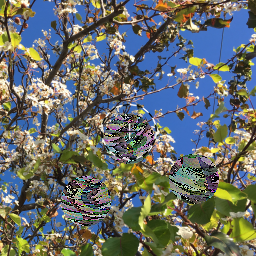
In this 2000 step run, there were 816 steps where the predator
chooses a location which is not inside any prey disk.
When these predator failures occur all three prey survive the
tournament. Normally the predator's chosen prey is “eaten“,
removed from the population, and replaced by an offspring of the
other two prey in the tournament. In this run, the rate of
predator failure is 41% which is the lowest found so far
on this background set. This may suggest, as hoped, that the
adaptive predator is functioning better that the static
pre-trained predator. Plotted below are the cumulative total of
predator failures over 2000 simulation steps.
On the road to a
dynamic/learning/specializing/fine-tuning/adapting predator
Since the March 25
run I have been working to move from a “static” to “dynamic”
predator vision model. In the previous approach, I pre-trained a
convolutional neural net (CNN) for the generalized task of
“finding conspicuous disks” — of camouflaged prey — overlaid on
background images. This was encouragingly successful as an
adversary (fitness function) to camouflage evolution. However
since it had only a general ability to pick out prey, once the
prey began evolving moderately effective camouflage, the
predator's effectiveness began to wane. In nature, this would
correspond to a predator getting less and less to eat, reducing
its fitness to survive and reproduce.
The next step in this series of models is a dynamic predator: a
predator which can dynamically adapt to its environment
and ongoing prey camouflage evolution. The pre-trained predator
has a generalist ability to find prey-like objects on
arbitrary backgrounds. Ideally it should specialize for
a given background set, and for the current population of
camouflaged prey. My approach is to start from a pre-trained
model (like FCD6)
then allow the neural network to continue learning during
simulation, based on supervision from the simulation's
“ground truth.” This kind of additional training is often called
fine-tuning, a type of transfer learning.
I have been building the plumbing and infrastructure for this.
Last evening I got to a version that could at least run. The
very first test quick test seemed promising, but to provide a
better comparison I decided to use the same background set as
the previous run. Almost immediately I could see it was
performing poorly. By this morning it was clear my additions
were (as Shrek said) “the opposite of helping.” At simulation
step 1340, the count of predator failures was 982, for a failure
rate of 73%. This is much worse than the static FCD6 which got
fail rates around 47%.
So definitely not working as intended yet. Back to the drawing
board!
Another adversarial run using the FCD6 static predator versus
camouflage evolved to be cryptic against the “tree leaf blossom
sky” background set (ID
tree_leaf_blossom_sky_20220323_1457). See March 15, 2021 for
camouflage interactively evolved on this same background.
(As before: shown below, in chronological order, are 20 steps
out of the 4000 total steps in this simulation. They were chosen
by hand from 200 images saved every 20 steps. Each image
contains a random portion of one background photo and three disk
shaped “prey” each with its evolved texture. A black and white
crosshair, surrounded by a dashed black and white circle, shows
where the FCD6 static predator (see March 22) decided a prey was probably
located. Recall this model is purely 2d—there is no tree or
sky—just color patterns on a 2d surface.)
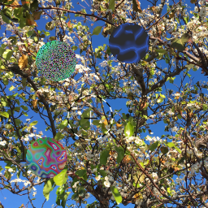 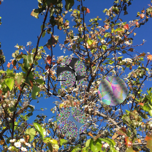
Here are two more steps (before predator response) that I
happened to notice and manually screen grab. They are near steps
2700 and 3700. Five of the six prey seem well camouflaged. There
is one poorly camouflaged prey near the top of the first image
with greenish “confetti noise.” These static predators (like
FCD6) seem surprisingly blind to this sort of high frequency
noise pattern.
Plot of cumulative “predator fails” versus steps of evolution
time. Compare to similar chart, also for the FCD6 predator, in
the March 23
entry. This run is 4000 steps, twice as long as that previous
one. At 2000 steps the ratio of fails to steps is 47%,
at 4000 steps it is 60%. The gray dashed line is drawn just to
indicate that the evolving population has settled into fooling
the predator a roughly constant fraction of the steps.
This run can be seen as 4000 steps of which 2387 were skipped
due to predator failure. Alternately it can be seen as a run of
1613 steps with valid predation.
FCD6 static predator with oxalis sprouts backgrounds
An adversarial camouflage evolution run (ID
oxalis_sprouts_20220322_1010) using the new slightly
improved (?) FCD6 static predator. There is some effective
camouflage near the end of the ~2000 step run. I actually
intended to continue it longer, but my machine had a “rapid
unscheduled disassembly.” I'll do another.
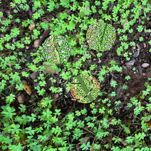
This is the predator-fails per step metric I've been tracking.
At 2000 steps the ratio is 44%. At 1000 steps it is 36%.
In this run it looks like the rate of fails started high, slowed
down for a while, then (around step 1100) sped up again. Another
way to think about these fails is that, since they leave the
evolving population unchanged, we could not count them as steps.
Or we could define the number of “valid steps” as total steps
attemped minus steps failed. So this is either a 2000 step run
with 874 fails, or effectively a 1126 (2000 - 874) step run with
no fails.
I wanted to try another go-around, training one more static
predator for the “find conspicuous disk” task. (A reminder that,
in this context, static means the predator's neural net
does not change during camouflage evolution.) After four tries
(below) I got well-behaved training with slightly better
performance, but I suspect there is not much more to squeeze out
of this model.
I used the same FCD5 dataset (see March 3) but increased the level of augmentation
applied during training. That dataset has 20,000 labeled
examples, of which 16,000 (80%) are used as the training set.
The training set is augmented during training by creating
variations on the base data. As mentioned before, the random
variations potentially include mirroring the images, rotating
them by some multiple of 90°, and inverting the image brightness
(e.g. black ↔︎ white). This time I added two other classes of
variation: adjusting the gamma (alters
contrast/exposure) and rotating the hue of colors in the
image (e.g. red parts of the image become green, etc.). Both of
these are more costly in terms of compute time, so I made they
happen only occasionally: 5% and 10% respectively. Overall, the
intent of augmentation is to promote generalization of the
neural net model, by providing more variations for training.
This FCD6_rc4 model looks good to me in the first 3 plots
below. The loss (error) metric, which actually drives
learning, for the training set (blue) declines smoothly over 100
training epochs. Measuring loss on the validation dataset
(orange) has a nosier decline. But importantly, it does not
later increase, which suggests overfitting the training
dataset. Similarly the fraction-inside-disk metric (most
relevant to FCD) increases smoothly for training data and
noisily for validation. As seen in earlier runs, the model
performs better (higher on fraction-inside-disk, lower
on loss) on validation data than training data. My assumption is
that strong anti-overfitting measures (via dropout, and
augmentation, causing training data to change each epoch) means
that the training data may be “harder” than the untouched
validation. At the end of training, the fraction-inside-disk on
validation dataset was ~0.85. In FCD6_rc4 the
augmentation factor was increased from 16 to 32, meaning that
each example is augmented with 31 variations on it. The
augmented training set size was 512,000.
For rc3 I added another dropout layer in the output funnel of dense
layers. I also reduce the dropout fraction from 0.5 to 0.2. It
was no better than rc2.
For rc2 I removed the final CNN layer in rc1 going back to CNN
output being: 8 x 8 x 256. Removed the (months old) first 512
size Dense layer so now the first is 128 size, move dropout
layer after that. Trainable parameters now: 3,191,386.
For this (rc1) model I added two more CNN layers at the end of
the input funnel, with output size 8×8×256 and 4x4x512. This
model has 9,548,890 trainable parameters, versus 17,118,042 in
FCD5, and 16,912,858 before that. I have no idea what caused
those huge drops in performance around epochs 75 and 90.
FCD5 static predator with “Huntington hedge” backgrounds
Having reached a plateau of “sort of working” — using the FCD5
static predator versus evolving camouflage — I have been trying
different background sets. This uses the “Huntington hedge” set.
Some details about that, and a human-in-the-loop camouflage run
using it, are described in the entry for July 29, 2021. The
run below (ID huntington_hedge_20220310_1231)
seemed to work pretty well, although I do not have an objective
way to measure that. I let it run for 4000 steps, twice as long
as normal. As before: each image shows a random portion of
randomly selected background photo, overlaid with three
disk-shaped “prey” each with an evolved texture. There is a
black and white circle (with a b&w cross in the center)
indicating where the FCD5 predator thinks a prey is located.
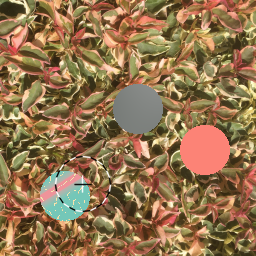 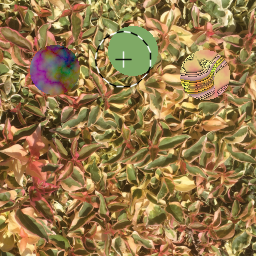
This is a plot of cumulative predator failures (vertical)
versus steps (horizontal, effectively “evolution time”). The
ratio of fails to steps is shown in red at the middle and end of
the run, steps 2000 and 4000. As mentioned earlier, for a “human
predator” in the interactive game-like simulation, this number
is 0 or very close to it. But this FCD5 static predator
(a deep neural net) regularly fails to find any prey. Over the
entire run this ratio is 41%. More typically I run these
simulations for 2000 steps. At that point, the fail/step ratio
was 32%. In previous runs with this predator, the lowest
value seen had been 47%. I am hopeful that this new low
value (32%) corresponds to the subjectively good quality of this
run. That is, perhaps this ratio of failures to steps, for a
benchmark predator model (here FCD5 static) can be used as a metric
to access the quality of future simulation runs.
The previous run was long, this one was short. I wanted to make
another adversarial camouflage evolution run using this new FCD5
static predator. I chose another background image set that has
not yet been used for camouflage. This one is called
“bean_soup_mix” photographed from a package of mixed dried beans
sold by our local grocery store. (Note bean_soup_mix,
and orange_pyracantha used in the March 7 run, had
been incorporated into the FCD5 dataset.) The run (ID: bean_soup_mix_20220307_1826) seemed to be
going fine, until it got a transient filesystem error, which
went unhandled, causing the simulation to crash. I hope I've
learned a valuable lesson here. Maybe I'll put a condition
handling retry loop in my code. The upshot is, this run is only
1763 steps long. While 2000 is more typical, these simulations
presumably continue to improve, but at slower and slower rates.
Shown below are 20 hand-selected steps recorded during the
simulation. Each has a background image, three disks of evolved
camouflage, representing prey. Each image also shows black and
white crosshairs within a b&w circle, indicating where the
predator has “predicted” a prey is located.
I added a facility to keep track of predator failures
as a time series, writing the total number of fails to a file
every 10 simulation steps. A predator failure is the
situation where the neural net model (representing the
predator's vision) predicts that a prey is at a certain location
in the image (black and white crosshair, above) but that
location is not inside any of the three camouflaged prey
disks. For example, the last two images above (steps 1620 and
1740) are both predator fails, with the crosshairs near but
outside a dark green prey. Before I was only measuring the
predator fail rate at the end, as a percentage of total
simulation steps. This run was cut short but the ratio was 48%
(849 ÷ 1760). This is close to the 47% in the previous run. I
suspect the shape of the plot is typical and represents the way
a static predator model is moderately effective against
the “random camouflage” at the beginning of a run, then becomes
less and less effective as the prey population evolves better
camouflage. Note that this static predator model was trained on
the FCD5 dataset which is effectively the sort of “random
camouflage” that is the initial state of a camouflage evolution
run.
I ran camouflage evolution against the March 4 static
predator trained on dataset FCD5. I let it run for 4000 steps,
twice the normal length of these simulations. This background
image set is called “orange_pyracantha”. This is first time I've
used it for camouflage. Seems a difficult environment, since a
prey may find itself on bright orange berries, or green leaves,
or in deep shadow. Evolving a pattern which is cryptic on all of
those is a bit of a challenge. This run seems to have mostly
converged toward deep red/orange patterns, broken up with
“veins” of green, black, or white. The ID for this run is orange_pyracantha_20220305_1146.
As with other runs in this series using a static predator
— the prey population quickly evolves toward a “moderately”
cryptic set of camouflage patterns — but then stops improving
once it is able to frequently “fool” the predator. These cases
of predator failure are indicated below where the black and
white cross falls outside all of the prey disks. Shown below are
20 hand curated examples selected from the 200 automatically
recorded images out of 4000 total steps. (The whole set is
available from me should anyone want to see them.) Additional
notes:
Recall that this is a purely a two dimensional model of
camouflage. That pyracantha bush pictured in the background
images is a highly convoluted 3d surface, which interacts with
sunlight to produce highlights and shadows, then recorded in
perspective. But for this discussion, we ignore that 3d
structure and treat it as a flat, two dimensional color
texture.
I still have not added code to record this information in
detail, but out of 4000 simulation steps, the predator failed
on 1874 steps (
“invalid tournament: no prey selected”). In a sense this seems
like and improvement when using the FCD5 version. In this run
the predator fail rate is 47% (1874÷4000). In contrast, the
February 28 run got 53% fail rate, and the February 24 run got
a 57% fail rate. So 47% is the lowest predator fail rate so
far.
Using yesterday's
FCD5 dataset with other “hyper-parameters” as on February 28, I
trained a new deep neural net model, named 20220304_1135_FCD5_a.
I was encouraged by the progress of this training run. It looks
like FCD5 was a step in the right direction The validation loss
closely tracks the training set loss until around epoch 40,
after which validation loss stays near 0.01 while training loss
continues to overfit. The “fraction inside disk” metric is most
relevant to finding disks in the camouflage simulation. As seen
in some earlier runs, early in training, this metric is actually
higher for the validation set than the training set. That
seems the opposite of what I expect, but I do use lots of
dropout in my neural net architecture, and a lot of randomized
augmentation in the training set. (The augmentation factor
remains at 16, and FCD5 has 20,000 examples, split 80/20,
leading to an effective training set size of
256,000.) At the end of the training, this “fraction inside
disk” metric was at 84% on the validation set (middle chart,
orange plot). I am looking forward to using this in an
adversarial camouflage run tomorrow.
My new hobby seems to be making synthetic datasets. As
suggested on February
28, I generated yet another dataset—the fifth—related to
my “find conspicuous disk” task. I am trying to engineer a
dataset so that a neural net trained on becomes good at finding
conspicuous disks. That is: I want a net that can find features
of a certain size, which seem to contrast with the background
texture, or otherwise seem out of place.) As mentioned before,
this is a type of saliency detection. My longer term
goal is to start from this sort of pre-trained DNN, and
fine-tune (or specialize) it for a given background.
This fifth “find conspicuous disk” dataset is called FCD5. It
is composed of 20,000 examples, each a 128×128 PNG image file.
Each image is labeled (in its filename) with an xy
position in pixel coordinates of the most conspicuous disk drawn
in the image. FCD5 is evenly divided into three types of
examples. My intuition is each of these corresponds to a “skill”
I want the FCD static predator model to have. We will see. Some
hand-selected examples from the dataset are shown below.
Type 1: images with a single random “prey” disk
over a random background, as described on November 14, 2021
(“FCD”).
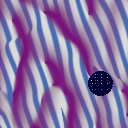
Type 2: images like the “find 3 disks” (F3D) dataset
described on January
29. These images each have three random disks over
a random background. One corresponds to the label, and the other
two are visually muted by blending into the background
image.
Type 3: Images with three copies of a single
random disk texture. They are drawn with three levels of
opacity. The one at the labeled position is fully opaque, the
other two are less and less opaque, making them more muted, less
conspicuous.
New dataset, new augmentations, new camo run (“F3D2”)
Still fiddling with the various “hyper-parameters” of this
static predator model based on finding the most conspicuous prey
(textured disk) on a background. I first tried a synthetic
training set with one disk over a background texture (called
“FCD” for find conspicuous disk). I worried that it was confused
by the camouflage images with three disks. Then I tried a couple
of training sets where each example had three disks (“F3D”) with
an effort to make two of them less conspicuous (by blending them
into the background). This newest one is an effort to make these
two “distractor” images somewhat more conspicuous. The
difficulty is that only one of the three disks is labeled as the
correct answer, so if the other two are nearly as
conspicuous, and the DNN selects one, should that really count
as a failure? (I named this newest set “F3D2” which feels too
fussy. I think I should just call the whole range of variations
“FCD” with a date.)
As before, the black and white dashed circle indicates the
output of this new static predator model. It is the predator's
best guess for where a prey is located—the prediction of
the deep neural net. Ideally it would be choosing the most
conspicuous prey, but any of them will do. I added a small black
and white cross in the center of the circle to make clear that
it is actually a position that the model is predicting.
If that cross falls inside one of the camouflaged prey, then the
predator succeeded, the prey is removed from its population, and
replaced with a new prey, an offspring of the other two
surviving prey. If the predator's prediction is not inside any
prey (see for example the last two images below) then all three
prey survive and the population is unchanged.
This newest dataset has 10,000 unique examples, the previous
one had 20,000. I added new types of augmentation, variations
created “on the fly” during training. Previously I used
mirroring, rotation, and inverting the image brightness (like a
photographic “negative”). In this run I add occasional
adjustment of gamma and hue. I also made more of these modified
training example, increasing from a factor of 8 to 16 in the
number of variations on each precomputed example in the dataset.
The new dataset used .png image format instead of .jpeg for the
128×128 training images. At that resolution the file is only
slightly bigger, and avoids JPEG compression artifacts, which
became much more obvious when fiddling with hue and gamma.
Training a DNN static predator model from this new dataset less
successful according to my metrics. Compare the training history
plots at the bottom of this post with the “RC4” model on February 22. This
model got only 51% for its “in disk” rate on the validation set,
whereas the previous model was 78%. (“In disk” on training set
for new model was 82% before versus 88% previously.) But looking
qualitatively at this run and the February 24 run, they seem pretty
similar. In both cases the predator picked off many of the
highly conspicuous prey (for example, that solid bright green
one in step 0 below). Then as the prey population began to
evolve, it got to a stage where many were camouflaged well
enough to “fool” the predator. Of the 2000 steps in this
simulation, 1054 of them got the “invalid tournament: no prey
selected” flag. This suggests slightly better predator
performance than in the previous run.
Perhaps I should next try another dataset with some mixture of
training examples — varying the number of disks, and varying
levels of “conspicuousness,” in each example.
I started recording an image every 20 steps, producing 100
images during this 2000 step run (id:
michaels_gravel_20220227_1654). Of those I hand
selected the 20 images below. I particularly like the leftmost
prey in step 1120, and topmost in step 1960. Both are a bit too
saturated, but to my eye, they seem to “melt” into the gravel
background image. (In my browser if I hover over an image it
displays floating text with the step number. They are: 0, 60,
80, 180, 280, 320, 460, 560, 700, 800, 1000, 1120, 1460, 1560,
1680, 1780, 1880, 1900, 1960, 2000.)
Another adversarial run with static/pre-trained predator
Similar to other recent runs (February 9, February 4) where prey camouflage evolves
against predation by a simple visual predator model which was
pre-trained on the “find conspicuous disk” task. (This was the
“RC4” model trained on February 22.) The background set is
oak_leaf_litter. Here I automatically captured images every 100
steps out of total of 2000 steps. I may want to increase that
rate in the future. It looks like by step 400, most of the
evolutionary change has already happened. By that point, the
average evolved camouflage seems to be good enough to “fool” the
predator, so prey can survive without further change.
These images are rendered by TexSyn at 256×256 for better
visual quality, although they get down-scaled for use by the
predator DNN (deep neural net) which continues to expect input
at 128×128. As before, the circle drawn as a black and white
dashed line indicates the output of the DNN. This is its guess
(“prediction”) for where a prey is most likely located. If the
center of that circle is inside one of the three camouflaged
prey disks, then the predator has successfully found and “eats”
the prey. (Which is then replaced in the evolving prey
population based on crossover between the other two prey seen in
that tournament group.) If the center of the b&w circle is
outside all prey, then all three prey survive. (And the
“predator goes hungry” although that has no impact in this
version of the simulation.)
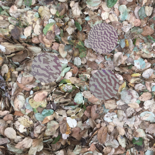
Here is an interesting factoid: of the 2000 steps in this
simulation, 1143 were marked in the log as “invalid tournament:
no prey selected” meaning the result from the deep neural net
completely missed all three prey 57% of the time. I will see
about storing this as time series information for easier
plotting, but generally there were fewer at the beginning of the
run and more at the end of the run.
I discovered that yesterday's (“F3D augmented”) training run
had a bug which made the on-the-fly augmentation have less
variation than intended. I fixed that, improved the
visualization of the training set so I would have seen that
problem, and cleaned up the Jupyter notebook
(Find_3_Disks.ipynb). I trained a new predator disk-finder model
(id: 20220222_1747_F3D_augmented_rc4).
This model is again a slight improvement with the “in disk” rate
for the validation set. It ended at 76-78% versus yesterday’s
~70%.
Pre-trained predator “conspicuous disk finder” RC3
I fixed some issues with the pre-trained predator “conspicuous
disk finder.” This made a relatively small improvement on its
ability to find conspicuous disks. The “RC3” tag is just a joke
about commercial software release procedures where there are
several “release candidates” before one meets all the release
tests.
This deep neural net model (id:
20220221_1113_F3D_augmented_rc3) was trained with four
times more augmentation of the training set. This run
was trained on the 20,000 example F3D dataset, split into 16,000
training and 4,000 validation examples. The training set was
augmented on-the-fly by a factor of 8, for an effective size of
128,000. This is done so that each training batch contains some
of the original image/location training examples, and some of
the variations made by augmentation: rotations, mirroring, and
white-for-black brightness flipping.
This uses a new deep neural net architecture with different CNN
layers at the front. For a couple of months I’ve been using a
model with 2 “units” each of 3 CNNs, and down-sampling by stride
of 2. Now there are four CNN layers, each using 5x5 filters,
with the number of filters doubling each layer (16, 32, 64,
128), and all but the first layer is down-sampling by stride of
2. The dense layers at the end (that boil the data down to an xy
position) are unchanged from before. The previous architecture
had 16,912,858 trainable parameters, this one is slightly larger
at 17,118,042. Yesterday’s training took about 114 seconds per
epoch. This one took about 70 seconds per epoch.
In the images below, as before, the predator succeeds
if the black and white circle (the prediction of the
neural net) surrounds the crosshair center (the label
for that training example).
In the random selection above, the predator has succeeded only
11 of 20 times. While the validation “fraction inside disk”
metric crawled above 70%, it is only slightly better than
previous runs. The “fraction inside disk” metric for the
training set reached 95% presumably due to overfitting. I may
still need to tweak the function that makes random variations on
a given image.
Another adversarial run, this time with fewer bugs
This is essentially the same as the previous run: camouflage
evolution (using TexSyn and LazyPredator) for prey versus a
pre-trained F3D-complex model for predator vision.The two are
combining with my prototype adversarial framework. I fixed the
background scaling issue mentioned on February 4, and another bug where the
image-normalized xy coordinates from the DNN model were not
being scaled back to pixels. (I was drawing those white
circles in the correct place, just not passing on that scaled
value.) As a result, every “predation” attempt was a miss, so it
was effectively evolution with random selection.
To recap: in this model, the “predator” is presented with a
background image overlaid with three camouflaged disk-shaped
“prey.” The predator's job is to locate any of the three prey by
selecting a position inside one of them. Think of this as a bird
pecking at a spot on a tree trunk where it suspects a tasty but
well-camouflaged beetle may be located. In the human-in-loop
version of this simulation, while it sometimes takes bit of
visual search, I have never been so bamboozled by camouflage
quality that I could not locate all three, then choose the most
conspicuous one to click. On the other hand, my newly trained
DNN (deep neural net) predators frequently “miss” and so select
none of the prey. Previously in LazyPredator this would have led
to one of the three prey arbitrarily being declared the loser,
and replaced in the population. This seems unfair since all
three prey successfully “fooled” the predator. Now when this
happens all three prey survive. The details are described in
this LazyPredator
blog post.
With those fixes, I made a new run using the maple_leaf_litter
background set. I was aiming at a run of 2000 steps, but my
“predator server” running on Colab timed out. Since the predator
side is stateless, I added some simple code to allow restarting
the Colab side mid-run. I stopped the run at step 2142. I am
still recording these images by hand, at irregular intervals.
The primary observation is that the F3D-complex predator model
does well at the beginning of the run when the camouflage is
essentially random and of poor quality. (The model is quite
accurate at picking out “uniform” (single color) prey against a
complex background.) Before long, the camouflage begins to
improve, and soon seems able to fool this simple predator model.
By the end of the run, most of the prey were surviving while the
hapless predator frequently chose locations which cleanly missed
all three prey. As a result the prey live long happy lives and
the population only slowly drifts. These images are in time
sequence order, from the upper left, row by row, to lower right.
To me it seems the earlier ones are more conspicuous and the
later ones are more cryptic. But I suppose that is a subjective
judgement.
First “no human in loop” adversarial camouflage run
This is my first adversarial camouflage run without a
human-in-the-loop. After training the F3D-complex model on February 2, I used
my prototype predator/prey framework to evolve camouflage with
TexSyn and LazyPredator, using a fitness function based on
“predator vision” with the F3D-complex model. Initially I was
seeing the same failure mode seen December 28 (noted at end of December 15's
post). I dug into the code and found that pixel data read from
the training set was not being remapped from a range of [0, 255]
to [0, 1] as expected by the neural net. Once that was fixed,
the system began to work correctly.
It ran for 1664 steps before my Colab instance timed out after
about 20 hours on this simulation. The images below were just
screen-grabbed by hand, at the beginning and end of the run. (It
ran overnight so I was asleep during the middle of the run.) In
each case you can see a bit of the oak_leaf_litter
background set. These are incorrectly zoomed in by a factor of
about 8, another bug to be fixed soon. Each image is overlaid by
three disks of synthetic camouflage texture. The white circle
indicates the output of the “predator vision” neural net. Many
of these are near the position of one of the three disks. Often
the selected disk is arguably the most conspicuous disk. This
prototype run has several problems which I hope to fix soon.
This simulation architecture has been a goal of mine since
about 2008 (description).
I had a vague conception of it in 1994 which lead to a “stepping
stone” project on adversarial learning: Competition,
Coevolution and the Game of Tag. In 2010 I built the
camouflage evolution part with visual predation via a
human-in-the-loop: Interactive Evolution of
Camouflage. These prototype results are low quality, but I
am glad after all this time to see it finally run.
I took the 20,000 “find 3 disks” training examples generated by
TexSyn and augmented the dataset by a factor of two.
That is, I made one modified version of each precomputed
example. The modifications include rotations (by multiples of
90°), mirroring, and inverting the brightness (white↔︎black). I
can easily create more this same way, but I am beginning to bump
up against the memory size of the Google Colab instance I'm
running on. So for now, my dataset is size 40,000, or which 20%
are held out for validation. Training this model took 49 minutes
on a Colab GPU instance.
The annotation shown below is somewhat different. The black and
white crosshair marks are now used specifically to indicate the
label (relative xy coordinate within image) for a given
training example (image). In this case (F3D) that means that
(what I assert is) the most conspicuous disk's centerpoint is at
the intersection of the two crosshair lines. A circle, drawn
with a black and white dashed line, is used to indicate the xy prediction
made by the deep neural net model after training. So the
crosshairs show what I think is the correct answer, and the
circle is what the model “guesses” is the answer.
A successful detection of the most conspicuous disk is
indicated by the crosshair intersection falling inside
the circle. In the 10 examples below, numbers 1, 2, 5, 6, and 10
are successful.
This success rate (5 out of 10) is slightly worse than the
average performance of this model. It got 67% of its predictions
“inside disk” on the validation set. (It got 82% on the training
set, presumably due to overfitting.) The plots below show
training metrics over 100 epochs.
I hooked up the plumbing so I could try learning against the
new “Find 3 Disks” training set. This is preliminary, does not
include any training set “augmentation” (including rotations,
mirrorings, etc.), nor any tuning. It is encouraging that it is
not a complete bust. The middle “fraction inside disk” metric
only gets to about 0.5 for the training data, even lower for the
validation data.
I also fixed a problem with these plots. I was getting a very
high loss value on the first epoch of training, about 20× the
value on the next epoch. This caused the plot's auto-scaling to
push all the interesting data to the bottom. (See e.g. the plot
at the end of January
9.) Here I simply skip the first epoch in my plots:
My January 9
post suggested the next step would be to train a model to find
the “most conspicuous of 3 disks” — while using images
of natural complexity. This is a peek at a prototype training
set I generated. It is based on combinations of photographic
textures and synthetic textures from TexSyn (as in the earlier
“find the (single) conspicuous disk” task). It also uses a fixed
strategy to reduce the “conspicuousness” for two of three disks
in each image. The idea is that the label for each image
(training example) is the centerpoint of the (intended) most
conspicuous disk. In addition there are two other disks
(“distractors”) which are modified to (I hope) make them less
conspicuous. Here are eight images from the training set of 5000
procedurally generated images, rendered at their “postage stamp”
resolution of 128×128:
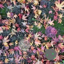
Here are some generated by the same model, rendered at 512×512
for the benefit of my elderly eyes. As before (see November 14) 60%
of the time the background image is a (randomly selected and
cropped) photograph and 40% of the time a synthetic texture.
Conversely 60% of the disk textures are synthetic and 40% are
photographic. The “algorithmic conspicuousness reduction”
techniques used here are (a) blending the disk texture into the
background at 50% opacity, and (b) “confetti noise” blending:
multiply the soft matte signal by a random number on [0, 1] at
each pixel of texture output. The goal is to have one most
conspicuous disk, and two others which are less
conspicuous, each in their own way. Looking over the images, I
think this “often” works but not always. I think this
“conspicuousness reduction” technique will be the key to making
this approach work, and I may well have to adjust it in
subsequent versions of this training set.
At the end of December
15's post, I mentioned I wanted to train a vision model
that would (a) find conspicuous disks, (b) be unfazed by the
presence of additional such disks, and (c) correctly choose the
most conspicuous one out of several. (For convenience, I set
“several” to 3.) Starting with a super-simplified case, I took
the approach of procedurally generating a training set with
(what I hoped would be) a controllable degree of
“conspicuous-ness.” Using solid uniform color textures, I choose
a random foreground and background color. Over the background I
draw three non-overlapping, soft-edged disks: one with the
foreground color and the other two increasingly blended into the
background color. The label for each image is the centerpoint of
the full foreground color disk, as (x, y) relative to the image
bounds.
Then I used the same deep convolution neural net architecture
as in the December
15 post, training it on 5000 randomly generated examples
of this uniform texture dataset, in a notebook called Find_3_Disks.
Below are 10 random examples selected from the test (validation)
set, with the model's predictions shown as black and white
crosshairs. Very often the model correctly identifies the
intended “most conspicuous” disk (for this contrived dataset)
predicting a centerpoint which is at least inside the intended
disk.
An interesting aspect of this run, unlike my previous limited
experience: it made no apparent progress for the first ~60 of
100 epochs in the run. Then suddenly it had a “eureka!” moment
and rapidly organizes into an effective network. Maybe this
corresponds to aimlessly wondering around on a nearly flat
plateau in “loss space”?
My next goal will be to take more general textures—photographs
and TexSyn textures—and come up with a way to procedurally
reduce their “conspicuous-ness” to do a version of this Find_3_Disks
with more realistic image complexity.
Starting from the dataset described on November 14 (plus
my newly acquired beginner's knowledge of deep learning, the
excellent Colab
facility provided by Google for prototyping deep learning in the
cloud, plus Python, Jupyter,
Keras and
TensorFlow,
all new to me) I manged to cobble together the prototype “find
conspicuous disk” model I was aiming for. It started working
around December 15. This blog post is updated with later
insights, and graphics saved during a run made on January 5,
2022.
Previously I procedurally generated a dataset of 2000 examples,
each with a background image (either photographic or synthetic)
and an overlaid “disk” of another texture. Each training example
included a “ground truth” label indicating where the disk's
centerpoint was placed within the larger image. Eventually I
added another 3000 such labeled examples. I “augmented” this
dataset (in memory) by rotating and mirroring for a total of
40,000 images. (I also tried inverting the brightness of the
images but that seemed to cause difficulties. I disabled that
and will return to it later.) The original images were 1024×1024
RGB pixels. For now, I scaled those down to 128×128. Using the
Keras API, I created a deep neural net of about 20
sequential layers. It takes a 128×128 RGB image as input. As
output it produces two floats representing its prediction
of the disk's centerpoint. I split the dataset into training
and validation sets, then trained the model for 100
epochs. These plots summarize the training, with epochs
(training time) running horizontally, versus some metric shown
vertically, for both the training and validation sets. The loss
function was a typical mean standard error (MSE). Accuracy
is a standard statistical measure of prediction quality.
“Fraction inside disk” is how often the predicted point was
within the disk's boundary. (All graphics in this post are cut
and pasted as drawn by Python's matplotlib.pyplot
in the Jupyter notebook on Colab.)
After training I visualized the performance by picking 20
images at random from the validation set, used the model to
predict disk position, then drew “crosshairs” at that position.
Images for the 20220105_1136 run are shown below.
In most cases, the model predicted a location at or near the
disk center, or at worst, somewhere within the disk's boundary.
The final three images are clearly wrong: the disk is located
more than a radius away from the crosshairs. The fourth from the
last is hard to call. It looks like the same photo was used for
both the background and the disk. So it is accidentally
“cryptic” — well camouflaged. So I am not sure if the crosshairs
correctly indicate the disk, or if it is somewhere else. At
128×128 resolution it is very hard to tell, even for my brain's
neural net. Note that this error rate roughly lines up with the
“fraction inside disk” metric.
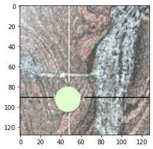
I constructed a bit of a Rube Goldberg machine to connect
TexSyn running in c++ on my laptop with this “find conspicuous
disk” vision model running in Python on the Colab cloud. I got
them talking to each other on December 28 by reading and writing
files to a shared directory in the Google Drive cloud storage
utility. On January 1 I tried running the combined simulation.
It did not work. The xy predictions from the model were
often significantly outside the [0, 1] range it had been trained
to produce. Effectively it wanted to “draw the crosshair”
outside the image. My current hypothesis is this model—which
seemed to do a good job locating one conspicuous disk—is
unprepared to handle three disks, as used in EvoCamoGame. For
example, see the first image on October 19.
My next task is to generalize in that direction.
Training set for learning to find conspicuous disks
For a predator to find prey visually, it must perceive some
contrast between prey and environment. Camouflage is about
making this detection more difficult: prey may evolve coloring
allowing them to blend in with the environment. Before trying to
break camouflage—to detect camouflaged prey—an important first
step is to detect conspicuous prey.
Concretely, in my very abstract and synthetic 2d model, I hope
to train a vision system to recognize conspicuous “objects.”
These will represent prey. In the abstraction used here, I am
talking about disk-shaped regions of texture, overlaid on a
background image. (That background image represents the
environment in which the predator and prey both live.) I hope to
start using supervised deep learning to pre-train a
network to locate disks, of a given size, with a contrasting
texture, within a larger image. (This is very similar to saliency
detection.) If/when that works, I will then try to refine
these networks (via transfer learning) to “break”
camouflage. The supervised pre-training will require a
collection of images with “ground truth” labels to indicate the
location on the image of the conspicuous disks.
Last night I got my generator working and I have created about
2000 training examples. I may decide I need a different design,
or just more of the same. They are easy to crank out averaging
about 10 seconds per training examples on my old 2014 MacBook
Pro. Each image consists of a “random” background texture with a
randomly placed disk of another “random” texture. Each training
example is just a JPEG image file, with the pixel coordinates of
the disk center encoded in the file name. Currently, the
background image is either one of the photographs previously
used in this project, or a TexSyn texture rendered from a random
LazyPredator tree (as would be done in the initialization of an
evolutionary computation run). 60% of the backgrounds are photos
and the other 40% are synthetic. Conversely 60% of the overlaid
disks are synthetic, and 40% photographic. So the majority are
sim-over-real, but all four permutations are included
(real-over-sim, sim-over-sim, and real-over-real). The images
are 1024×1024 pixels and the disk diameter is 200. Shown below
are a few examples hand selected from the first 2000 training
examples. Some of them are simple (first one below) others are
complex. Some are quite conspicuous (orange disk over gray tree
bark) while others are surprisingly cryptic (last one below, a
real-over-real case: pavement disk over polished granite).
I finally fixed a very old bug in TexSyn. As you will have
noticed, I like to display procedural textures as disks. This is
mostly a side effect of the application to camouflage evolution,
where the idea is that these disks represent some sort of
creature (say a beetle) on some background (say tree bark) but
in any case, not a rectangular region of texture.
Fine, whatever floats my boat. But the code that generates the
circular rasterization initially assumed that the diameter was
an odd number, so that there would a pixel in the
middle, at (0, 0) in texture space. Originally this was helpful
for testing. Now the only requirement is that the disk be
exactly centered in the rendering window. For an even
diameter, that means the origin of texture space will fall
between four pixels near the center.
But until today, only the odd-diameter case was supported.
Worse, you got the same error (failed the same assert)
using an even size when rendering to a non-disk square target!
It is now fixed, which would not be worth writing about here.
But while refactoring, I decided to use a slightly different
(“better”?) definition for the disk. Generally rendered disks
will effectively be ½ pixel larger in radius. This is nearly
imperceptible. If you look closely at previously rendered
texture disks, they had exactly one pixel on their top, bottom,
left, and right sides. Now the in/out test is made for the
center of the pixel (instead of its outer boundary) so now there
will be “several” pixels on the boundaries of the disk (a
function of disk diameter). I made this post just in case I
notice something does not exactly match a previous result and
need to remember when I made this change.
Last April 14,
I made an evo_camo_game run on this same set of
background images. They show redwood leaf litter, blown off
trees in my neighborhood, and against the curb on the other side
of the street. The previous results were ok, these are better,
but not what I consider “strong.” I use that term when I look at
an image showing a “tournament” of three camouflage textures,
and it takes a while to find them. Most runs have some strong
individuals which happen to be randomly placed in positions
where they “melt” into the background. For example the one near
the bottom center in the first image below, from simulation step
2886. In the best runs, there will be some tournaments where all
three are very well camouflaged. This run falls short of that
level.
(I'll also note that this run (redwood_leaf_litter_20211010_1014)
used a larger simulation. The population size was increased from
120 to 200, and the crossover size min/max where increased from
[60, 180] to [75, 225]. I ran it for 3300 steps, or about 16
“generation equivalents” (3300 ÷ 200 = 16.5) so roughly the same
as earlier runs, adjusted for population size. The extra tree
depth seemed to make a lot of the texture renders noticeably
slower. In the end, this large simulation did not significantly
increase the quality of results.)
As I wrap up my experiments with interactive evolution of
camouflage, I am writing a report. It is not for publication in
a journal, but just meant to be a more readable summary than
this blog/diary. I wanted better images to include in that
report.
Nine hand-selected “thumbnails” from this run, on steps 1438
through 3252. Number seven is impressively cryptic:
At the beginning of this project I was posting here every few
days. Now months go by without a peep. Here is a quick recap.
SimpleImageMatch: after the “Huntington hedge” camouflage run
I went back to my ill-fated simple image match idea. It seemed easy:
evolve a population of textures to “match” a given target image.
I hoped it would come up with many interesting “near misses” —
textures similar to the target image, but different in various
ways. But it didn't work. It seriously didn't
work. By “not work” I mean that the population of textures would
converge on a family of portrayals that were only barely similar
to the target image. For quite a long time I would say “Well,
that run didn't work. Oh! I know what went wrong!” And I would
say it over and over, run after run. I still don't understand
why it so stubbornly fails to be “easy” but I need to admit I'm
beat. While I hope to return to this idea, for now I am stuck.
Deep learning: the SimpleImageMatch runs were long,
non-interactive computations. So in parallel I began once again
to learn deep learning. My first try was 20 years ago. The field
has progressed by leaps and bounds since then. Useful
abstractions have been adopted. The tools have become powerful
and standardized. I was especially helped by the timely
publication of Andrew Glassner's excellent
book Deep
Learning: a Visual Approach. I read it cover to cover and
am now working through the online supplement — bonus chapters
that apply the concepts discussed in the book to specific
implementations with modern libraries. My goal is to build a
system like EvoCamoGame, where the human predator is replaced by
a deep learning predator based on convolutional neural networks.
In preparation for future work with hybrid closed loop
camouflage discovery, I wanted to create a set of labeled
training data. The results below were produced like previous
interactive camouflage runs. But in addition “tournament
images”, like the four below, were saved automatically, along
with “ground truth” data specifying the location of each
camouflaged prey texture, as a bounding box in pixel
coordinates. For each saved image, there is a line in the data
file with the step number, and three sets (one for each prey
texture) of four integers (min x, min y, max x, max y). This
data set is available here: training_set_20210729.zip.
The folder contains 202 files: a bounding_boxes.txt
text file with the ground truth data, and 201 image files step_0.jpeg
through step_2000.jpeg with the step number
counting by tens.
The four images below are from steps 1336, 1744, 1938, and 1968
of the 2000 step run.
(The background images were taken July 7, 2021 at 2:12pm,
looking down at the top a trimmed decorative hedge on the
grounds of The Huntington Library, Art Museum, and Botanical
Gardens in San Marino (near Pasadena, near Los Angeles,
California). The plant is probably a Photinia, this particular
species (hybrid?) has white/cream edges on its more mature
leaves, perhaps “Cassini” or “Photinia Pink Marble™” as
described here.
Run ID: huntington_hedge_20210726_1204.)
These are twelve hand-selected prey camouflage textures from
steps 1108 to 1990:
More negative results to report. Beyond the application to
camouflage, for a long time I've wanted to try using
evolutionary texture optimization to discover novel ways to
represent a given image. I hoped I could effectively “invent”
visual stylizations. This would be related to, but different
from, the large body of recent work in style
transfer developed in the computer vision community. I had
grandiose plans, but as a first step, I thought I could try simple
image matching based on a “target image” like this
photograph of a springtime hillside near our house:
I planned to evolve a population of textures using a fitness
function based on image similarity. It seemed like it should be
easy to find evolved textures similar to the target image, then
to gradually improve that similarity over evolutionary time.
Either something is deeply wrong with my code, or none of the
several metrics of image similarity I tried were appropriate for
this task. I made a series of experiments from July 4 to 24. I
got several results where the entire population converged to
minor variations on a nearly uniform texture whose overall
color—sort of a mid-range blue-green—was roughly the average
color of the target image. I got some results with a very
simplified “cartoonish” representation of the target image, like
a child might make with some colored shape stickers. My last run
seemed to be trying to represent the scene, but it was so
abstract, I might have been fooling myself.
Note: in the images below, made by my very prototype
code, (1) the image in the upper left can be ignored, it is just
the most recently created texture, (2) the second is the target
image at 255² pixels, and (3) the rest of the 58 textures in the
grid are about the top half of the evolutionary population,
sorted by fitness from highest to lowest. So the third texture
on the top row is the highest fitness individual in the
population being evolved by LazyPredator.
In this run, the texture seems arbitrary, and the only
“matching” is that the overall hue is close to the average color
of the target image. A texture in the third column, fourth row,
seems to almost have a blue sky above and green hill below, yet
has fitness rank of 31 out of 120, so clearly this fitness
function was not measuring the right thing:
This run converged to a simplistic dark green hill with a blue
sky, while ignoring all textural details:
This run converged to a (circular?) dark gray “hill” with a
textured “sky” in blues and pinks, which might charitably be
seen as trying to represent the clouds:
Here is the almost “cubist” representation, as a simple radial
texture, which vaguely puts dark green below like the hills, and
bluish above like the sky, with some of the textures showing
some desaturation in the sky, perhaps suggestive of clouds?
These seem to be mostly a single SliceToRadial texture
operator (see January
24, 2020) at top level, with other textures used to
generate that 1d “slice” of colors. In a few cases, as in the
lower left corner of this grid, two overlaid SliceToRadial
textures are visible. (This run began on July 22, 2021 at
4:37pm.)
A few seconds of screen recording of the run begun July 19,
2021 at 2:27pm. This is the upper right hand corner of the
display, showing the newest texture (created by crossover and
mutation on that single evolutionary step) next to the target
image. Perhaps the prominent, often blue, circular feature in
the “sky” region may be created by a Hyperbolic texture
operator (see July
11, 2020) based on the way detail seems pressed against
the circular boundary.
Yesterday an idea popped into my head. I have been a fan of
“test driven development” since I first encountered it in a job
about six years ago. Developing a test suite in parallel with
your application code allows you to verify it works correctly
initially, and to verify it is still operating correctly after
subsequent changes. It also helps to procedurally generate large
numbers of test cases, more than you would try by hand. When
bugs are found, they often become new test cases, to make sure
that failure case never reappears. Most of these are somehow
measuring internal consistency: comparing two results obtained
by different methods.
What occurred to me was I had insufficient “test coverage” of
whether top level results—such as the texture produced by a tree
of operators—was the same today as it was yesterday. When I
recently refactored the Color class (described below on June 23) this was
what I really needed to know. Is a color today exactly the same
as a color yesterday? The way to do this is experimentally
record results produced today and copy those into the program
text of the test suite. Future versions of the code are then
required to continue to produce those same result values. The
downside of this is that I should have done it a long time ago,
but better now than later. Certainly there have been intentional
changes, such as a major rework (on May 6,
2020) having to do with gamma correction and linear color
space, which would have required remeasuring and updating the
test.
The new tests are in the function UnitTests::historical_repeatability().
I defined four TexSyn textures (Spot , Turbulence, NoiseWarp,
AdjustHue) with “random” parameters (I printed out a list of
random floats on [-1, +1] then copied them into the source code
as needed). Then I sampled the textures at two random positions
within the unit radius disk, those positions and resulting color
samples are all similarly “frozen” into the source code. The
test passes as long as the frozen values continue to match newly
computed results.
Any non-trivial software change is an excuse for me to do
another “reality check” that evo_camo_game is
still running as expected. The hand-selected camouflaged “prey”
shown below are from steps 1300 through 1995 of a total of 2000
steps in the run. The background photos are of multi-colored
pebbles pressed into concrete between the street and a
neighbor's front yard.
“...full of sound color and fury, signifying
nothing...”
For the last couple of weeks I have been working on two other
projects, with just a little puttering on TexSyn in the
background. I previously removed some unused .cpp
files, where all the content was in the .h file. I
should admit that I lean toward “header only” c++ libraries.
Many c++ designers would disagree, but I think the modest
increase in compilation time is worth the much easier
distribution, installation, and usage of header-only libraries.
One of the not-unused files was Color.cpp. I have
been refactoring and making lots of little edits to clean up the
Color class and to move its entire definition to Color.h.
The class is native RGB, but supports HSV color
space, first described by Alvy Ray Smith in a 1978
SIGGRAPH paper. HSV is a simple color model, but is
sufficient for TexSyn since convenient parameterization is not
needed for evolutionary optimization.
I had left many “to do” notes in the code about awkward color
API and especially the RGB⇄HSV conversion functions. I made a
new class inside Color called HSV to
contain and modularize the datatype and conversions. The HSV
class is also exported to global scope so it can be used in
other code, particularly the texture operators. One of the key
improvement is that both Color and HSV
have constructors that take the other type as a parameter: Color(hsv)
and HSV(color). This allowed a fair amount of
streamlining. All of the texture operator code using HSV got
shorter after the refactor.
I added more UnitTests to ensure the conversions
returned identical results against explicit constants written in
the tests. (This is in addition to previous “round trip”
conversion tests: RGB→HSV→RGB.) I verified that the texture
operators returned the exact same result down to floating point
accuracy. I do this by duplicating the old operator and renaming
it, making changes to the other version, then comparing them
with Texture::diff(). It counts the number of
individual rendered pixel colors which are not exactly the same
float values in the two textures. This mismatch count was zero
in all cases. So in the end lots of code changes, but no changes
to the textures themselves.
Update June 25, 2021: similarly I merged Vec2.cpp
into Vec2.h and deleted the former.
After adjusting selection weights for the phasor noise
operators, on June
11, I intended to do a quick run to convince myself that
everything was still behaving normally. I found myself
unconvinced! I ran for a couple hundred steps and while it was
generally tending toward the green color of the “clover”
background, I saw little to no improvement in camouflage. I kept
expecting it to start getting better, even as I got to 1000 then
2000 steps.
It seemed unlikely that I had actually broken anything. I
assumed that it was just “bad luck” — that randomized algorithms
sometimes fail. But I wanted to believe that it would work,
given time. As I got past 2000 steps, things did appear to be
improving: the optimization toward effective camouflage patterns
began to occur. These five samples show camouflage “prey”
between step 2500 and 3000. This is longer than I normally run
the simulations, I assume due to bad luck, but eventually the
population began to self organize — “get its feet under it” —
and began to produce effective camouflage.
Adjust selection weight for phasor noise operators
As on March 26,
I adjusted selection weights used in building random GpTrees
for the initial population at the beginning of an evolution run.
As then, the goal is keep consistent the probability that a
given GpFunction will be selected, in the face of
multiple versions of the same “type” of texture operator. This
was the motivation of MultiNoise (see January 12, 2020)
which combined the five variations of Perlin noise into one
texture operator, rather than make it five time more likely one
of that family would be selected. The selection weight mechanism
was added (on March
26) to make a similar adjustment for the three
variations of “spots” operators: LotsOfSpots, ColoredSpots,
and LotsOfButtons.
Today I adjusted PhasorNoiseRanges and PhasorNoiseTextures
to each have half the default selection weight.
I am still fiddling with the presentation, but this is the
“function usage” time series data from my second evo_camo_game
run with background image set “kitchen_granite.” During the
first run, my logging code had a bug. In the second run, logging
worked fine, but the camouflage quality was not as good. (See
some examples after the plot.) After creating an initial random
population of 120 textures, each “program”/“nested
expression”/“abstract syntax tree”/GpTree was
inspected to count the occurrences of TexSyn texture operators.
At every tenth step of the 2000 step simulation, usage counts
for 45 function, summed over the entire population, were
appended to a CSV file. Shown below is a spreadsheet plot of
that file: counts on the vertical axis and evolutionary time
across the horizontal axis. I excluded from this plot the “leaf”
values of the program trees. These include floating point
constants and calls to both Vec2(x, y) and Uniform(r,
g, b). The latter two had counts 2-4 times larger than
the other data, so were inconvenient to include on the same
plot.
The only analysis I will offer is that some of the usage count
clearly increase over time. That blue one that peaks above 300
is for the texture operator Blur. This suggests that in
this run, the average tree contains 2 to 3 Blur
operators. Conversely some function counts clearly fall off over
time. The Ring operator (gray plot line near bottom)
starts at 19 occurrences in the initial population and falls to
zero just before step 400. By the end of the run, 9 operators
had fallen to zero count, disappearing from the population. Some
of the counts do not seem to rise or fall, staying at about the
same level with some small wobble up and down.
There is a loose, conceptual, parallel between these function
counts and the relative frequency of biological genes in the
genome of a population of some species. As with genes, the
frequency of a function will tend to increase when it confers a
survival advantage to an individual, and will decrease if it
reduces survival. But frequency can also change by “hitchhiking”
effects where it happens to co-occur with an important gene. The
red plot trace near the top (ends at count ~275) is for NoiseWarp.
In this case, I wonder if Blur just “hitchhiked” on NoiseWarp—perhaps
in a helpful subtree that contains them both. Intuitively, it
seems to me that NoiseWarp is more important than Blur,
given these granite background images which are “swirly” but not
“blurry.”
Thumbnails from steps 936, 1330, 1670, 1846, and 1940 of this
second “kitchen_granite” run of 2000 steps:
I made another evo_camo_game run with the intent
of testing my new analysis tool for collecting time-series data
for “function usage.” But I discovered a bug in the new code so
the data I recorded is not useful. I will repeat this run soon
and make a second attempt at recording function usage time
series.
In the meantime, here are images from this first run. The
backgrounds are photos of a granite counter-top in our kitchen.
(It is illuminated in these photos by direct sunlight, so
appears brighter than it normally would.) This run developed
some effective camouflage patterns, which do a good job of
obscuring their boundaries. But the camouflage is slightly
off-kilter. Early on it stumbled into some cryptic patterns,
which were in a pink and magenta color scheme, with some green
accents. It is noticeably offset in hue from the
orange/tan/brown colors in the granite. I expected the hue to
adjust to be closer to the background during evolution. However
most of the prey population remained stuck on the pink color
scheme for the entire 2000 step run. Here are images of three
hand-selected tournaments (each with three camouflaged prey) at
steps 1413, 1863, and 1931.
Below are 12 hand selected examples of camouflaged prey
spanning steps 310 to 1962 of the 2000 step run. Note that some
“brownish” patterns arose but they never became as cryptically
effective as the pink/green phenotype.
This camouflage run (yellow_flower_on_green_20210529_1236)
includes the new NoiseWarp texture operator. I assume it
produces the wavy shape of yellow and green elements in these
camouflage patterns.
The background images are of a neighbor's landscaping, probably
“Scot's Broom” (Cytisus
scoparius) or perhaps the similar “French broom” (Genista
monspessulana). These common European shrubs are
technically “invasive” here in California, but have become so
extremely widespread that they are “effectively native.” In the
spring they put out dense clusters of bright yellow blossoms
contrasting with the vivid green foliage.
I ran this simulation for 2500 steps. Shown below are three
“tournaments” each with three camouflaged prey, from late in the
run at steps 2375, 2419, and 2485:
Individual camouflaged prey, hand-selected, from steps 635
through 2483:
These are randomly generated GpTrees with a
NoiseWarp operator at the root (top). This uses basically
the same procedure as on May 8: generating a set of examples, then
hand selecting some visually interesting ones. The “source code”
(textual representation of the GpTree) is given
for the first two. The others are analogous but rather too long
to be readable.
The NoiseWarp examples on May 24 all used Brownian noise
for generating the lateral warp displacement vector. It was
actually using the TexSyn concept of “multi-noise” (like the MultiNoise
texture operator, see January 12, 2020, based on the utility PerlinNoise::multiNoise2d())
where an additional parameter (called which,
between 0 and 1) selects between five styles of noise: Perlin,
Brownian, turbulence, “furbulence,” and “wrapulence.” Here is
one more “wedge” through the parameter space of NoiseWarp,
operating on the same blue and white cloudy pattern, with scale
of 3, amplitude of 0.5, and “which” of 0.1 (Perlin), 0.3
(Brownian), 0.5 (turbulence), 0.7 (furbulence), and 0.9
(wrapulence):
I liked the “domain warp” textures (via Perlin, Quilez, and
Bostock) described on May 21. However they are scalar textures.
So visually they are black and white, or used to matte between
two other textures (as in the May 21 example), or colorized by
some ad hoc rules as Ken Perlin did in 1985
and Inigo Quilez did in 2012.
To integrate this domain/noise warp into TexSyn, I felt it ought
to take an arbitrary input texture (and some parameters) and
return a texture which is warped version of the input texture.
That it should have the same color structure, just pushed around
in texture space. So I took the same basic approach as described
on Inigo's page: an output pixel color is read from input
texture at a point “slightly offset” from the output pixel
position. The noise offset's coordinates are from calls to a
scalar noise function (2d Brownian in these examples) at
positions offset by two perpendicular basis vectors. Two
parameters noise_scale and noise_amplitude
adjust this mapping:
I ran across Mike Bostock's Domain
Warping which is based on Inigo Quilez’s
Domain
Warping. The examples below are essentially the first
three examples on Inigo's page. “Essentially” because I started
with my existing Brownian texture generator for the
zeroth level, then built on that using Inigo's parameters for
the next two. The phrase “domain warping” felt a little too
ambiguous, given that quite a few of TexSyn's operators perform
some sort of domain warping. This specific technique is based on
recursively reapplying the same “fractional Browning motion”
map. As Inigo points out, this is is closely related to Ken
Perlin's procedural “marble” textures, described in his SIGGRAPH
1985 paper An
Image Synthesizer. This code (I'm calling it NoiseWarp
for now) could be used in TexSyn as is, but I am giving some
thought to ways to generalize it.
This run of evo_camo_game uses photos of a
neighbor's front yard gravel bed for its background (run id: michaels_gravel_20210513_1743).
It prominently uses the new “phasor noise” texture operators.
Here are images of the three camouflaged “prey” in tournaments
at steps 1260, 2564, and 2858 of a run 3000 step long.
Below are 15 hand-selected thumbnail images of camouflaged
prey. They correspond to steps: 150, 755, 840, 1558, 2024, 2098,
2411, 2456, 2529, 2607, 2702, 2788, 2867, 2932, and 2974 of a
run of 3000 steps total.
Random phasor noise with kernel parameters from textures
Analogous to the random “mixed kernel” phasor noise samples
shown on April 28,
these are random textures whose GpTrees have a PhasorNoiseTextures
operator at the tree root. (They were constructed using the
utility FunctionSet::makeRandomTreeRoot().) That
is, there is a PhasorNoiseTextures operator at top, two
random floats, and five random TexSyn trees as parameters. For
example, the second texture shown below—pinkish swirls over
muted multi-color—is defined by this code:
In that code, the “profile function” is nearly a sine wave. The
textures defining kernel radius and wavelength are constant (“Uniform”)
while the texture defining kernel orientation is itself another
PhasorNoiseTextures. The last two parameters are the
pinkish color and the multi-color background.
I generated 100 such textures (the whole set can be seen here)
then hand-selected out these 20:
Just a note about non-backward-compatibility. I had been
following the paper Procedural
phasor noise—and mathematical conventions—by using units
of radians
for Gabor kernel orientation angles. Today I switched to using
units of “revolutions” a normalized measure of rotation: 1 revolution
= 2π radians = 360 degrees.
There was only one place in the phasor noise code where this
mattered. PhasorNoiseBase::samplePhasorFieldOfKernel()
now scales the kernel's angle by 2π. The reason for this change
is to better fit in with TexSyn's interface to LazyPredator, the
evolutionary optimizer. One aspect is which GpType
to use for an angle's literal value? These constants have an
associated numeric range. None of the existing ones correspond
to a float value on the range [0, 2π]. More significantly, the PhasorNoiseTextures
operator takes its Gabor kernel angles from the luminance of
colors in a given Texture object. While a
Texture's luminance is unbounded, the vast majority of them will
be inside the unit RGB cube, so Color::luminance()
will be on [0, 1]. Mapping this value on to an angle in
“revolutions” seems the most natural.
The only impact is that some code snippets below may no longer
produce the pictured texture.
I tried the rubber duck. I tried convincing myself that I'd
exchanged angle and wavelength. Then finally I took a closer
look at PhasorNoiseBase::samplePhasorFieldOfKernel()
which I “knew” was correct, because I'd used it for PhasorNoiseRanges.
There was confusion between “global” texture coordinates and the
“local” space of a given kernel. Et voilà:
Trouble getting phasor noise parameters from textures
Normally I post here after something is working properly. Today
I'm posting about a mysterious bug that has had me stuck for a
couple of days. My goal here is something like rubber
duck debugging, where by describing the problem I may gain
insight into its cause. After seemingly getting the “mixed
kernel” version of phasor noise working (see April 28) I refactored that PhasorNoisePrototype
operator into a PhasorNoiseBase class plus a small
PhasorNoiseRanges derived class for the “mixed
kernel” version. Then I wrote a new derived class PhasorNoiseTextures
to handle the version where parameters vary across the texture
plane by three input textures to specify: kernel radius, kernel
angle, and kernel wavelength. That ran OK, but the resulting
textures did not fit with what I expected to see.
Back on April 11 I posted a sample of
phasor noise made with a c++ version of the GLSL sample code
provided by the authors. That is on the left below. It has
constant values for kernel radius and wavelength, and uses a
Perlin noise texture to provide the smoothly varying angle
(orientation) values. This produced the labyrinth-like “sand
dune” pattern characteristic of phasor noise. On the right below
is a texture produced by the new PhasorNoiseTextures
operator that “should” look like the one on the left. It looks
more like a “contour map” of the angle field.
And here is the result if the angle field is given as a Spot
texture. I think this should have an angle of zero on the outer
edge (as it does) then with that angle increasing radially
toward the center (origin) of the texture, eventually getting
back to 2π. That is, I expected to see a radially symmetric
pattern, but instead see this:
[Update May 8, 2021: as described above (on May 5, 6, and 7) the textures
originally shown in this post were wrong. Now “wrong” is a
slippery concept when talking about random textures, but their
randomness was not constructed as intended. Two things have
changed: a bug in PhasorNoiseBase::samplePhasorFieldOfKernel()
has been fixed, and angles are now specified in units of revolutions
instead of radians. Today I went back and rerendered
these textures, starting from the same random seed. The old
versions can be found in the git repository in the unlikely
event they are needed for anything.]
The texture operator for “mixed kernel” phasor noise seems to
be working now. The operator takes eight float parameters: min
and max bounds for each of three properties of kernels (radius,
wavelength, and orientation), two parameters for an asymmetrical
“soft square wave” used as the “profile” reconstruction
function, plus two input textures (here just uniform black and
white). These “quasi-Gabor kernels” have a finite radius because
they are based on cosinusoidal spots rather than Gaussians. This
finite support allows them to be used with TexSyn's DiskOccupancyGrid
spatial data structure for efficiently determining which kernels
contribute to a given texture sample (pixel). The frequencies
for each kernel are given as wavelengths (1/f) to make them
linear in distances, to better fit in with the optimization
framework (LazyPredator's genetic programming evolutionary
computation). To construct a single kernel for this phasor
noise, a uniform random selection is made for each kernel
parameter from within the given min/max bounds. The 12 random
variations on phasor noise below are each created from executing
code like this (where rs is a RandomSequence
object and frandom01() returns the next random
value from the sequence as a float on [0, 1]):
PhasorNoiseRanges(rs.frandom01(), // profile softness
rs.frandom01(), // profile duty_cycle
rs.frandom01(), // min kernel radius
rs.frandom01(), // max kernel radius
rs.frandom01(), // min kernel wavelength
rs.frandom01(), // max kernel wavelength
rs.frandom01(), // min kernel orientation
rs.frandom01(), // max kernel orientation
black, // source texture 0
white) // source texture 1
I posted my first phasor noise texture on April
11, using a c++ rewrite of a (GLSL?) shader
provided by the authors of Procedural
phasor noise (SIGGRAPH 2019, Tricard, Efremov, et
al.). Special thanks to Thibault Tricard who has
patiently answered my questions about their code. I have been
refactoring the code to better integrate with the rest of
TexSyn. I am getting closer, but this is still prototype code.
Phasor noise is an improvement on the earlier Gabor noise
approach (SIGGRAPH 2009, Lagae, et al.) as prototyped here on March 28.
My current plan is to define two TexSyn texture operators based
on phasor noise. One will generate phasor noise using Gabor
kernel parameters taken from a uniform random distribution
between numeric bounds. As such the kernels will be independent
of each other. The other operator will provide locally coherent
Gabor kernel parameters by reading them from TexSyn textures
provided to the operator. The example shown on April 11 had constant values for kernel
radius and frequency, and used a Perlin noise pattern to supply
the orientation of the kernel. Shown below are examples of the
“uniform random distribution between bounds” version. Shown
below are the scalar noise field, used in TexSyn operators to
blend (SoftMatte) between two other given textures.
// Parameters are min and max for: radius, wavelength, and angle, then the two input textures.
PhasorNoisePrototype(0.7, 1.5, 0.06, 0.12, pi * 0.3, pi * 0.8, black, white) // On left, with "soft square wave" profile.
PhasorNoisePrototype(2.0, 2.0, 0.05, 0.20, 0, pi * 2.0, black, white) // On right, with sinusoid profile.
To help illustrate what is going on here, the example below has
its min and max radius set so low that (restricted by a
performance-related limit on the total number of kernels within
a 10x10-unit tile) they do not fill the texture plane. Unlike
actual Gabor kernels—which are a Gaussian spot times a
sinusoidal grating (and so have infinite support)—these are a
cosine-spot times the sinusoidal grating (so have finite
support, going to zero by a given radius). Where these kernels
overlap, you can see the phasor addition forming intermediate
“high contrast” waveforms, so avoiding interference and loss of
contrast. I have not decided what to do in this case. Certainly
one option is to do nothing special and “let evolution decide” —
presumably that an ill formed texture like this has low fitness
and should be selected against. Another option is to notice this
case and return a texture result identical to one of the input
textures (likely black in this case).
Update on April 26: I decided to go with the
latter option. This was easy to do, since the kernels are added
to the Texture's definition one at a time until there are
sufficiently many to cover the field to sufficient depth
(currently 4 kernels on average per pixel). If it reaches the
max kernel count before satisfying this depth requirement, a
flag is set to indicate failure. Rendering the texture below now
produces a flat black color field—Uniform(0)—equivalent
to its next-to-last parameter.
PhasorNoisePrototype(0.07, 0.15, 0.02, 0.08, 0, 2 * pi, black, white) // Min/max radius too small to cover texture plane.
This evo_camo_game run (tagged
redwood_leaf_litter_20210413_1441) uses the same parameters as
other recent runs, except for one. I was curious if I had been
forcing the individual prey to limit the complexity of their
texture specification. I had been using the default of the
parameter which limits the max GpTree size during
crossover. (It does not enforce a hard limit, but once parent
trees exceed this size threshold, crossover fragments are chosen
to reduce the size of offspring trees.) Parameter max_init_tree_size
defaults to 100, and max_crossover_tree_size
defaults to 1.5 times that: 150. Instead I specified a value of
200. That seemed to make no difference at all in tree sizes
(averaged over the whole population). In this run, the highest
average tree size was 132, lower that the default max limit of
150, and well below 200, the max limit specified for this run.
These background images show fallen leaves/needles of some
redwood trees in my neighborhood. The wind had blown them into
the gutter on the opposite side of the street. As they slowly
dry, they change from bright green to reddish brown. Shown
below, two images of all three prey in competition at steps 2575
and 2618, of the total 3000 steps of this run:
Many of the better camouflage patterns blend in by both
matching the mix of background colors, and by “disrupting” their
circular boundary with black features that visually match up
with inky shadows in these photos shot in bright afternoon sun.
Shown below are thumbnails of individual prey from step 1294 to
2867:
As mentioned on March 28, I started
experimenting with “phasor noise” as described in the SIGGRAPH
2019 paper Procedural
phasor noise by Thibault Tricard, Semyon Efremov, Cédric
Zanni, Fabrice Neyret, Jonàs Martínez, and Sylvain Lefebvre.
They provide source code as a shader. I
made a quick edit to allow it to compile in c++, but the
resulting code produced uncorrelated “confetti” noise.
Eventually I realized that in shader languages, global variables
are treated like c++'s thread_local, with a
separate copy for each thread. Fixing that allowed it to work:
We have a small tree in our front yard planted around the time
our son was born. It is a “western redbud” (Cercis
occidentalis) selected because it blossoms near his
birthday. As the pink flowers began opening this year, I took a
set of photos with sky for background. These photos are similar
to the “parking lot trees” posted on March
15. As with several of my runs, the quality of these
evolved camouflage patterns are “just OK.” They blend in to the
background but are not especially cryptic. Generally they do a
poor job of “disrupting” their circular boundary. I let this run
go for 5000 steps, the longest so far, but it never got to the
quality I hoped. Here are some images of all three prey in a
tournament at step 3613, 4087, and 4866:
Here are a selection of individual prey “thumbnail” images from
steps 171 through 4974:
Today I found a bug in the Mirror texture operator.
(See post on March 9, 2020, making it a
388 day old bug, yikes!) I would suggest that by the principle
of least surprise, applying Mirror to a texture
should simply mirror it about the given line. Unfortunately, as
originally written, the given tangent(-to-the-mirror-line)
vector was treated as a basis vector of the new space, so had
the unintended effect of scaling the input texture by 1/length.
This bug was very simple to fix, but shows a problem with doing
your testing with self-designed examples. I am a fan of unit
tests (and TDD)
but in the end, they only test for the failures you anticipate.
I made simple test cases, by hand, when working on Mirror,
which in retrospect were too simple. For example: passing in
pre-normalized vectors, parallel to the main axes. In 1994 Karl Sims did pioneering
work evolving(/co-evolving)
morphogenesis and behavior for virtual creatures. He noted that
evolution was great at coming up with unanticipated test cases,
so exposing bugs, which evolution would then exploit to increase
fitness.
How this came up: I was doing a quick check of evo_camo_game
after a code change, to verify things were behaving correctly.
This camouflaged prey appeared at step 324 of a run on my
“clover” background:
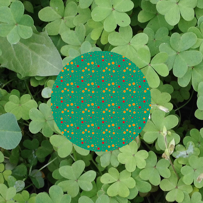
I had been surprised by similar textures before, so decided to
dig in. This texture exhibits an annoyingly obvious square
tiling. TexSyn supports such textures (see last example on March 12, 2020) but I've seen too many
like this (perpendicular, square, axis-aligned) to believe that
was the source. I suspected it was a scaled down version of the
“large” tiling used for spot patterns. I saved the thumbnail
above, which now also saves the source code in a text file:
Ignoring the details, it is a LotsOfButtons operator,
wrapped by a Mirror operator:
Mirror(Vec2(...), Vec2(...), LotsOfButtons(...))
I re-rendered the texture from that source code:
Then after I changed Mirror to normalize its line_tangent
parameter, I got:
And indeed, when I rendered just the third parameter to Mirror,
the LotsOfButtons operator itself, I get the same
thing. I think that is the desired result, but I was
wrong before:
But this is a good news / bad news situation, or perhaps a
“twofer” of old bug discovery. I suspect the “spots” (the
textured “buttons”) should all be visually similar, the same
gradient between two shades of orange. Instead, I see some
orange and some a more red color. More on that as I dig further.
And now for the first time since July 31,
2020, a post in this TexSyn devo blog about texture
synthesis! Have you ever built something incorrectly, then
repeatedly tried tweaking it, while failing to understand the
underlying problem? What...no? Hmm, right, me neither...
On a completely unrelated topic, here is a (now finally
working!) prototype of noise pattern synthesis using
sparse Gabor kernels. This is roughly based on the SIGGRAPH
paper Procedural
noise using sparse Gabor convolution (2009, Lagae, et
al.). A preprint of that appeared while I was working on
an earlier version of this library, so I make a quick
prototype. It was too slow to use as-was, so I did not use
this category of noise texture in my earlier work. Much later, I
found another SIGGRAPH paper Procedural
phasor noise (2019, Tricard/Efremov, et al.)
which improved on this approach to noise synthesis. That
technique is next on my agenda.
I wanted to start with the 2009 approach. This GaborNoisePrototype
texture operator combines two given textures based on a scalar
texture composed of many randomized Gabor kernels. The
parameters are: the number of kernels (over a 10x10 region, whereas the renderings below have a
diameter of 2), then min and max bounds for uniform
random selection of: kernel radius, kernel wavelength, kernel
rotation, and lastly the two input textures:
Yesterday I added a new feature to LazyPredator: a new optional
parameter to the constructor for GpFunction to
adjust the likelihood a given function is selected during
construction of the initial random population of GpTrees
for a run. See details here.
It seemed to me that the three “lots of spots” texture patterns
were overrepresented. Now this might have been my own fault for
favoring those as better camouflage. Or it could have been that
there are three such operators (LotsOfSpots, ColoredSpots,
and LotsOfButtons) and so, in combination, they were
chosen three times more often. So in TexSyn's GP::fs()
I changed these three operators to have ⅓ the chance of being
selected. In addition “because I could” I doubled the likelihood
of choosing SoftMatte, my favorite texture operator.
I did a quick run to “shake down” these code changes, and in
the process added some illustrations to the “doc”
for the alpha version of the evo_camo_game
app. Step ~2000 of a run using a “clover” background is shown
below:
This camouflage run was based on another unique image from
helpful folks on the Facebook group Lichens,
Mosses, Ferns and Fungi. Stephen Axford
kindly gave me permission to use this
image. He lives in Australia but travels the world to
photograph and study fungi. (See his lovely video autobiography.)
This photo however was taken at his home. It is the
lichen-covered trunk of a “Bangalow
Palm” illuminated by 365nm UV (ultraviolet) light. These
lichens (but apparently not all?) fluoresce in ultraviolet. So
the unusual colors are from the UV and the irregular shape of
the colored patches are due to the growth and competition for
space between the various lichens. For context, here is another
view from further away.
Below are views of two competitive “tournaments” each showing
three circular prey with their evolved camouflage textures. In
the first image (at step 1374, not quite half way through the
run) they were trying, without much success, to find a version
of those rainbow noise patterns that would blend in the with
background. The brightness and saturation were in the correct
range, but the distribution of hues are off (there is no green
in the background). Also the spatial frequencies do not match
well.
By the end of the run at step 3000, things had improved, but
the quality of camouflage is “only OK.” The circular features
allow coloring something like the scale of patches in the
background. But to my eyes, their geometric regularity stands
out and “breaks” the camouflage:
Here are “thumbnail” images of interesting evolved camouflage
textures during roughly the second half of this run, at steps
1205, 1724, 2033, 2260, 2414, 2551, 2882, 2896, 2979, and 2983:
The ID for this camouflage run was tree_leaf_blossom_sky_20210313_1907
but I think of them as “parking lot trees” — small trees in
concrete planter areas at the end of each row of parking places.
The photos were taken from below, so the background is deep sky
blue. Also visible are tree branches, leaves of various colors,
and small white blossoms. (Photos taken on December 26, 2017,
probably in Foster City, California.)
Keep in mind: this is a purely 2d model of
camouflage. Since these background images show a strongly 3d
scene, this causes some cognitive dissonance. It would be as if
there was a photographic paper print of the background, lying on
a desk. Paper disks, printed with synthetic texture, are placed
on top of the photo, then the user make a judgement on which is
most conspicuous. The fact that sky blue color could be
incorporated into these evolved camouflage patterns is related
to this “purely 2d” abstraction. (Sky blue is rare (to say the
least) in nature but has been used in the past for military aircraft camouflage.)
This run was composed of 3000 steps. Below
are two “tournament” images showing the whole window and three
competing camouflaged prey textures. These are at steps 2092 and
2596 of the run, shown at ⅔ of original size. I hand-selected
these steps based on all three prey being well camouflaged. And
by that I mean a combination of good quality camouflage and the
luck of being placed on a part of the background where it is
effective.
In the first image the three prey use similar camouflage: a
black background (similar to the shadowed tree limbs) with blue
spots (which mimic the sky showing through bits of the tree) and
over that a tracing of edgy green and white patterns (suggesting
leaves and blossoms):
In the second image, the upper right prey uses that same
approach, while the other two are variants of a new line of
phenotypes. These have striped patterns alternating between two
complex textures, with irregular “wiggly” edges between stripes:
Shown below are “thumbnail” images of an individual camouflaged
prey, and a bit of its surrounding background for context. These
were hand selected by similar criteria—good quality camouflage
in effective locations—but in isolation, without regard to the
other prey in the tournament. These are in order of
“evolutionary time” at step: 131, 257, 1332, 1593, 1858, 2270,
2571, 2662, 2845, and 2976:
One more “thumbnail” from the run on the fungus_pores_2
background. One of the “edgy” phenotype, not very effective as
camouflage, but interesting because it happens to exhibit
bilateral symmetry. This run was started before I made the
thumbnail-saving utility also save the source code text of
an Individual's GpTree. So I don't
know for sure, but it looks like the root of the tree, the
outermost texture operator, was Mirror (see here) with parameters that caused the
line of symmetry to pass very close to the center of this
texture.
I sometimes think of these disks of camouflaged textures as
something like a round beetle (like a “ladybug”)
crawling on a textured surface. But the coloration of beetles,
like so many other species, has bilateral symmetry. This post is
primarily to remind myself that sometime I should try a
camouflage run where bilateral symmetry is imposed on top of the
evolved texture pattern. Beyond visual interest, it would add
another “twist” to the search for effective camouflage, since
symmetry is often a clue that helps to break camouflage.
Sometimes a well-camouflaged animal is given away only by its
symmetry. (Such as in this amazing
owl photo, by the excellent nature photographer Art Wolfe. Buy his fantastic
book Vanishing
Act: The Artistry of Animal Camouflage originally
published 2005 in hardcover.)
First of all, a big thank you to Colin Brown a(n amateur?)
mycologist and photographer. I saw his photography in the
Facebook group Lichens,
Mosses, Ferns and Fungi. He posted a close-up of the pores
on the bottom of the mushroom Trametes aesculi, and a
couple of weeks later, Trametes gibbosa, both taken in
Rock Creek, West Virginia, USA. He kindly gave me permission to
use his aesculi image for my experiments and I assumed
the same would go for gibbosa. I don't know a lot
about fungus, but most mushrooms have “gills” under their caps.
Whereas these species are polypore mushrooms with small
holes/slots under the cap. In both cases, these are where the
fungus releases its powder-like reproductive spores. (I've since
learned there is an intermediate form called mazegill.)
What jumped out at me is how similar these are to the labyrinth
variety of abstract Turing
textures (Turing instabilities, reaction-diffusion
textures). I wanted to try evolving a camouflage for a critter
trying to hide on these labyrinth patterns.
While useful experiments, I felt the resulting camouflage was
not particularly successful. Both of these backgrounds have
contrasty “large scale” features, relative to the “body size”
(diameter) of the camouflaged “prey” individuals. Neither run
managed to convincingly mimic the background texture. Even if
they had, misalignment of contrasty features serves to visually
emphasize the boundary of the camouflaged “body” so making the
camouflage less effective.
This run, using the Trametes gibbosa photo, developed
two phenotypes. One had a very edgy noise pattern that often
seemed to almost align with background features along
its boundary, but its interior was not much like the background.
(See first image below, of a tournament with three individuals
of this first phenotype, at ⅔ of original size.) The other
phenotype was a network of wiggly light and dark features that somewhat
mimics the background, but not very well.
Here are “thumbnails” of three individuals of both types:
Below are three cropped tournament groups (⅔ of original screen
size) from an earlier run with the Trametes aesculi
photo. Throughout an extended run of 5000 steps it failed to
develop effective camouflage textures. At various times it would
do a good job of matching the light or dark browns of the
background, or the spatial frequencies, or the wiggly quality of
the background. But it never got all those things right at the
same time.
Not that anyone cares, but this is out of order. I will soon
post images from a run on a different background. Recent code
edits include changes to placement of textures on background for
camouflage. (This is prep for saving “thumbnail” images of
textures with clean backgrounds.) I also turned up the default
“evolution power” for camouflage by 20%. (Previously it used a
population of 100 individuals in 5 breeding subpopulations
(demes), now it is 120 individuals in 6 subpopulations. These
parameters can be overridden in the command line version.)
Otherwise the run shown below is like the previous two. I ran
it for almost 2000 steps. It seemed to develop some effective
camouflage patterns. It seemed to have a “healthy” diverse
population, which continued to invent new patterns throughout
the run.
After adding handling of “argc/argv” unix-style command line
arguments to the Camouflage class, I made another
run using that form of specification. (Previously I mostly
fiddled with parameters inside my code via my IDE and
recompiling.) The results were pretty good, entertaining even,
as shown below. For the previous week or so I was looking into
ways to distribute binaries of the tool but ran into some
roadblocks. For the time being, the only way to use it is to
build it yourself from sources. In case anyone reading this is
interested, please contact me
for details.
I used the same set of background images (“oak leaf litter
green brown”) but chose a different seed for the psuedo-random
sequence generator. I need to add a command line argument for
specifying that. This software is designed to be strongly
reproducible (even across platforms) despite being based on
randomized algorithms. The results will be identical if you make
two runs with all the same parameters (including, in this case
of interactive evolution of camouflage, making the same
interactive selections). If you want the runs to be
different, changing the random seed is required.
Near the top of my to-do list is better tools for logging these
camouflage runs, and recording images from the run. Initially I
want to have a way to say “save the whole window showing the
current tournament of three textures” and “save an image of the
indicated texture along with its nearby background.” I may also
want to add the ability to save the program (GpTree)
for a texture. So far I have just been using my laptop's screen
capture utility to collect these images. Here is a cropped image
of a tournament at around step 700:
Some examples of cryptic (well camouflaged) “prey”, from later
in the run, with a bit of the background texture on which they
were found:
A side note: as you may recall, the user's
task in this “game” is to pick out the texture which is “worst”
— the least well camouflaged. In the beginning of a
run this is difficult since almost all of the textures are bad:
they stand out against the background and are not at all
camouflaged. It can be hard to decide which of the bad textures
are the worst. Early in a run there are lots of textures which
are just a single uniform color. While selecting for non-uniform
textures, I seem to have given too much of a boost to a species
of multi-spot patterns. They were fun to look at but not very
well camouflaged:
Here is a point where the “spot” species is doing its best to
be camouflaged, but losing the race to two different
noise-pattern-based species are starting to perform better:
Since the last entry here, there was some work in LazyPredator
on tree size limits, then for the last two weeks I've been
prototyping a user interface for “interactive evolution of
camouflage”, the subject of my 2011 paper. My work
on TexSyn and LazyPredator has been aimed as restarting that
line of research with a more robust software foundation. Rebecca Allen, my
friend-since-grad-school, gave me a nudge to get back to
camouflage already. My first thought was that there was still
lots of infrastructure work to do, but then decided the time was
about right.
And indeed, except for a small tweak in LazyPredator, most of
the work has been on the GUI side. Two weeks in, I have an
“almost working” version of the 2010 concept of interactive
evolution of camouflage. It is based on an instance of
coevolution in nature. Imagine a type of predator that uses
vision to locate their prey—and prey who use camouflage to
escape detection. Effective camouflage helps prey survive to
reproduce and pass on their genes. Effective “camouflage
breaking” allows predators to eat and so survive to reproduce
and pass on their genes. These adversarial processes
coevolve, producing mutual improvement, leading to predators
with excellent visual perception, and prey with sometimes
astoundingly effective camouflage.
In this simple simulation—essentially half of the larger goal—a
human user plays the part of the predator. The evolutionary
texture synthesis software plays the part of the prey whose
camouflage is evolving. This can be thought of as a “game” where
the human player competes with the simulation. Each turn of the
game corresponds to one tournament/step in the steady-state
evolutionary computation:
A random background image is chosen to represent the
environment.
A random choice is made from a set of photographs, then a
random rectangle is selected in that photo.
In the examples below I am using six photos of oak leaf
litter, shot on the side of a road near my house last
August.
Three unique textures are selected at random from the
LazyPredator population.
The three textures are placed on the background in random,
non-overlapping positions.
The software waits for the user/player to indicate (with a
mouse click) which of the three is most conspicuous — least
well camouflaged.
This texture “loses” the tournament, and is replaced in the
population by a new offspring, a crossover whose parents are
the other two textures in the tournament.
Each time I made a code change, I would play a few rounds of
the game to make sure everything was still working as expected.
This time I got to step 70 and the texture in the upper left
caught my eye:
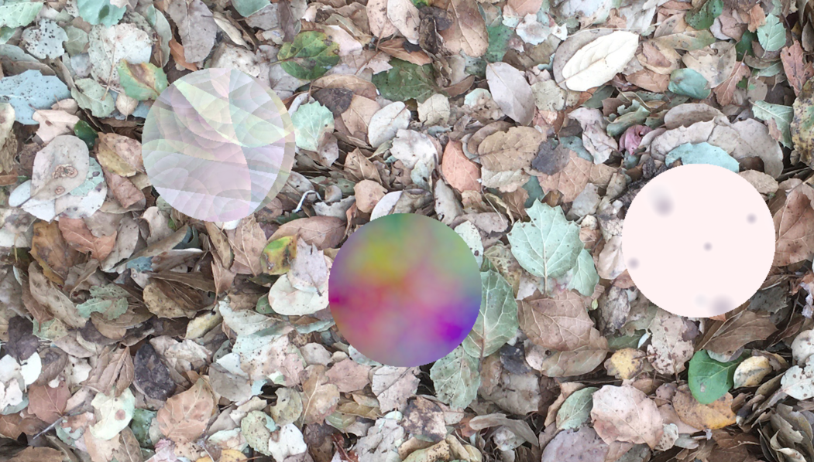
Hmm, that is not bad. The range of colors in that texture were
pretty similar to the background image. The spatial frequencies
in that texture were pretty similar to the background image. In
fact one could say that texture is pretty well camouflaged
against these backgrounds.
In the previous steps of the evolutionary selection process,
textures that were “obviously wrong” were being weeded out of
the population. For example, textures with the wrong colors
(like the multi-colored middle texture above) or had spatial
frequencies that were too high or too low (like the flat beige
texture with gray spots on the right), were removed and replaced
with new offspring. In one surprising step, GP crossover created
a new texture that had both good distributions
of colors and frequency pattern. Dang!
To be clear, I think this is “pretty good” rather than
“excellent” camouflage. The brightness is a bit too high and/or
the contrast range is not wide enough. The evolved texture lacks
details as dark as some of the shadows in the background
photograph. The ability to mechanistically determine the quality
of camouflage is “future work” in this study.
I continued to “evolve” this run for another 200 steps or so.
In this tournament we see a nicely cryptic texture (lower left)
and two under-performers. The middle texture seems to be a
uniform color with “buttons” of a green/beige texture. Something
similar seems to be a component of the camouflage texture in the
lower left.
Later in the run, the well camouflaged textures are enjoying
“reproductive success.” Their good genes are spreading through
the population. Below is a turn of the game where all three
textures in a tournament are variations on the same successful
cryptic texture. If you look closely at the upper left texture,
you can see an important property of effective camouflage, some
of its boundary/silhouette seems to “dissolve” away. Instead of
a hard-edged circle, parts now look nibbled away:
Just for a little context, the images above are cropped out of
the full GUI. This shows (at a smaller scale) the whole window,
full screen on my laptop, relative to three textures:
I continue to use the “LimitHue” fitness function
for testing recent changes to LazyPredator (see posts in its
blog from December
23 through January
5). A few of them are visually interesting, especially as
better optimization leads to higher fitness. To recap: LimitHue
prefers textures which contain primarily four distinct hues
(using a discrete 12 step hue space), wanting those hues to be
“non adjacent” (meaning hues 1, 2, 3, 4 are not as good as hues
1, 3, 5, 7), and close to zero hues in the other 8 “buckets.” In
addition, there are fitness penalties for very bright or very
dark colors, insufficiently saturated colors, and textures with
too much high frequency (“confetti”) noise.
Here are two results from a test of subpopulations (“demes”) in
a LimitHue::comparison() run called LimitHue_comparison_20210105.
On the left, with a fitness of 0.956924 and on the right with
fitness of 0.904232, both from the condition using four
subpopulations (versus the control condition of a single
population):
And these two results from LimitHue_comparison_20210103
run. On the left, with fitness 0.932506 (from the single
population condition). It captures the “mostly flat regions of
constant vivid color” I was picturing when I designed LimitHue.
On the right, with fitness 0.94534 (from the four subpopulation
condition) which seems to be near the lower bound on acceptable
saturation level:
During the HueLimit runs described below on November 18, a nagging problem was that
the virtual memory partition of TexSyn grew at a significant
rate, indicating a “memory leak.” My laptop could run for 12-18
hours before exhausting its memory partition at about 50 GB. I
did know that I had prototyped GpTree::eval() to
construct Texture objects on the heap and realized
they were not being freed/deleted when the Individual
containing them was deleted. The Texture objects
themselves are pretty small, but I assumed the OpenCV cv::Mat
(in which Textures store their rendered pixels for display and
file output) were not getting deleted, causing the leak.
Turns out that was not the problem, it was
actually a memory leak in OpenCV itself, for each window it
opens on macOS. (See my OpenCV bug
report.) But I didn't track that down until I
put in the GpTree::deleteCachedValues() to free
those Texture instances created during eval().
But to do that I had to track down a very confusing
bug which happened to be introduced by a typo in GP.h
where the specification for the GpFunction for CotsMap
indicated an extra parameter of type Texture. This
caused the GpTree to have a “phantom limb” which produced
symptoms taking me a long time to understand.
Having diagnosed the memory leak, the fix was simply to avoid
opening so many windows. The many windows came from my
goofy-prototype-hack of a user interface which opened and closed
thousands of windows. I needed to do the obvious and normal
thing: to have a single window, and update it as required. I
also wanted to be able to put text labels on that GUI (graphical
user interface) control panel. So I started digging into
OpenCV's support for drawing text on images. That led to finding
another bug,
which led me to reconsider a decision I'd made almost a year ago
about storing Textures in cv::Mats of type CV_32FC3.
That is, my image data represents the color of each pixel as
three 32 bit floating point numbers (representing red, green,
and blue) for a total of 96 bits per pixel.
Its is much more common to use 24
bits per pixel with an 8 bit byte to represent red, green, and
blue (aka CV_8UC3). I have made the change and can
see no difference, since my screen used 24 bits per pixel color
space. At the moment I don't know how to verify there has been
no change. I was going to post some images here, but as far as I
can tell, they are identical so there is nothing to see.
Preparing some “work in progress” slides
for a presentation at Dan Shapiro's UCSC class, I made an
extended series of runs of the HueLimit evolution
test. I was a bit disappointed with previous runs using
“multi-objective fitness functions” — related to Pareto
optimality. I had been time-multiplexing the various
fitness components, for example to optimize for both A and B, I
would randomly choose between optimizing either A or B on each
evolution step. The results seemed a little “weak” — the
population improved according to both A and B, but were not
exceptionally good at either.
So I backed up to some previous work in this area (Goal Oriented Texture
Synthesis, 2011-2013) and followed the approach used
there. The multiple fitness measures are mapped onto the range
[0, 1] and then multiplied together for a final numerical
fitness. This is “absolute fitness” that can be measured for a
single individual in isolation. (As opposed to “relative
fitness” measured in competitive tournaments.) The fitness
components can be “weighted” by limiting the portion of range
they occupy. For example a component on the entire [0, 1] range
is “strong” while one remapped to [0.9, 1] has only a mild
strength.
The HueLimit fitness function was primarily based
on limiting hue distribution. Each TexSyn texture was randomly
sampled, and each sample was assigned to one of twelve “buckets”
in a hue histogram. A perfect fitness was to have exactly four
of the twelve hue buckets with ¼ of the samples each, with the
other eight buckets empty. Deviation from this pattern reduced
the fitness. In addition two other minor fitness components
required the texture have average saturation values above 0.5,
and for the average brightness to be in the middle 80% of the
brightness range (basically, neither black nor white). The
result, then is a “random texture” which meets certain
constraints defined by the fitness function. I made about 50
runs like this, saving a render of the best individual at the
end of each run. Then I hand selected the textures that seemed
most visually interesting to me. Each HueLimit run
has a population of 100 individuals, with max initial size of
100, and 1000 evolution steps (10 “generation equivalents”).
These each took about 15 minutes to run on my laptop.
Back around April 3 when I started
working on the LotsOfSpots family of texture operators
(with ColoredSpots and LotsOfButtons, all
now derived from LotsOfSpotsBase) it was hard to
know how they would actually get used in evolutionary
optimization. A texture render time that is “ok” in ones and
twos starts to become uncomfortable in the thousands. On September 27 I used a big hammer to
prevent unreasonable runtime while rendering textures with
nested Blur operations. Recently I have found that the
embarrassingly long pauses during evolution test runs are caused
by the constructor for LotsOfSpotsBase which
builds the random pattern of “spots” then runs a relaxation
process to reduce any overlap between these randomly places
spots. The basic problem is an O(n²) algorithm, and a
possibility that n can get fairly large, depending on
the interactions of several other parameters. There were 11,000
“spots” in one case that ran so long I paused the run to poke
around with my debugger. (It is not literally an O(n²)
algorithm, but not worth getting into here.)
I decided that I ought to put a hard ceiling on the number of
spots in these textures. It is in a global variable, so can be
changed, or set to “infinity” if needed, but by default I have
decide there will be no more than 5000 spots. Similarly I put
the parameter controlling the max number of relaxation steps in
a global variable. Its value remains 200. To work on this I
defined a test case whose parameters produce a large number of
spots:
spots = LotsOfSpots(0.95, // density
0.02, // min radius
0.05, // max radius
0.01, // soft edge width
0.01, // margin
Uniform(1, 1, 0), // spot color
Uniform(0, 0, 0.8)) // background color
The high density combined with the small radii lead to a
texture with 21694 spots, which it tries up to 200 times to
“relax” any overlaps. On my laptop that ran for about 6.7
seconds. For reference here is that spots texture,
and it “zoomed out” with Scale(0.2, spots) to see
the whole of the tiling texture. (Normally the tile is five
times larger than the default render range of [-1, +1], so the
second image show the full tiling range of [-5, +5]:
which is the new way of getting the old behavior. The two
corresponding images below are the exact same texture
specification, but with the new default max_spots_allowed
of 5000:
While the original version with 21694 spots took 6.7 seconds,
this version with 5000 spots took 0.36 seconds. Still kind of
slow, but I am willing to live with it for now. Note that the
overlap minimization process runs multi-threaded, so typically
runs up to eight threads on my laptop.
Unfortunately, in the process of working on
this change, I observed an annoying artifact, which I assume is
a bug. The texture below is like the second one above (in the
older no-limit case) but with a smaller scale: 0.09 versus 0.2.
In this case, the boundaries of the tiling patter become
visible. (In this view, one full tile is in the center with
eight partial tiles around it. The artifact forms a subtle “#”
pattern.) The LotsOfSpotsBase class goes to
considerable effort to form a pattern which tiles seamlessly.
Given I have rendered many zoomed-out spots textures before
without obvious artifacts (e.g. on April 19)
I suspect this may have to do either with the relatively small
size of these spots, or the margin (spacing
between spots) parameter which was added late in the development
of the “spots family” of operators. I've put this issue on the
bug list.
While experimenting with evolution and the structure of
tournament selection in LazyPredator, I ran into a TexSyn bug.
In one run, after about 5000 steps I hit an assert
failure in Color::convertRGBtoHSV(). The problem
was an inf as one of the input RGB components.
This was coming from the output of a Gamma texture
operator, which had raised ~200,000 to the ~8.5 power which is
outside the float range. (I suppose if I had been
using 64 bit floats (“double”) this case would have
been ok.) But in general, TexSyn allows RGB color components to
range over the entire float range, so Gamma
would eventually hit a large enough input value and exponent to
cause this kind of range overflow. I fixed the bug by adding a
special case in function Color::gamma() — if the
input is finite (std::finite()) but the result of
exponentiation is not finite, then it returns
white.
To recap why Colors are allowed to have
“infinite” range: the idea is to allow composition of texture
operators without regard to order. I want it to work, for
example, to add two textures in the range [0, 1] — the “unit
positive RGB color cube” — producing a texture whose colors
range on [0, 2], then scale the brightness
back into [0, 1]:
The expression above computes the average of those two noise
patterns. Similarly, the subtraction below produces RGB values
ranging on [-1, 1], adding white offsets it to [0, 2], which is
then scaled to [0, 1]:
If color values were clipped to the unit interval after each
operator it would cause texture synthesis to require certain
operator ordering. (E.G. scaling before adding to keep the
result in range.) My goal is to remove that constraint and so
allow evolution to more easily optimize the textures.
As mentioned on October 3, treating
all nodes of a GpTree as candidates for crossover
implies that “many” crossover operations serve only to move a
leaf node from one tree to another. (For binary trees, about
half the nodes are leaves.) There is something minimal and
elegant to this approach. But I wonder if it is the best choice,
especially for the TexSyn FunctionSet where those
numeric leaf values are just the “knobs” on various texture
operators. In broad terms, about half the crossovers would
actually change the tree of texture operators, while the other
half would make changes to their parameters.
Relevant to this is that next on the “to do” list is
jitter/jiggle mutations of constant leaf
values. I intend to jiggle constant values after crossover, so
“wasting” half the crossover operations on merely changing a
single constant in the tree (of size 100-200 nodes) seems a poor
choice.
I wanted to experiment with concentrating crossover operations
on “structure changing” operations rather than “parameter
changing”—so that a typical crossover would actually replace one
subtree (of nested texture operators) with another one. In the
current version, each node (including leaves) have uniform
probability of being selected for participating in crossover. I
considered weighting the probability of choosing a node to be
proportional the the size of the tree below it. But this seems
to give far too much weight to the root node and its immediate
subnodes. I also considered just limiting crossover to subtrees
that return a value of type Texture (as opposed to
Vec2 or float). But that seemed too ad
hoc.
The experiments below add a new parameter to crossover, the
minimum size of a subtree (from the “donor” parent) that can be
considered (for insertion into a copy of the “recipient”
parent). By default, in the minimalist neutral strategy, that
value is 1, meaning an individual numeric leaf node can be
crossed over. If min_size is 2 (or more) it means
that leaf nodes (or other small subtrees) are excluded as
crossover candidates. While as before,
many many of the textures are obviously “variations on a theme”
of the two parent texures, using a larger min_size
clearly produced a wider variety of changes. I am leaning toward
making “min size for crossover” a parameter of FunctionSet,
defaulting to the neutral value of 1, but probably set to 2 for
TexSyn. (Note: the eight examples below were hand-selected from
a run of 50 crossovers, based on the same parents in the October 3 experiments, with a min_size
of 5.)
LazyPredator's FunctionSet::crossover() operator
for strongly typed genetic programming appears to be
working. After a few simple abstract tests, I tried this test
with the TexSyn FunctionSet. I created two random
“parent” GpTrees, then made 30 “offspring” GpTrees,
which combine elements of both parents. Here are eight of those
variations, each of which is close to one parent (stripes) or
the other (mostly uniform).
The difference tend to be fairly subtle. I assume that “most”
of the nodes in the parent trees of size 100 are numeric values
at the leaves. As a result, many of the offspring differ from
their parent by just one number being replaced by another. I think
that is correct but may experiment with biasing the crossover
points to be higher up the trees.
The most “heavyweight” Texture operators are those based on
convolution: Blur, EdgeDetect, and EdgeEnhance.
(Only Blur actually does a convolution, EdgeDetect
and EdgeEnhance are derived from Blur by
“unsharp masking.”) For all other Texture operators, each output
pixel getColor() requires one, two, or some small
number of input getColor() lookups in textures
further down the tree. For each pixel of a Blur, a
large number of lookups are needed to sample the input texture
under the support of the convolution kernel. That value had been
set to 11x11 or 121 samples per output pixel getColor()
lookup.
In normal image processing, blurring an image can be done
quickly, especially when using a GPU. The whole image can be
blurred at once, in place in a memory array. With a Gaussian
kernel, that can be separated into two sequential
one-dimensional passes. None of these speedups apply to TexSyn
where textures have “infinite” extent and are routinely
addressed via non-linear warps. A TexSyn textures has no way to
determine the spacing between adjacent pixel samples—and cannot
know a priori the bounds of its “infinite” extent that
will be sampled—so cannot build memory arrays that cache the
pixel colors. (I write “infinite” in quotes because these
textures are actually defined over the cross product of two c++
floats, which is not equivalent to ℝ² the cross
product of two reals.)
Nonetheless the current design allows warping the result of
applying Blur to a warped texture, at the cost of
taking about 100 times longer than other operators. But until I
started generating random TexSyn trees with Blur, EdgeDetect,
and EdgeEnhance, I was chagrined that I had not
considered the cost of composing multiple
convolution operators by nesting. Now we run into some subtrees
— such as Blur(EdgeEnhance(...)) — that are 10,000
slower than normal operators!
One possibility is deciding we didn't really want blur and edge
operations in TexSyn, and I guess that could still happen. But
first I want to see what I can do to chip away at the cost. One
approach is to disallow the deadly nested convolutions. This
could be done as a constraint on GpTree
construction. But that would add a lot of complexity for this
one edge case. Another way is to say that a nested convolution
operator turns into the identity operator. This is appealing
because it only touches the relevant TexSyn operators, and in
fact merely Blur. So I implemented that.
Another approach is to use Blur's stochastic sampling
to trade off image quality for speed. All it takes is reducing
the number of subsamples to run faster, while causing more noise
in the blurred image. That global parameter is called
Blur::sqrt_of_subsample_count and had been set to 11
(121 subsamples). I have now decreased it to 7 (49 subsamples).
So it now runs in about 40% (49/121) of the time it did
previously. Below are the input Grating texture, and a
comparison of Blur at 11x11 (as before, on the top
half) and 7x7 (as now, on the bottom half):
Now here is a similar texture, wrapped into a spiral by the
COTS patch operator. Note how the zone of transition between the
two colors grows with the spiral as do the width of the stripes.
(this is the same grating texture as above, scaled
up by 10, with the filter width also scaled by 10 to match)
These three textures show the result with Blur::sqrt_of_subsample_count
set to 40, 11, and 7
(corresponding to 1600, 121,
and 49 subsamples per output pixel). 40 is
ridiculously high and slow-running, but shows what the Blur
looks like with essentially no sampling noise. The middle value
of 11 is what was previously used, and 7 is the new default
value. The resulting stipple pattern looks a bit like colored
pencil on textured drawing paper.
I completed building a LazyPredator FunctionSet
for TexSyn's API. Or what I have come to regard as the “modern
subset” of TexSyn's API. For example TexSyn still defines Scale,
Rotate, and Translate, but I consider them
deprecated, replaced by Affine. I will post an updated
list soon, but of the 52(?) Texture operators in TexSyn, I
defined 43(?) in the GP FunctionSet. This is all
subject to change. I also defined some “helper functions” in the
new GP.h file to reduce the repetition of boiler
place, especially in the eval() lambda specified
for each GpFunction.
Shown below are some of the random textures produced with this
full FunctionSet, all made with a max size of 100.
As I was testing I would save off examples that I thought were a
bit interesting. Here a six pointed star motif, with confetti,
all in pastel colors.
Adding existing TexSyn texture operators one by one to the
LazyPredator FunctionSet. When it contained only Uniform,
Spot, Gradation, Grating, and SoftMatte,
I generated trees with a max size of 100. Here is a small (size
28) tree which combines a Grating over a Gradation.
Also a more complex Texture tree (size 96) producing what looks
a bit like a shaded fuzzy green ball over a multicolored
background.
Runtime connection between LazyPredator and TexSyn
In the August 15 entry I prototyped
this connection using a prototype FunctionSet:makeRandomTree()
to print out the “source code” of generated trees, then hand
editing that into a test jig in TexSyn and rendering the
textures. Now it is actually working, directly evaluating the GpTree
and then passing that result to TexSyn's render utility. See
some code details in the LazyPredator
log. These were made with a FunctionSet for
a portion of TexSyn with GpTypes for Texture
pointers, Vec2 values, and Float_01
values. It provides two GpFunctions of Texture
operators: Uniform and Spot. Here are a
couple of examples. Note that these are “random”
trees(/expressions/programs) with no evolutionary optimization
yet. The next step is to define GpFunctions for
all ~50 Texture operators.
As described in LazyPredator's
log, it now has a prototype random program generator.
There is also now a prototype “function set”/“grammar” to
describe the TexSyn API. I used these to generate a bunch of
random texture expressions, rendered some of those, and pick out
a few that were a bit interesting. (Many appeared identical to Uniform
or ColorNoise.)
As described long ago (December 19, 2019)
TexSyn exists to be used with a system for Genetic
Programming. Starting yesterday I have been made the first
steps toward that, a library called LazyPedator.
Its code repository is on GitHub
and it has its own development
diary like this one.
More boring: Noise and Affine get TwoPointTransform
Refactoring Noise to use the new TwoPointTransform
class, completely analogous to Grating and Gradationyesterday. Because Noise is
the base class for all other Perlin noise related operators,
they all inherit the same change. As before, showing the visual
different between old and new—average error was 1.606e-07—and
the binary version showing were mismatches occur.
Making the fix for Affine had one surprise. I found
that it had not previously handled the case for a degenerate
“scale=0” transform. This occurs when the two point specifying
the transform are identical. In the old version, each color of
the texture contained nan RGB values. Now in
that case Affine uses an identity transform. The
average error per pixel in this case was 5.53341e-09.
Boring software engineering: use TwoPointTransform
The “two point” specification for a general affine transform
was used in early members of this library, see Gradation
and Grating on January 1.
This is the same idea used in “two finger” pinch-twist-drag
gestures in touch screen devices. On May 31
I refactored several noise textures to more uniformly use
two-point transformations, and on July 8,
the generic Affine operator. As a result the code for “two point”
specification is duplicated around the operators. This really
bothered the software engineer in me. So I wrote a new general
purpose TwoPointTransform utility class to
encapsulate this code. Now I have begun changing texture
operators to use it.
Grating was first to be updated. Annoyingly the
modified Grating2 is ever-so-slightly
different from the original version. I assume that the order of
floating point operations leads to tiny rounding differences.
Here is the old (on left) new (center) and AbsDiff of
the two (on right). The black AbsDiff image indicates
they are visually identical, but about half of the pixels do not
have identical floating point gray values. The average error per
pixel is 1.55727e-07. That is, where black is 0 and white is 1,
the average error is 0.00000155727. That bothers my OCD, but I
guess it is less annoying than the original code duplication.
I added a new fifth optional parameter to Texture::diff(),
a bool called binary which defaults
to false. When true, the third
texture in a diff is made with a new NotEqual texture
operator which returns white where the two textures do not match
and black where they do. This allows seeing where those tiny
invisible numerical errors are:
Then I went on to the corresponding change to Gradation.
Again the result is very slightly different—4.16738e-08—less
than a millionth. Most display hardware only portrays 256 gray
levels. As before one diff() showing the visual difference, and
one showing white where the tiny differences occur.
How many texture operators are enough? Probably less than are
currently in the library.
On July 13 I mentioned giving a short
presentation on this “work in progress” library to a class at UC
Santa Cruz. Afterward, one of the class full of bright students
asked a great question. I don't remember the exact words, but it
had to do with the large number of texture operators in TexSyn
(currently about 52). Why so many? How many are actually
required? Are any missing that could be considered necessary? If
there are more than required, how could we know that? Aside from
agreeing that it was a good question, all I could answer was
that once the Genetic Programming component is in place, I hope
to do experiments on this issue. For example, using some subset
of the operators, are results significantly different from using
the entire set?
Still it is fun to invent new operators, experiment with them,
and consider the visual results they produce. Which is to say, I
tried another prototype. While mildly interesting, it does not
seem useful enough to keep in the library. Said a different way,
I think visually similar results can be obtained from
compositions of existing operators. Below are some results from
the failed prototype HsvFrom3 operator. It takes three
textures as parameters, the resulting color at any point is
defined in HSV space by taking the hue from its first texture
parameter, the saturation from another texture, and the value
from a third texture. In the first texture example below, the
hue of the result comes from a red and green Grating,
the saturation from a blue and white Wrapulence
texture (seen as curved edges of red/green shading to gray), and
its value (luminance) from a black and white Turbulence
(seen as dark “valleys” wandering across the texture). The idea
for HsvFrom3 came up when thinking about problems with
HsvBox. In the end, neither are included in TexSyn.
HueOnly had been on my to-do list for a while. I
wondered if I wanted to have similar operators for the other two
HSV components. I thought about how nicely RgbBox
seemed to work, and wondered about an HSV version of it. I built
a prototype, decided I was not happy with it. On July 20 I went back to updating HueOnly.
Here are some textures from the failed prototype HsvBox
which I will remove from TexSyn.
First of all HsvBox is not even a good name. RgbBox
referred to an axis-aligned “sub-box” inside the unit positive
RGB color cube. RGB space is Cartesian while HSV space uses
cylindrical coordinates. Hue is an angular parameter. So a range
of hues is a circular (cylindrical, actually) “sector.” Mapping
the entire circle onto this sector implies that resulting hues
will have discontinuities. In the second example below, the hue
range from red to green was selected. But transforming reds
adjacent to greens creates an infinitely sharp transition from
green→red. (See this discontinuity in the second example below.)
I worked around that by “folding” the hue range. In the third
example below, the output hue ranges from red→green→red. This
removes the hue discontinuity but causes other artifacts. For
example, because of the hue fold, HsvBox has no
parameters that produce an identity transform. In the end, this
just seemed too arbitrary and capacious.
cn = ColorNoise(Vec2(3, 7), Vec2(3.10, 6.9), 0)
Here the full hue range [0, 1] is mapped onto [0, ⅓]. Texture
on left shows hue discontinuity between green and red. Texture
on right has no discontinuity due to hue folding
(red→green→red).
HsvBox(0, 0.33, 0, 1, 0, 1, cn)
HsvBox(0, 0.33, 0, 0.33, 0, 1, cn) // Both H and S map to lower third of range, V is full range.
HsvBox(0, 0.33, 0, 0.33, 0, 0.33, cn) // All three HSV components map to lower third of range.
For each point in the input texture, HueOnly keeps
only the hue information from its input texture. It replaces the
other two HSV components, saturation and value, with constant
values given as parameters to HueOnly. There was an
operator called HueOnly in the previous version of
this library (see March
23, 2009). This one provides more parametric control, and
avoids the older one's bug for gray scale input textures. (It
considered those to be red, corresponding to hue value zero,
leading to a replacement operator called HueIfAny (see
February
26, 2010).) Below is shown a color noise texture cn
used as an example input, followed by four variations of the saturation
and value parameters.
cn = ColorNoise(Vec2(3, 7), Vec2(3.10, 6.9), 0)
HueOnly(1.0, 1.0, cn) // Full saturation, full brightness.
HueOnly(1.0, 0.5, cn) // Full saturation, half brightness.
This “lab notebook” has always been public, and I've posted a
few images from here on facebook. But today TexSyn went a little
more “wide” when I gave a short presentation (slides here)
about this work-in-progress library to a Game AI class taught by
my friend Dan Shapiro at University of California Santa Cruz.
Mostly it was just images from this doc to provide a quick
overview. I did make a few “worked examples” at the top to
demonstrate the correspondence between code and graphics.
Images like these color mixing diagrams were also included
in the doc about the previous version of the library. They were
originally intended as an experiment to determine if the library
needed explicit support for both additive and subtractive color
mixing. Adding the three spots is straightforward. (This
corresponds to, say, projecting three primary-colored spots onto
a white wall in a dark room.) The subtractive version is made by
inverting the luminance of the three spots—by subtracting them
from white—so a red spot on black becomes a cyan spot on white.
Multiplying those together produces this diagram of subtractive
color mixing. (Which corresponds to, say, a color printer
overlaying three spots of secondary-colored tint on white paper.
In practice a black ink is overprinted for strong neutral
blacks.)
On July 6 I described a prototype Hyperbolic
texture operator which maps (warps) an entire texture plane onto
a finite disk. Hyperbolic was inspired by the Poincaré
disk model of the hyperbolic plane (see also)
but now I think I described too direct a link. The general
character of the remapping is large texture scale in the center,
becoming asymptotically tiny as it approaches the circle's edge.
However Poincaré's disk is a special case of this general idea
of mapping-plane-to-disk with special properties related to
hyperbolic geometry.
After several days of conversations with smarter friends on
email and social media (thanks especially to Saty Raghavachary,
Alyn Rockwood, David Weilmuenster, and Douglas Dunham) I slowly
came to understand these issues. The formula I originally
proposed was not identical to Poincaré's disk, but they both
fall into a “family” of transforms with two real parameters (a
and b) which all map a plane onto a disk. The inverse
transform takes a point d on the destination texture
plane to a point s on the source texture plane. If d
is inside the unit disk (‖d‖ < 1) then:
My original transform had a=b=1. As Douglas
Dunham helpfully derived (via the Gans model of hyperbolic
geometry) the Poincaré disk model has a=1/2 and b=2.
As I experimented with various value of a and b
I decided they were all graphically interesting. So I rewrote my
TexSyn operator to accept values for a and b
via parameters called scale and exponent.
This follows the TexSyn philosophy of “let evolution decide”
where the evolutionary GP optimization process has the ability
to manipulate all relevant parameters. The revised parameter
list for Hyperbolic is now: center and radius
(to translate and scale the unit disk into texture space), scale
(the magnification at the center, which falls off toward the
disk edge) and exponent (controls the rate of
compression approaching the edge), texture_to_warp
(the “source” texture), and background_texture (to
supply pixels outside the disk). The examples below show various
values of scale and exponent.
While parameters to control position, rotation, and scale are
part of many of the texture operators, I decided to add one to
do only that. I named it Affine, the formal name for
this class of transformation. Originally I had a to-do note to
add “center” arguments to operators Scale and Rotate
(see February 23). Then I decided to
combine them, and use the “two point” specification which has
become my standard API for affine transformations. Included
below is a semi-exhaustive test suite for the operator. Recall
the first point gives the new position of the origin (of the
input texture plane) and the second point is the new position of
Vec(1,0), their difference is the x-basis of the
transformed space. This first example shows the identity
transform for (0, 0) and (1, 0):
Vec2 o(0, 0); // origin
Vec2 mh = Vec2(1, 1) * -0.5; // point in the lower left
Vec2 x1(1, 0); // unit vector in +x direction
Vec2 x2 = x1 * 2;
Vec2 xh = x1 * 0.5;
Vec2 d1 = Vec2(1, 1).normalize(); // unit vector in (1,1) direction
Vec2 d2 = d1 * 2;
Vec2 dh = d1 * 0.5;
Affine(o, o + x1, test)
Like above, but with center of input texture translated to mh
in the lower left:
Affine(mh, mh + x1, test)
Like above, but with scale 0.5:
Affine(mh, mh + xh, test)
Like above, but with scale 2:
Affine(mh, mh + x2, test)
Like the previous three, but with 45° rotation
counterclockwise, because +x basis vectors d1, dh,
d2 each point in the (1, 1) direction:
Mathematicians will say “Poincaré disk model of the hyperbolic
plane” while normal people might say “oh, yeah, like Escher's Circle
Limit series of woodcuts.” For background, see these images,
this description
of the connection via H. S. M. Coxeter, and the work of Douglas
Dunham.
While I was fixing StretchSpot (July
2) the “fisheye” transform reminded me of Escher's
woodcuts. There is some similarity in the center of the “bulge”
— but StretchSpot is a local warp that leaves the
input texture unchanged outside the given radius — while Hyperbolic
maps the entire input texture into the given
disk. (Informally, that is why the disk is so “squished” and
crowded at the outside: most of the infinite input plane is
mapped very near the edge of the disk.) As a result, the Hyperbolic
operator requires a second texture parameter to supply which
that lie outside the Poincaré disk. Hyperbolic's
parameters are the center of the resulting disk,
its radius, the texture_to_warp into
the disk, and a background_texture for outside the
disk.
Note that this Hyperbolic transform is perhaps the
“worst case scenario” for producing aliasing artifacts from
point sampling, as used in TexSyn. These textures are smoothed
by additional subsampling, setting Texture::sqrt_of_aa_subsample_count
to 20, so using 400 (20x20) point samples per pixel. As with
other non-linear warps in TexSyn, my assumption is that
evolutionary optimization will generally select against
“confetti” artifacts, so to essentially ignore the issue..
StretchSpot(“This time for
sure!” — Bullwinkle J. Moose)
As mentioned before, TexSyn is the second incarnation of an an
earlier library. Both include a StretchSpot operator
which does a nonlinear radial stretch inside a given circle. The
recent one is described on January 16, 2020,
the older one on March
15, 2009. Both of these were fraught with problems, as
hinted at on January 19, 2020, and in
the previous library on December
26, 2008 and the following January
1 and 4.
The previous solutions seemed ad hoc (even for this
library), awkward (that different cases were required for
expansion and contraction), inelegant (an inverse transform was
implemented with a lookup table, based on piecewise linear
interpolation), and just plain buggy (there are visible
artifacts in the textures shown on January
16).
Yesterday I decided to start from scratch. I think I now have a
simple, elegant(ish), closed form solution, with only one case
parameterized by scale. The “lines of code” metric is
notoriously unreliable, but in this case, the definition of
class StretchSpot has shrunk from 81 to 24 lines of
c++ code.
The new texture operator absolutely does not match the old one.
The whole reason for this exercise is that I felt the old one
was wrong in principle, and badly implemented. In the textures
pairs below, the old one (2009 version, as tweaked last January)
is on the left and the newest one is on the right. The scale
factors for each pair are 5.0, 2.0, 1.5, 0.67, 0.5, and 0.2. The
input texture plaid is as defined most recently on
May 26.
[Update July 3] I was a little concerned about
the shape of some of those stripes in the previous version of
that last image (now replaced). I tried it again using ColoredSpots
to overlay finer grain details on plaid. The basic
geometry of the StretchSpot seemed correct, but I was
not happy with the “taper” of the radial scale transition. I
felt like there was too much area at the center at nearly the
lowest scale factor (0.2) and and an abrupt transition outside
of that where the spots are stretched into long spoke-like
ellipses. So I rewrote that one-liner in the code, here is
before and after:
The code transforms the general case to a unit radius disk at
the origin. Each point is remapped according to its radius. A
non-linearity is applied to this radius to produce a scale
factor, which is clipped to one. Before there was a sinusoid
transition from center_magnification (the first
argument to StretchSpot) to 1. This sinusoid worked
well to blend the exterior scale factor of 1 (at the outside of
the texture in these examples) into the stretched interior, but
it was “too smooth” at the center. The new transition blends
that sinusoid with a linear ramp, using a highly exponentiated
mapping (like a gamma), so that the curve is mostly linear,
except just before the “1 end” where it smooths into the
constant 1 value outside: interpolate(pow(r, 5), r,
sinusoid(r)). After this change I re-rendered the right
side images above to use this revised “scale taper.”
As noted on January
4, 2009, the bugs and “near misses” for this operator
produce interesting results. This was an early test:
Yesterday I ran TexSyn's unit tests for the first time in
several months. All but one passed. I disabled the failing test
(operators_minimal_test) but will return to it
soon. I suspect it may be a gamma related issue.
One lingering problem with the tests was that one of them (noise_ranges)
was quite slow because it ran a million tests on each of the six
noise generator utilities. Yes, that seems like a lot, and my
plan today was that “now that noise output range is all fixed”
(see May 21, 22,
and 23) I could just reduce that to
something robust but not ridiculous. When I did, the unit test
started failing.
Because the unit test is randomly sampling a random pattern,
the bounds of the output range tend to grow as more and more
samples are collected. That was how I originally got to such a
ridiculous number of samples. Today I decided I would rather
clip off those “one in a million” (litteraly) extreme values. I
found that each of the fractal noise generators (brownian,
turbulence, furbulence, and wrapulence) already had clipping
remappers on their output, so it was just a matter of tweaking
the “trim pots” for the output level. This effectively
“tightened” the bounds of raw noise that get mapped to the
nominal output range [0, 1].
The upshot is that now the unit tests run very fast, and the
fractal noise textures have slightly more contrast. This is the
sort of not-backward-compatibility I have tried to avoid, but I
think this is such a subtle change I am willing to live with it.
Here are two textures from recent posts in this document (see June 20 and June 3)
before this change on the left, after this change on the right:
Several texture operators have two Vec2 point
parameters to define a local 2d coordinate space (scale,
rotation, translation). Originally Gradation and Grating
used this approach. Then (starting May 31)
the noise textures were changed to use this same “two point”
approach.
However, if the two points happen to be identical, the space
will have zero scale and an undefined orientation. Generally
this would lead to an arbitrary result, often a blend fraction
of zero, so passing through the first texture parameter and
ignoring the other. In the cases of Gradation and Grating
I originally decided to define the result as an blend of the two
inputs (a uniform blend fraction of 0.5). Today I cleaned up the
handling of this in Gradation and Grating,
then changed the base Noise operator to follow the
same convention for all noise textures. In each pair below, the
first texture has a space defined by two identical points (p0),
and the second texture has a space defined by two distinct
points (p1 and p2).
After rewriting and testing the underlying code from Jarek
Rossignac, these are example textures made with the new CotsMap
operator. Its parameters are four Vec2s and an input Texture.
The Vec2s are the four control points: positions to
where the corners of the input unit square will be deformed. For
example, this COTS map provides a sharp non-linear contraction
in the lower left with a slight radial curvature:
Here are several variations on two nested CotsMap
operators. Generally COTS transforms impart log spiral curvature
along the two orthogonal axes of the input texture. Nesting them
allows more complex kinds of curvature.
Shortly after adding MobiusTransform on January 28, I saw a listing of papers in
the next issue of ACM Transactions on Graphics.
One paper seemed related to the Möbius transformation: Corner-operated
Tran-similar (COTS) Maps, Patterns, and Lattices by Jarek Rossignac.
He patiently answered my questions and told me sample code was
forthcoming (now here, in
the form of an interactive demo).
Jarek begins his paper saying “The planar COTS map proposed
here takes the unit square to a region R bounded by four
log-spiral edges. It is Corner-operated (controlled by the four
corners of R) and Tran-similar (it maps translations to
similarities)...” But as it turns out, more generally, these
COTS transformations define a mapping from the real plane ℝ²
onto itself. This is exactly the property needed by a TexSyn
“warping” operator. COTS maps are described as 2d “curvilinear
rectangles” bounded by four log-spiral edges which can be
specified, and directly manipulated, using four control points
at the “corners.” COTS maps have several other useful
properties, which are described in Jarek's paper and interactive
demo. This is Figure 1 of the paper, “Examples of the 4DoF
distortion-space of the COTS map”:
The demo code was written in the Processing language. I took
a portion of it, converting it to c++, and changing it to use
TexSyn's Vec2 class in place of its own. I defined a
prototype CotsMap texture operator, initially just to
test the geometric code, by showing which points are inside the
rectangle. This shows the first test, an image of the unit
square under a COTS transform defined by the four highlighted
corners:
Then I defined the “local space” of the unit square is
procedurally colored using HSV so hue varies across x,
saturation varies along y, and value is 0.5:
This is the same COTS transform, without clipping to the unit
square. Here each (per pixel) sample point is passed through the
inverse COTS map, which defines a pattern everywhere on the
texture plane:
Two more versions of the same COTS maps, now operating in the
normal TexSyn fashion, warping a procedurally defined Texture:
here a pair of crossed Gratings and a Furbulence
noise pattern. With this choice of corners (shown as four
colored rings) the CotsMap texture operator is
behaving rather like the Wrap operator ( January 15):
Following on from June 10, I was going
to finish switching textures from using raw interpolate()
to the new Texture::interpolatePointOnTextures()
utility. I started with SoftMatte, I duplicated it
then changed this “SoftMatte2” to use the new utility,
a trivial change. I made a little test case and rendered it.
Everything looked fine. Then “just to be sure” (famous last
words) I compared the new and old version with Texture::diff()
to ensure they produced exactly the same texture. They did not.
I measured super tiny mismatches (e.g., RGB component
differences of 5.96046e-08) in about 0.1% of the pixels. Here is
the code, and a version of Texture::diff()
modified to show a binary map of mismatched pixels (since the
actual brightness differences were too small to be seen):
While aimlessly searching for the cause of this, I noticed it
was the alpha==1 case where it was happening, so
substituted a uniform white texture for grate.
This increased the frequency of mismatched pixels to about 0.7%
(which seemed to roughly follow the most blue parts of the noise2
texture):
On a hunch I Googled “5.96046e-08” and decided this was
probably an issue specifically related to floating point
representation. I tried rewriting (“refactoring” in the original
mathematical sense) the body of the basic generic interpolation
utility (a c++ “template”):
// Before, with one multiply:
return x0 + ((x1 - x0) * alpha);
// After, with two multiplies:
return (x0 * (1 - alpha)) + (x1 * alpha);
Algebraically these are equivalent, but have “different
rounding properties” when used with floating point arithmetic,
as Robert Bridson explained when I asked about this. With this
change, interpolate() and Texture::interpolatePointOnTextures()
now match exactly, as verified by Texture::diff().
The upshot is, I think, that the new code was fine. Instead the
problem was in the basic interpolate() which long
predates TexSyn's entire codebase, perhaps by decades. The
original motivation for the “one multiply” version of linear
interpolation was to “save time” because “multiplies are
expensive” — which today are long-outdated rules of thumb.
Optimization (of questionable value) for inherent matting
In the earlier (2008-2010) version of this library, the SoftMatte
operator performed all interpolation between textures. It had a
special optimization for when the “alpha” interpolation
parameter was 0 or 1. In those cases only one of the two
textures is relevant to the result, so the irrelevant texture
can be completely ignored. That is, we can skip computing the
color of the irrelevant texture for a given pixel. This matters
primarily for the slow convolution-based textures: Blur,
EdgeEnhance, and EdgeDetect,
If we assume that alpha ranges uniformly over [0, 1] it would
only rarely take on those exact values. (And in fact, in TexSyn,
alpha can be anywhere on the range of floating point numbers:
[-∞, ∞].) However the pattern generators used by Spot,
Gradation, and Grating (plus, to a lesser
extent, the noise textures) will “often” produce values of 0 or
1. For example Spot is 1 inside its inner radius and 0
outside its outer radius. Gradation is 0 or 1
everywhere except in the transition band between two
half-planes.
In my simple handmade examples in this document, there tend to
be lots of pixels where two textures are being interpolated with
an alpha of 0 or 1. I suspect it will be much less so “in
production” when genetic programming is breeding textures to
blend in with photographs of the natural world. However since it
is easy to implement, I added this supposed optimization. Texture::interpolatePointOnTextures()—a
new utility to be called from specific overloads of Texture::getColor()—takes
an alpha, a position, and two texture references. I updated Spot,
Gradation, and Grating to use this utility. I
should later do the same for the noise textures.
I also decided to roll back the “gamma correction and waveform
generators” experiment proposed on May 18
(and May 10). I don't think it
reliably does what I hoped it would (because it de-gamma-s the
waveform, not the full color result) and it just seem counter to
the approach: “work in linear space, apply output gamma only at
very end of process.”
As to the best result that this optimization might lead to,
consider this grid texture, the sum of two
gratings:
Here is the Blur of grid with a kernel
width of 0.1:
blurred = Blur(0.1, grid)
And here is a small Spot with the blurred
texture inside and grid outside. Before today's
change, for each pixel rendered—that is, for each call to that Spot's
getColor()—calls were made to getColor()
for both blurred and grid. For all
the pixels outside the spot, the color returned from blurred
is multiplied by a weight of zero. With today's fix, the
expensive Blur is only called where its weight is
non-zero: inside a circle of radius 0.2 around the origin.
The before and after textures are identical, but the new one
was about 17 times faster than the old one. As
described above, the key ratio is not that 1:17 but rather how
often that speed-up would actually occur in practice.
Spot(Vec2(), 0.15, blurred, 0.2, grid)
Side note: I had been procrastinating about
making this change for a while, then was reminded of it by a
post on LinkedIn by Frank Nielsen.
It was sort of a retroactive “poster” for his 1998 paper Grouping
and Querying: A Paradigm to Get Output-Sensitive Algorithms.
Seeing that made me realize that the rendering improvement above
was a form of “output-sensitive algorithm” — depending not on
the number of pixels rendered, but on the number of them that
would actually appear in the output.
During the merging, rearranging, bug fixing, etc., I made a
tool to verify that all expected Texture types were
defined and operating as intended. I had not been keeping track,
but it turns out there are now 48 types of Textures
defined. There are thumbnail images for each, and below that,
the actual expressions used to generate them. The bug was
introduced while making the noise textures use the “two point”
characterization. It incorrectly applied the noise pattern
transformation (from two-point) to the input textures instead of
just the noise pattern.
Not-so-grand unification of Generator and Operator
As mentioned on December 19, what I
later called “inherent matting” (May 14)
means that almost all Texture classes now have at
least one Texture among their input parameters.
(Previously, a Generator, like Spot, had
parameters of type float, position, and color—but not texture.
Now instead of an inside and outside Color, its
parameters now include an inside and and outside Texture.)
In fact the only Texture classes that now do not take a Texture
parameter are Uniform and ColorNoise.
As a result, I don't think it makes sense to retain the source
file Generator.h nor its category-defining base
class Generator. (Which class was never used for
anything.) So today I merged the content of Generator.h
into Operator.h, plus some related cleanup. One
downside is that Operator.h, which was already
inconveniently long, is now even longer.
I had considered exposing the Color::clipToUnitRGB()
as a texture operator. It is normally used at the end of the
texture synthesis pipeline, just before output gamma correction.
In TexSyn, RGB color components are allowed to take on any
floating point value, Color::clipToUnitRGB() clips
them to be non-negative, and clips positive RGB triplets, as if
they were a 3d ray, against the three “bright” faces of the unit
color cube. I speculated this sort of clipping might provide
some additional utility in defining textures.
I decided to try a more generalized version of this as RgbBox.
It maps the unit RGB cube to a axis-aligned “box” within the
unit cube. Its parameters are the min and max bounds of the box
for each of red, green, and blue — plus an input texture. It
first does the clipToUnitRGB() then linearly
“remaps” the range of each component from the interval [0, 1] to
[min, max]. These examples each use this cn
texture, similar to the final example yesterday.
New “two point” specification for other noise-based textures
Following on from May 31, I refactored
the new “two point” version of Noise to make it easy
to customize which scalar noise pattern to use. Then I derived
the other noise patterns from that, leading to less code
duplication overall. First, here are the other four noise
patterns—Brownian, Turbulence,
Furbulence, and Wrapulence—each shown for two
pairs of points.
When the Noise texture was first described on January 3, it included this design note:
I don't like that the noise pattern is
always “axis aligned” in this formulation. I could add a
rotation angle. But I am leaning toward changing to a
specification with two points (Vec2s)—like used in Gradation—or
a point and a basis vector to specify a whole transform:
translation, rotation, and scale.
That change has now been made. I was worried back then about
making a non-backward-compatible change. But over the last month
I have developed a workable scheme for backward compatibility.
(So the old specification still works after the new one was
added.) In the new style, the parameters to Noise are:
two points and two textures. The two points define a full
transformation of the texture plane including translation,
rotation, and scale. It operates like “two finger” gestures on a
touch screen (drag, pinch, twist). Below are two identical
textures, one defined by the old specification (with center
point and scale) and one by the new specification with two
points. In the latter, the origin point is indicated with a red
spot, the other point is green. (Note the magenta “bulb” near
the red point and the green point nearby. The noise is
transformed to keep the two points aligned with the
corresponding parts of the texture, as in the other examples
below.)
// Full texture expression shown at end of this post.
s = 0.4
Noise(s, Vec2(0, 0), gray, magenta)
Noise(Vec2(0, 0), Vec2(s, 0), gray, magenta)
The Noise pattern's transform is based on the line
segment between the two points. It can be thought of as
corresponding to the unit basis vector of the texture's x
axis. The texture center moves to the first point. The texture
rotates to align with the tangent vector of the line segment.
The texture scales with the length of the segment. In these
examples, both points are within the unit radius rendered extent
of the texture. They are in fact allowed to be anywhere on the
texture plane. In the textures below, the two points are
symmetric about the origin. In the second one they have each
moved to 1/4 of the previous distance. This changes the scale
while position and orientation stay fixed.
// The textures above were defined by this expression. (No Spots for first one.)
Spot(p1, spot_ir, red, spot_or,
Spot(p2, spot_ir, green, spot_or,
SoftMatte(SoftThreshold(0.50,
0.53,
Noise(p1, p2, black, white)),
gray,
magenta)))
Describing MobiusTransform on January
28, I point out the aliasing (“under-sampling confetti”)
in areas where the transform strongly compresses its input
texture. In a transformation like this, spatial frequencies in
the input can be shifted up arbitrarily high by geometric
compression. The point sampling used by TexSyn's rendering will
inevitably fail in this case. Since then, Blur was
implemented with a stochastic sampling approach using a jittered
grid of subsamples. I realized the same approach, even the same
code, could be re-purposed to approximate area sampling with a
jittered grid of point samples within each pixel. Shown below is
the fourth example from January 28
(updated for changes in Grating and gamma correction) then
renderings of the same texture at 5x5, 7x7, and 10x10
subsampling per pixel.
While this additional sampling helps significantly, the test
case below is pretty hard to get correct, and indeed, there is
still some low amplitude confetti noise in the region of high
contraction. Also note that this is a global setting, so cannot
be used “only where needed.” Absolutely no adaptive detection of
aliasing artifacts is supported.
Update the next morning: I was curious about
that remaining “confetti noise” in the previous image. Will that
persist regardless of how many point samples are averaged
together? I decided to crank it up to see if I could get the
noise to fade away. (I have plenty of time: I'm retired, and
we're in the middle of a pandemic. But I'm being melodramatic,
the render below took about 5 minutes.) The formerly “confetti”
area to the right of center is now an apparently flat field of
yellow. There are eight little “moiré rosettes” arranged in a
circle around the flat color area. I am not certain if I am
looking at actual features of this plaid pattern
as seen through this MobiusTransform, or if they are
just a deeper level of aliasing artifacts.
150x150 jittered grid, 22500 subsamples per pixel.
On March 30 I mentioned discovering
that my multi-threaded texture rendering code essentially
duplicated a feature already provided in OpenCV: cv::Mat::forEach().
It is kind of embarrassing to code from scratch something you
could have just called from a library. My dignity was partially
preserved because my version was about 11% faster than the
similar code from OpenCV. I suspect the difference may be that
my code created a thread for each row of the
image, while cv::Mat::forEach() makes a thread for
each pixel. It may turn out that the overhead
for running a new thread, and/or waiting for mutex locks, is in
the same ballpark as rendering one pixel of a TexSyn texture. If
so, a thread per pixel may be “excessive parallelism.”
In any case, I write today because I noticed that the #ifdef
I used to compare those two implementations, was still there,
and still set to use the slightly slower OpenCV version. I fixed
that and tried some tests. Recall that Blur uses a
stochastic sparse convolution. The good news is that textures
2-4 all take the same amount of time, unrelated to kernel size.
The bad news is that results become noisier as kernel size
increases. This can be adjusted by increasing Blur::sqrt_of_subsample_count
from its default value of 11, but that is a global setting, and
so not a convenient solution. (I increased it today to 30 to
slow down rendering to better measure performance numbers.)
Following on from May 20, after some
intervening improvements on the noise utilities, I upgraded Brownian,
Turbulence, Furbulence, Wrapulence,
and MultiNoise to use input parameters that are
textures rather than colors. Here are examples of Noise,
Brownian, Turbulence, Furbulence,
and Wrapulence. I tested MultiNoise but its
output is identical to the others for appropriate parameters —
its final parameter selects between the noise types below.
One more slightly less trivial example: a four color pattern. A
simple Perlin Noise texture modulates two higher
frequency textures: a yellow and red Furbulence, and a
blue and cyan Brownian.
Well that did not last long. I moved on to making the
other noise textures conform to the new “inherent matting”
approach. Then I recalled that all of the multi-octave fractal
noise generators actually call PerlinNoise::noise2d()
instead of PerlinNoise::unitNoise2d() which is
where I made yesterday's change. The
problem was deeper, in the “raw” Perlin noise generator, whose
output range was hand-waving-ly described as being on [-1, 1]
but measured (over 10 million random Vec2s) to be
closer to [-0.7, 0.7]. It now maps its internal result on [-0.7,
0.7] to the nominal output range [-1, 1], as shown in the
histogram below. Now unitNoise2d() just remaps [-1, 1] values
onto [0, 1].
I decided the issues I was wrestling with (Noise,
inherent matting, gamma) were exacerbated by my poorly
calibrated Perlin noise generator. Specifically, the utility
function named PerlinNoise::unitNoise2d() promises
that its output ranges over [0, 1]. But (as the first histogram
from yesterday showed) its actual range
looked more like [0.1, 0.85]. These “dead zones” at the top and
bottom prevented good “inherent matting” — and in combination
with gamma correction the bottom (dark) dead zone covered nearly
half of the dynamic range. (I think I had originally assumed (in
a linear color space) that GP evolution would easily adjust for
these range artifacts. But now, with gamma correction, it seems
more problematic.)
So today I readjusted the output range of PerlinNoise::unitNoise2d().
Fortunately it already called the (strict) linear
range-adjusting utility remapIntervalClip(), in an
earlier attempt to re-range the raw PerlinNoise::noise2d()
into [0, 1]. So all I had to do was pick better bounds than the
previous [-1, 1]. These new values: [-0.75, 0.80], are
completely ad hoc, based only on measuring what
happens to come out of the current implementation my noise
generator. I adjusted the bounds so that in the 100 bucket
histograms, the top and bottom values were not zero and were not
much bigger than the adjacent bucket. (That is: bucket 0 has a
value near that of bucket 1, similarly 98 and 99.) Here are the
new histograms, after adjusting the output range of PerlinNoise::noise2d()
for both (the old, obsolete) linear gamma, and for the current
gamma of 2.2. Compare these to the first two histograms from May 21.
Here is that grayscale Noise texture at linear gamma
(just for comparison) and at now default 2.2 gamma.
And here are the latter (gamma = 2.2) with the input textures
as the two striped “inherent matting” test patterns (from May 14) and two Uniform textures in
yellow and red:
As mentioned yesterday, I needed to
measure the luminance distribution of my Perlin noise
generators. I did a lot of measurement back in January but now realize I made the
mistake of characterizing the luminance distribution only in
terms of max and min. I was probably thrown off by a few
outliers, a rare very bright or very dark point in the noise.
This exaggerated the typical range of the noise generator. Today
I made a histogram with 100 integer “buckets” . During rendering
I convert pixel luminance to a index on [0, 99] and increment
the corresponding bucket.
Here is how it looked, before May 6,
with linear gamma. The distribution (see histogram below) is
centered, but misses at least 10% at both dark and light ends of
the (sRGB) color space. For “inherent matting” we want to see
one input texture in the bright areas of noise, and the other
input texture in dark areas of noise. If it never gets below 10%
or above 90% we will always see a mixture of the input textures.
// All made with these definitions:
Noise(0.1, Vec2(), white, black) Noise(0.1, Vec2(), white_cyan, black_red)
Below is how it has been since May 6 ,
with gamma of 2.2 applied at the end. I interpret the histogram
shifting to the right (bright) side as the intended effect of
gamma correction, pushing up the mid-range values. The result of
this for “inherent matting” is that one input texture is visible
in most places, with occasional place were we can see a bit of
the other input texture.
Below is with gamma of 2.2 and a “de-gamma” applied to the
scalar noise amplitude. This is like the previous one, but
worse.
I began to convert the various generators based on Perlin noise
to support recent design changes: to accept general Texture
references instead of Colors, and to “de-gamma” their
waveform, which is to say, their basic scalar noise amplitude.
The first results, here with Noise, were
disappointing. Here are two versions of Noise, first
changed to take textures as input (“inherent matting” using the
same two textures introduced on May 14),
and then the same with “de-gamma” of noise amplitude:
Noise(0.2, Vec2(), white_cyan, black_red)
I find these disappointing because they are so mushy and
indistinct. Almost the entire texture is a mixture of the two
input textures. I am trying to decide is this is a real problem,
or just bad expectations. I think in my mind I was picturing
something a bit more like this:
// What I was hoping to see:
SoftMatte(SoftThreshold(0.2, 0.6, Noise(0.2, Vec2(-5, 3), white, black)),
white_cyan,
black_red)
I need to look at the distribution of values coming out of the
basic noise utilities and see if they are what I expect. Yes, I
know, I should have done this back on January
3.
On May 10 I discuss gamma adjusting
the Gradient waveform. The goal there was to make sure
the “top/bright/1” part of the periodic waveform appear as wide
as the “bottom/dark/0” part of the waveform. I felt unsettled
about the design issue since there are other places in TexSyn
that similarly define a scalar/monochrome “matte” texture, then
use that to SoftMatte between two other textures.
These experiments use Spot and Gradation.
The noise textures are in this same category.
The images below are from Texture::diff() showing
two given textures and their AbsDiff. The first image
is the old version, second has de-gamma applied to the Spot
or Gradation waveform before the interpolation
happens.
For the case of Spot, the difference is obvious: in the second
image the bright central area extends further out along the
radius. It is less clear which is “better.” Unsurprisingly the
third “diff image” shows that the two images differ very little
in the bright center or in the dark outer ring. Almost all of
the affect of gamma correction is in the mid-tones, leading to
the “doughnut shaped” difference image.
For the Gradation comparison below, I think the new
version (second image) is better. The mid-point of the gray
scale transition seems to fall closer to the geometric center.
So:Grating and Gradation
seem better with “de-gamma-ed” waveform. I will keep this new
version. I will plan to make the same change to the various
Perlin noise based operators, as I convert them to “inherent
matting.” To keep things more consistent, I will re-render
yesterday's textures to use this new gamma approach.
Continuing with the “inherent matting” theme from May 14: three basic Generators
are changed to take two Texture references where they
used to allow only Color values. For example, Spot
previously took an inside_color and an outside_color,
now it takes an inside_texture and an outside_texture:
// Define Spot with white_cyan/black_red as its input parameters.
Spot(Vec2(0, 0), 0.2, white_cyan, 0.9, black_red)
// Similarly, a diagonal Gradation using white_cyan/black_red. Gradation(Vec2(0.7, -0.7), white_cyan, Vec2(-0.7, 0.7), black_red)
// A Grating using white_cyan/black_red, 20% square-wave with 30% duty-cycle.
Grating(Vec2(0.1, -0.2), white_cyan, Vec2(-0.1, 0.2), black_red, 0.2, 0.3)
// Interesting mistake, first thing I typed in, Grating happens to align with "black_red".
Grating(Vec2(0.1, 0), white_cyan, Vec2(-0.1, 0), black_red, 0.2, 0.5)
// Define "white_cyan"/"black_red" as before, using Uniform texture in place of Color.
black = Uniform(Color(0, 0, 0))
white = Uniform(Color(1, 1, 1))
red = Uniform(Color(1, 0, 0))
cyan = Uniform(Color(0, 1, 1))
white_cyan = Grating(Vec2(0, 0.2), white, Vec2(0, 0), cyan, 0.1, 0.5)
black_red = Grating(Vec2(0.1, 0), black, Vec2(0, 0), red, 0.1, 0.5)
Several recent changes involved retrofitting new features
(margins between spots, inherent matting, duty cycle) into
existing texture classes. These required adding or changing
parameters to texture constructors. My goal has been to, where
possible, provide backward compatibility for the old version, so
that old examples (below, in this file) will continue to work.
This was done using the C++ feature allowing one class
constructor to invoke another. So for example, consider Margins between spots, which added a new
margin parameter in the middle of the old parameter
list. I added a new “rewriting constructor” with the old
parameters that merely forwards to the new constructor,
inserting the 0 default for margin in its new
place.
But it was slightly more complicated for Inherent
matting where Color parameters were replaced
with Texture references. The solution—to be used
solely for this backward compatibility constructors—is a new
function Texture::disposableUniform(color). This
returns a const reference to a new instance of the tiny Uniform
color texture. These need to persist as long as the main
texture, There are various ways to do this, I chose to use
the “leak” form of memory management. (A handful of these tiny
objects might get allocated during testing, they are not freed
until the end of the run.) All code related to this idea is
marked with a comment containing the string BACKWARD_COMPATIBILITY.
These objects should only be created in the context of building
and testing TexSyn.
(Design note: The disposableUniform()
function also prints a warning when it is called. Perhaps that
can be made a fatal error in “production mode” if such a thing
were to exist in the future.)
While writing Designing
for genetic programming, I wondered: instead of giving Generators
two Colors, what if we gave them two Textures?
This effectively turns each Generator into a SoftMatte.
This might be more “GP friendly” overall. This would mean all
current Generators (except for Uniform?)
would become Operators.
I am not quite ready to make that change, but I am creeping up
on it, in the context of LotsOfSpots and friends. To
unpack that note: Texture is TexSyn's base class for
representing its model of textures. On top of Texture
are two “category classes” Generator and Operator.
These (as in the 2010-ish version of this library) serve no
purpose other than to be the base class for two disjoint sets of
concrete texture types. So for example, Spot's base
class is Generator, as are the other Texture
types whose parameters do not include Textures.
Conversely, Operator is the base class for (e.g.) SoftMatte
or Add, those that have one or more Textures
among their parameters.
In the old library, Generators like Spot
produced a monochrome signal to be manipulated by other
operators. It would be as if LotsOfSpots always used white and
black as its color parameters:
You (or GP evolution) could take that result then tint it, and
add it to some other texture, etc. Or you could use SoftMatte
to get the effect of current LotsOfSpots, where the
basic texture is used to modulate between two colors, here
represented as Uniform textures:
The textures above are simple to create with the current
version of LotsOfSpots. It is easy because it is a
pure Generator with no Texture parameters.
The same is not true of its sibling classes ColoredSpots
and LotsOfButtons. All three have a background_color
parameter, with no convenient way to insert a background texture
“behind” the spots. Say we wanted to define a texture somewhere
between the texture below and the LotsOfButtons
examples on April 6. This texture
would have cyan and white stripes in the background, with a red
spiral “button” on each spot. This is not impossible but a bit
awkward. You would need a los matte as in the
first texture above, then you would need a LotsOfButtons
element (“lob”) as on April 6, but carefully
constructed to exactly match the matte, then you could SoftMatte
lob over the cyan-white grating, using los
as the matte.
I have convinced myself this requires too much troubling code
nesting “context” (in the sense described on December 19, 2019 and in my to-do note
quoted at the top of this post). So I decided to change LotsOfSpots,
ColoredSpots, and LotsOfButtons. to take a background_texture
parameter instead of a background_color
parameter. For the same reason, I think LotsOfSpots's
spot_color parameter should become
spot_texture. This implements inherent
matting for the three “spots” operators. I strongly
suspect I will go on to make a corresponding change to the other
Generators, but that wait for later.
So after this change: here is LotsOfSpots
with the same “spot geometry” parameters, but its last two
parameters are now textures rather than colors. Instead of
making a monochrome matte and using it with SoftMatte,
we can now directly combine the two input textures (in this case
two Gratings) according to the collection of spots. I
reversed the roles of the two gratings just so this image is not
identical to the previous one. Before this change, the last two
parameters of LotsOfSpots were spot_color
and background_color, now they are spot_texture
and background_texture.
Similarly, after this change, the last parameter to LotsOfButtons
is a background texture instead of a background color. Here is
the twist texture (as described on April 6) used as the button_texture
and white_cyan used as the background_texture.
Note that the spots containing black and red spirals are in the
same distribution as the ones containing black and red stripes
above:
Finally the new ColoredSpots with its new background_texture
parameter. The spot colors come from a yellow-green Noise
texture. They are “inherently matted” over a blue-gray Noise
background texture:
While prototyping LotsOfSpots (and its
base-class-sharing friends ColoredSpots and LotsOfButtons)
I originally intended to add a parameter for how much empty
“margin” to leave between spots. At the time, I forgot to
provide a parameter for this. So now when I finally get back to
adding that functionality, I have a “legacy API” issue. Again,
not a huge problem for software that currently has a user
community of exactly one. But I have tried to provide backward
compatibility, and generally want the older examples (below, in
this document) to produce the same result. So in addition to
adding the margin parameter and functionality, I
also provided stubs for the old versions without margin,
so those should continue to work.
The “margin” is used to establish an invisible boundary around
each spot. Its “radius for placement” is its “radius for
display” plus margin. The three texture operators
(LotsOfSpots, ColoredSpots, and LotsOfButtons)
had four parameters in common used by the shared base class. Now
there are five. The new margin parameter is now the fifth
parameter to each.
Five sample textures are shown below. The first three being
identical calls to LotsOfSpots except for the new margin
parameter which has values of: 0, 0.02,
and 0.04. The last two textures are calls to ColoredSpots
and LotsOfButtons with the same first five basic spot
parameters as the third LotsOfSpots texture. As a
result, the last three textures have identical arrangements of
spots, with different renderings.
yellow = Color c1(0.7, 0.7, 0)
red = Color(0.9, 0, 0)
// LotsOfSpots with margin=0 (fifth parameter).
LotsOfSpots(0.8, 0.1, 0.3, 0.01, 0, yellow, red)
// ColoredSpots with margin=0.04, same first five parameters, so same spot placement.
noise = Noise(0.03, Vec2(), yellow, red)
ColoredSpots(0.8, 0.1, 0.3, 0.01, 0.04, noise, red)
// LotsOfButtons with margin=0.04, same first five parameters, so same spot placement.
LotsOfButtons(0.8, 0.1, 0.3, 0.01, 0.04, Vec2(), noise, 1, red)
This adds a parameter to Grating to control the
relative width of the two “sub-stripes” of a Grating's
waveform. In signal analysis this is sometimes called duty cycle.
(This term is borrowed from hardware design, where it means the
difference between say a motor meant to run continuously versus
one that runs for short periods of time.) Below are three pairs,
for three values of duty_cycle: 0.2, 0.5, and 0.8.
A duty_cycle of 0.5 is the symmetrical version—as
Grating was previously defined—the sub-stripes (here
green and black) are approximately the same width.
duty_cycle is 0.2 — softness of 1.0
and 0.2:
duty_cycle is 0.5 — softness of 1.0
and 0.2:
duty_cycle is 0.8 — softness of 1.0
and 0.2:
I implemented this by “remapping” the cross-stripe parameter
before it goes into the waveform generator (Grating::softSquareWave(Grating::dutyCycle(f))).
My first attempt was based on a piecewise linear remapping
composed of two ramps. That was OK but I worried about Mach bands
where the ramps joined. So I looked into continuous versions of
the remapping. These all “looked wrong.” Perhaps the issue was
that they were not symmetrical across each sub-stripe and indeed
the transitions were wider on one side of a sub-stripe than the
other. I decided to live with any supposed Mach band artifacts
and get on with my life. The textures above use the piecewise
linear remapping.
// Grating with duty_cycle of 0.8 (so wide white, thin blue).
grating = Grating(Vec2(), Color(1, 1, 1), Vec2(0.04, 0.04), Color(0, 0, 1), 0.4, 0.8);
// A bit of smooth Perlin noise.
noise = Noise n(0.3, Vec2(2, 7), Color(), Color(1, 1, 1));
// Noise colorized with stripes to form a "coutour map".
Colorize(Vec2(1, 0), Vec2(), grating, noise))
I mentioned this issue on May 5, Gradient
stripes that had been symmetrical before the gamma changes are
now asymmetrical. This added confusion during work on making
stripes intentionally asymmetrical (see next post, above). My
previous theory was this had to do with the colors involved. But
I looked at black and white Gratings (or here, black
and green) and felt the asymmetry was not acceptable. So I added
a pre-de-gamma to the basic 1d waveform of a Grating.
That waveform can range between a pure cosine wave or a square
wave depending on the Grating parameter softness.
Here are four textures: the previous and new versions, at
softness values of 1.0 and 0.2. Note in the old soft version the
green stripes appear much wider than the black stripes:
And this is the new gamma-adjusted version. The hard-edge Gratings
are nearly the same. The transition regions in the soft-edged
versions are different. In the new version, the green and black
stripes are closer in width for both soft and hard edge
versions:
I made another commit today which cleaned out all the gamma
related experiments from the last week or so. There were several
temporary mode switches which conditionally used one approach to
gamma handling or another. Now there is just one path left with
no conditionalization: internally TexSyn assumes linear RGB
space as before. Gamma correction is done exactly once (with γ=1/2.2,
for sRGB) “on the way out” as image data is passed to OpenCV.
Just as a reality check, without any special modes set, no
tricks up my sleeves, this is a default render of two_spots,
the test case inspired by Novak's
article, now free of “dark rings”:
As noted yesterday, due to the change in gamma handling,
running unmodified code from earlier examples (below, before
yesterday) will now produce different results. However TexSyn
will be used with a genetic programming optimizer, which can
easily adapt to nonlinearities such as gamma correction. This
comes down to changing a few of the numeric constant in a TexSyn
expression. Here is one case in point. This rendered image is
from April 7 (let's call this version
1):
Running that same code today produces this
result, brighter and less saturated (let's call this version 2):
On the other hand, with just a change of numeric constants in
the original TexSyn expression (see code details below) it is
possible today to closely reproduce the look
of the earlier example (let's call this version 3):
For details on the original texture, see April
7. Here is basically the same code, with some RGB values
that had been written as inline constants, pulled out as float
variables m, n, and o:
// For "version 1" and "version 2", parameters from April 7:
m = 0.1
n = 0.3
o = 0.3
// For "version 3" hand tweaked today until they looked close:
m = 0.005
n = 0.25
o = 0.07
// Definition of "sixths" used for each button:
p1 = Vec2(-0.01, 0);
p2 = Vec2(+0.01, 0);
a3 = 2 * pi / 3
sixths = Translate(Vec2(0.5, 0.5),
Add(Gradation(p1.rotate(a3 * 2), Color(m, m, n),
p2.rotate(a3 * 2), Color(n, n, n)),
Add(Gradation(p1.rotate(a3), Color(m, n, m),
p2.rotate(a3), Color(n, n, n)),
Gradation(p1, Color(n, m, m),
p2, Color(n, n, n)))))
// Overall texture:
LotsOfButtons(0.8, 0.04, 0.4, 0.02, Vec2(0.5, 0.5), sixths, 1, Color(o, o, o))
“The deed is done!” The incompatible change discussed on May 4 and May 5
has now been made in this git
commit. TexSyn operates internally as it did before May 2. It assumes all color values are in
linear RGB space, as opposed to nonlinear
(γ=2.2) sRGB space. So it does not
“de-gamma” then “re-gamma” color values around operations like
interpolation and low pass filtering, as described on May 2. It does,
however, now apply a gamma correction (of γ=1/2.2, aka
“re-gamma”) at the very end of the texture synthesis pipeline.
Henceforth, Texsyn does its synthesis computation in linear RGB
space, then at the end applies an sRGB display gamma before
passing pixel color data on to OpenCV for output to display or
file.
This means at all texture samples below from before this
change, if re-rendered, will now appear different. They will
generally be brighter and less saturated. On the plus side,
certain color rendering “bugs” will be fixed, and TexSyn will be
on a more sound basis in colorimetry.
As a software guy, it pains me to make a change that is not
backward-compatible, even if this library has exactly one user.
I will make notes about this in the Introduction
at the top of this document and in the entry for December 15, 2019 at the bottom.
Say I did re-re-refactor to follow the strategy I discussed yesterday: assume TexSyn normally
operates in a linear (γ=1) RGB color space, then do a
single gamma correction (γ=1/2.2 for sRGB) at the end
of the texture synthesis pipeline. Today's topic is: what does
that look like? These are pairs of textures, as they would have
looked before May 2, and how they would
look under this new design. Let's start with a simple sinusoidal
Grating, colored in red and green. First the “before May 2” version, then the proposed new
“after” version:
red = Color(1, 0, 0)
green = Color(0, 1, 0)
Grating(Vec2(-0.2, 0), red, Vec2(0.2, 0), green, 1)
Two things jump out: the are undesirable “dark transitions” in
the before version. But in the after version,
the green stripes seem much wider. Why is that? Recall that the
only difference between them is gamma correction at the end. OK,
let's try reversing the role of red and green:
So the green stripes still appear wider in the after
version, regardless of whether they are assigned to the white or
black part of the Grating. This suggests to me that it
it unrelated to the way Grating works, or the affects
of gamma. Perhaps is due to the fact that green is the
“brightest” of the three primaries (red is in the middle and
blue is the least bright). Perhaps the colors intermediate
between red and green, which in the before texture
appear too dark, are dominated by the brighter green color in
the gamma corrected after texture.
To test this hypothesis, I picked two different saturated
colors that are very close in brightness. As measured by Color::luminance(),
cyan is 0.7874 and orange is 0.7848:
In this case, the width of the stripes in the after texture
seem approximately the same. (Note in the before
texture, the intermediate colors between stripes appear a bit
green.) Here is a sample of Brownian noise colored with red and
green:
Brownian(0.2, Vec2(), red, green)
The two Brownian textures get to the gist of the
subjective “which is more correct” question. In the absolute, I
would be hard pressed to say one or the other of these is more
correct. The before version seems to have more contrast
or “definition” but that is probably due to the dark transitions
between red and green.The after version feels more
“flat” probably due to the absence of those dark transitions. It
seems to be dominated by green over red, analogous to the Gratings
above. But I cannot convince myself that there is anything
“wrong” with the after texture. The next example is a
simple ColorNoise using a basic Perlin 2d noise for
each primary color:
ColorNoise(0.15, Vec2(3, -5), 0)
As in the previous case of Brownian noise, is there
any basis to argue either of these is more correct? The before
version is darker and more saturated. The after version
is brighter and less saturated. Over the last few months I have
come to expect the before version. But the very first
time I saw it, I am sure my reaction was “yeah, I guess that is
what it should look like” and would probably have had the same
reaction to either of these textures. That is all to say, I do
not object to the after texture.
Finally, here is a SoftMatte of the vertical
red-green Grating and the horizontal cyan-orange Grating
seen above. The matte texture (first parameter) is a soft edged
Spot, white on black, centered at the origin:
In this case, I am quite confident that the before
texture is significantly “worse” than the after texture.
In the before texture, incorrect darkening in areas of
transition serve to strongly break up what ought to be smooth
stripes — the red stripes fade in and out confusingly where they
cross the cyan stripes — the green stripes seem to occlude the
orange stripes where they should be blending. In contrast the after
texture looks “smooth”, “natural”, and “sensible” to me.
As mentioned on May 2, the texture
above (based on Novak's
post) sent me down a rabbit hole of gamma-related issues.
The dark rings around the Spots are a symptom of
incorrect gamma handling. And in fact, the recent Gamma
texture operator could be used to prototype a fix using TexSyn.
The texture Gamma(1/2.2, two_spots) does not have
the dark rings, and the transitions from Spot color to
green background look smooth and natural.
My first thought was to just go with that. Assume everything in
TexSyn operates on colors in linear RGB space.
Then add just a tiny bit of code to apply a gamma correction for
display—using γ=1/2.2 which approximates sRGB—at the
very end of the rendering pipeline as 8-bit RGB data is passed
to OpenCV. That seemed ideal, one small change then everything
is gamma correct. However, as shown in the top texture on April 26, this makes a significant change
to the appearance of a texture. It generally becomes brighter
and less saturated (more pastel) as the midrange values of RGB
components are pushed up. This would make all previous images in
this document become obsolete. I was reluctant to do that. It
would require either rerendering all existing images (about 180
today), or having having code-image incompatibly before or after
a certain date.
So I decided make several local “fixes” — especially to the
overload of interpolation() for Color
and the low pass filter in Blur. This was more code,
but less disruption to TexSyn backward compatibility. Most
textures would look nearly the same after this change. The
effect to assume that TexSyn operates in RGB space with a gamma
of 2.2 (or 1/2.2, hard to know which is which).
But now I am having “designer's remorse.” It sure makes a lot
more sense for TexSyn to operate in linear space. It is not just
SoftMatte and Blur that ought to have special
casing in the current situation. Any texture operation that
modifies or combines color values—as opposed to just moving them
geometrically—naturally assume it works in a linear color space.
Examples include: Add, Subtract, Multiply,
AdjustBrightness... Similarly texture generators
implicitly assume they create signals in a linear space. For
example Gradient generates a cosine wave. If we assume
this is at gamma 2.2, then when we gamma correct into linear
space, the former cosine wave now has asymmetrical peaks and
valleys (source):
Some of the traditional reasons to work with images in
nonlinear “gamma space” it that images from real cameras in the
real world came that way. But in TexSyn, all images are
synthetic and non-photographic. There is usually also concern
about memory for storing images, issues like avoiding floating
point representation, and packing the most information into
small fixed point (often 8 bit) values. But in TexSyn, color is
always represented in floating point, and images are generated
procedurally, not stored. Or at least not stored until the end
of the synthesis process when they are written into a frame
buffer (graphics card) or stored in an external image file.
Finally, I have tried to support the idea that TexSyn colors
have unrestricted float RGB values. So for
example, large negative component values were allowed. Colors
are not clipped until the end of the pipeline, when exporting to
OpenCV for display or file output. So I would prefer to avoid
gamma correcting (exponentiating) intermediate results—say in interpolate()—which
effectively clips to positive values. Better to do that at the
end of the pipeline also, like the existing clip to positive
unit RGB color cube.
Interpolate and blur colors in RGB space with linear gamma.
Or: “I finally understand that bug from 1982.”
While working on the Gamma texture operator (April 26) I was reading background
material on the topic of gamma correction. It comes up a lot in
computer graphics and digital image processing. In the back of
my mind I knew gamma was important for correct and efficient
image representation, and as a tool for adjusting the
tone/contrast of an image. But it is also key to getting image
blending and anti-aliasing to work correctly. I was looking at
John Novak's 2016 What
Every Coder Should Know About Gamma and was struck by the
section on color blending, particularly Figure 8:
I recreated a bit of it in the first texture below. There are
red and magenta spots composited with SoftMatte onto a
green background. The two spots have an obviously
incorrect dark ring around them. I had been seeing—and willfully
ignoring—this artifact in TexSyn. But seeing this test, my mind
went back to my early days at SGD, the graphics “division” of
Symbolics Inc. Around 1982 my first big project was an
interactive “paint” system for graphics and illustration. I
noticed these annoying dark boundaries when certain color pairs
were blended together. I had several theories for what caused
the problem but none of them was gamma.
Novak's Figure 8 grabbed my attention because it clearly showed
the problem, and showed how it should look when the problem is
solved.
The Spot texture generator uses a sinusoidal
transition from the outside color (at 0) to the inside color (at
1). That blend factor “alpha” is then used for a simple linear
interpolation between the colors. But “linear interpolation”
assumes a linear space. Color values as displayed on the screen
assume a gamma of about 2.2. (Of course it is more complicated,
the color space definition is: sRGB.)
In order to perform linear interpolation of color values
requires the RGB components be “de-gamma-ed” into linear space
before interpolation, and “re-gamma-ed” afterward. TexSyn's interpolate()
function had been a simple C++ template compatible with all
types. Now there is a special case for interpolation of Color
values. Here is the original failing case and the improved
version which performs color interpolation in linear (gamma=1)
space.
// Texture above made from three Uniform textures of pure red, green and magenta:
red = Uniform(Color(1, 0, 0))
green = Uniform(Color(0, 1, 0))
magenta = Uniform(Color(1, 0, 1)) // A Spot, at origin, white within inner radius 0.1, blends to black at outer radius 0.5: spot = Spot(Vec2(), 0.1, Color(1, 1, 1), 0.5, Color(0, 0, 0)); // The spot, shifted to left and right, to matte in red and magenta onto green: two_spots = SoftMatte(Translate(Vec2(0.5, 0), spot), SoftMatte(Translate(Vec2(-0.5, 0), spot), green, red),
magenta)
This is the second texture above with inner and outer radii for
the two Spots drawn in to help visualize where the
color gradients fall:
The SoftMatte operator defines a texture that (for
any given location) uses the luminance of it first texture
parameter (called “matte”, here one of the two Spots)
to control the blend of the other two input textures. It now
performs a “de-gamma” on the “matte” texture so that all three
values involved in the interpolation are in linear gamma RGB
space.
Taken together, these changes (to interpolate()
for Color and the SoftMatte texture
operator) handle most of the blending gamma errors in the
current library. Most operators rely on the same interpolate()
function. For example, here is a LotsOfSpots before
and after this change, for the problematic red and green color
combination:
Another place where color computations require correct handling
of gamma is in the Blur low pass filter. (The EdgeDetect
and EdgeEnhance operators (see March
1) are based on Blur and so inherit its
functionality.) Shown below is a test pattern grating,
and two applications of Blur, before and after this
gamma change. As in the case of SoftMatte and interpolate(),
the change is basically to “de-gamma” the color values before
the convolution calculation, then to “re-gamma” the resulting
filtered value. (The Novak page cited above also links to this
page, by the late Elle Stone, which has good example images of
blending and blurring: Linear
Gamma vs Higher Gamma RGB Color Spaces: Gaussian Blur and
Normal Blend Mode.)
In the examples above, grating has 10 pairs of
yellow-blue stripes, so 20 individual stripes across its
rendered diameter of 2 units. Each (say) yellow stripe has a
width of 0.1. We then apply Blur to it with a kernel
width of 0.1. So the circular “support” of the filter kernel of
a pixel centered on a yellow stripe will all be yellow. It
follows that a pixel centered on a (say) yellow stripe should
have a color identical to the corresponding place on the
original grating texture. (Conversely a pixel on
the boundary between yellow and blue will result in a blend of
half yellow and half blue.) This comparison can be seen in the
image below. A horizontal slice through the three textures above
are juxtaposed so they can be more carefully compared. Following
the center line of a yellow stripe, it appears to be the same
color in all three, as intended. Similarly for blue. What
differs is the luminance of the blurred transition between
yellow and blue. With the old code (stripe 2 of 3 below) the
transitions are too dark. (This recalls the dark rings around
the red and magenta spots in the first example above.) With the
new code (stripe 3 of 3 below) the transitions are brighter and
seem to better represent a transition from yellow to blue. Note
that interpolating between complementary color pairs (like
yellow↔︎blue, magenta↔︎green, or cyan↔︎red) requires traversing
a main diagonal of the RGB color cube between opposite corners.
This causes the center of the interpolation path to pass through
the monochrome axis, the fourth main cube diagonal between black
and white. We see these grayish midrange colors here between
yellow and blue stripes, and in the first example above, between
a magenta spot and the green background.
Gamma provides the standard
operation used in digital image processing: exponentiating
the RGB components by a given parameter gamma (γ).
Values other than 1 cause a nonlinear contrast mapping. When
gamma is less than 1, mid-range colors will be brighter. When
gamma is greater than 1, mid-range colors will be darker. Values
near white (luma ~1) and near black (luma ~0) stay about the
same.
Note that Gamma and AdjustBrightness (see March 4) are similar. Both have one float
parameter and change a texture's contrast. AdjustBrightness
performs a linear scale of a texture's brightness, so changes
its contrast. Gamma makes a nonlinear contrast change. Normally
gamma correction is used on color values within the positive
unit RGB cube. In TexSyn colors are three arbitrary floats.
Shown below are five applications of Gamma to the
same ColorNoise texture cn. The
parameters are 0.5, 0.66, 1,
1.5, 2. I tested that as
intended, Gamma(1, cn) is identical to cn.
In the previous post, I clocked recent acceleration due to
algorithmic and parallelism as producing a speed-up of 17x. I
tried one more time today and got it to 22 times faster
than the April 7 version, as measured on the same test suite of
six textures shown in the previous post.
Part of this was due to what I think of as Amdahl's
law, or at least the underlying principle. On an ideally
parallel workload, execution time is inversely proportional to
the number of parallel processors applied to the task. But
normally there is some overhead that cannot be made parallel.
That places a ceiling on the speed-up. (E.G. if 5% of the task
cannot be made parallel, it will never run more that 20 times
faster regardless of the number of processors applied to the
task.) In concrete terms, the function LotsOfSpotsBase::adjustOverlappingSpots()
was originally an O(n²) algorithm. Then using the DiskOccupancyGrid
spatial data structure reduced that to O(n). Then I
parallelized the part for deciding if each disk overlapped
another, and if so, computing the required move. Finally today I
parallelized the other part: erasing each disk from the grid,
moving it, and reinserting it into the grid. This required
making DiskOccupancyGrid thread-safe.
I also looked at the number of threads used. In rendering I use
a thread per scanline (row of pixels), so the renderings on this
page use about 500 threads. In my prototype “disk
de-overlapping” code I had arbitrarily selected 40 threads. I
tested other values. It kept getting faster as I reduced the
number of threads, until it hit a minimum at 8 threads, then got
slower as I used fewer threads. Coincidentally, there are 8
hardware “hyperthreads” on the 4 cores of my laptop's CPU. I
don't know if if this is purely coincidental, but in case not,
my thread count is now set to the value returned by std::thread::hardware_concurrency().
As mentioned on April 6 the compute
speed for the base class for LotsOfSpots, etc. was
much too slow. The algorithm to ensure the “spots” did not
overlap was O(n²) with typical n being in the
thousands (4264 spots in the first two example below). I made
two main changes. First to use a spatial data structure to allow
quickly finding “spots” near a given point in texture space (for
rendering) and near another spot to determine if they overlap.
The second change was to use multi-thread parallelism during the
overlap removal. Averaged over multiple runs, using the test
suite below (6 textures), the code now runs about 17
times faster. The images below show a sample LotsOfSpots,
and then the same texture “zoomed out” (scaled down by 0.13) to
show the entire tiling pattern.
To help compare these pair of images: the tiles are 10x10
texture space units, meaning they are 5 times wider than the
circular renderings whose diameters are 2 units. The “close up”
image corresponds to the very center region of the zoomed out
image next to it. You can see the scale of the tiling pattern if
you look closely at the zoomed out image. For example, look at
the second image: on the right hand side just below center there
is a “bare patch” with more magenta background and less cyan
spots. If you look to the left, about two third of the way
across, you can see the same bare patch repeated (see second
image on April 3 which highlights the
central tile).
// ~70% of texture is covered by spots, radii range from 0.02 to 0.2
LotsOfSpots(0.7, 0.02, 0.2, 0.01, c, m)
Scale(0.13, LotsOfSpots(0.7, 0.02, 0.2, 0.01, c, m))
// ~80% of texture is covered by spots, radii range from 0.02 to 0.4
LotsOfSpots(0.8, 0.02, 0.4, 0.02, c, m)
Scale(0.13, LotsOfSpots(0.8, 0.02, 0.4, 0.02, c, m))
// ~80% of texture is covered by spots, all radii are 0.2
LotsOfSpots(0.8, 0.2, 0.2, 0.02, c, m)
Scale(0.13, LotsOfSpots(0.8, 0.2, 0.2, 0.02, c, m))
I had not tested LotsOfButtons with a non-zero button_center
parameter. Sure enough, it did not work correctly. I made a new
test case to use while fixing it. Here is contrived button_texture
called “sixths” whose edges cross at Vec2(0.5,
0.5):
Here is a LotsOfButtons using that sixths
as its button_texture, and a button_center
of Vec2(0.5, 0.5). Now, after the bug fix, the
six-fold input pattern is correctly positioned inside each spot:
The spiral pattern in yesterday's tests largely masked the
issue of orientation. This highly directional texture makes it
much more obvious that all the “buttons” are in the same
orientation. I'm sure there are occasions when that could be
helpful. Yet it feels oddly regular and mechanical next to the
randomized positions and sizes of the spots. So I added code to
randomly rotate each “button” as shown below. I added (yet
another!) parameter to select between random-rotate or not. Like
the which parameter to MultiNoise (see January 12) it is given as a floating
point value—which is interpreted as a Boolean value via
thresholding: (button_random_rotate > 0.5)—allowing
it to be changed by mutation in the course of a Genetic
Programming run. The operational principle being: “let evolution
decide”!
LotsOfButtons is another variation on LotsOfSpots
where the spots are filled with a circular portion of another
texture. (I am still considering the use of “button” to mean a
little portion of one texture inserted into another. Possible
alternatives: thumbnail, icon, crop, stamp (as in rubber-stamp,
pretty archaic), cameo, cookie...)
Shown below are two examples of parameters to LotsOfButtons,
and the texture used to fill the individual spots. The
parameters to LotsOfButtons is similar to ColoredSpots
with the addition of a Vec2 position indicating the
center of the input texture used for filling the individual
spots. I am undecided on whether it makes more sense for the
input button_texture should be scaled according to
the radius of a spot.
The fourth parameter to the LotsOf... operators—the soft_edge_width—had
been handled incorrectly and is now fixed. I was constraining it
to be half the min_radius. First of all that
should not have been half (radius-diameter confusion) and
secondly the constraint should have been on a per-spot basis.
That is: a large soft_edge_width (indicating very
fuzzy-edged spots) should be used as given for large spots, and
constrained only for individual spots whose radius was less than
soft_edge_width.
ColoredSpots is based on an experiment from February
9, 2010. It uses the same geometric model as LotsOfSpots,
then each spot's color is taken from a given color_texture.
Shown below is a ColoredSpots texture and the ColorNoise
from which its spot colors are taken.
To do this I refactored LotsOfSpots into a base class
LotsOfSpotsBase, then moved the two color version into
a derived class (now called LotsOfSpots) which
inherits from the base class. Then I added a second derived
class ColoredSpots also inheriting from LotsOfSpotsBase.
So far the LotsOfSpots prototype had been black and
white for simplicity. I finally got around to adding color
parameters for spots and background. I'm planning some other
varients on the basic concepts. I also noticed that—without the
Scale(0.2, ...) I'd been wrapping them in—spot
parameters that seem “reasonable” lead to excessive
initialization and rendering times. Worse than Blur
before I sped it up. So I will need to improve the algorithmic
performance of LotsOfSpots. For comparison, this
texture, without the scale, has 4264 spots per 10x10 tile, which
is a big n for O(n²) algorithms.
c = Color(0.0, 0.8, 1.0)
m = Color(0.8, 0.0, 0.8)
LotsOfSpots(0.7, 0.02, 0.2, 0.01, c, m)
I drilled down a bit into the generation of the “random” spots
in the prototype LotsOfSpots constructor. Below are
three samples of various settings of the parameters that control
the placement of spots. Those parameters are: spot_density,
min_radius, max_radius, and soft_edge_width.
Some constraints are enforced for practicality: density
is clipped to 1, soft_edge_width is clipped to
half of min_radius. The random radii fall between
the min and max parameters, the the selection is biased toward
the smaller values. Each of these texture samples are shown
scaled down by a factor of 0.2, which means the whole 10x10
central tile is the bounding box of the circular texture.
In this first sample, the density is 0.5 so the total area of
white spots is about the same as the black background. The spot
radii are in a narrow range [0.10, 0.15]. Each tile of the
texture contains 1270 spots.
Scale(0.2, LotsOfSpots(0.5, 0.1, 0.15, 0.1))
Below, the density is 70%, spot radii range from 0.1 to 1.0,
producing a total of 170 spots.
Scale(0.2, LotsOfSpots(0.7, 0.1, 1.0, 0.1))
Below, the density is 90% and the spot radii range from 0.1 to
1.0, producing a total of 245 spots. First the code randomly
distributes enough spots to meet the given density level. Then
it tries to adjust the spot positions to avoid overlap. After
200 failed adjustment attempts, it stops and gives up. That
happened here, the spots were too crowded for it to find a
non-intersecting arrangement in 200 tries. (They are “pretty
well” distributed but some still overlap.) Letting it run for
1000 tries only slightly improved the layout, so I decided the
time taken was not justified.
This is a new, updated version of LotsOfSpots,
loosely based on the version from February 8, 2010. As the original version
aspired to be, this one is defined everywhere on the texture
plane. It achieves this by the boring method of tiling a pattern
of spots. The square tiling has a period of 10x10 and is
centered at the origin. Since the typical TexSyn
“rendering interval” is [-1, +1] in both X and Y, normally the
cyclic nature of the spot pattern would normally be hidden “off
screen” unless the texture was scaled down significantly or
subjected to a nonlinear warp.
The first texture sample shows a typical portion of LotsOfSpots.
(This prototype is returning a grayscale image.) In this case
the density of spots is ~70%, the radii are
distributed between 0.1 and 0.9 (with smaller values preferred)
and a soft transition zone width of 0.1. The second texture
sample shows the result of zooming out—scaling by 0.13—to reveal
the tile size. The non-center tiles are tinted blue.
One more random example, showing why it is important for
textures to be defined across the entire texture plane. Here is
the previous texture (including its blue tint outside the
central tile) as seen through a MobiusTransform
operator. This happens to be the same Möbius transformation that
was the “third example” on the January 28
example below. Because a texture operator can arbitrarily scale,
stretch, or warp its input texture, it is impossible to
anticipate what part of a texture will be sampled.
[Update: on June 26, 2021 I removed the code for this
experiment, long unused, from TexSyn. For reference it is now
available here.]
As mentioned before, there was an earlier version of the TexSyn
library, begun in 2008. It included some experimental operators
(LotsOfSpots replaced by SpotsInCircle) for
generating patterns of many spots, see February 8, 2010 and February 9, 2010. It is easy to curate a
finite collection of spots, hence the easier-to-implement SpotsInCircle
operator. It would be much more convenient to have a
distribution defined throughout the texture plane. This is the
beauty of Perlin noise which is defined at every point in the
space.
I had a vague memory of a talk at SIGGRAPH by someone who
worked on the remarkable game Spore,
describing the technique they used to distribute game objects,
say trees in a forest. A search led me to the website of Andrew Willmott and
the materials
from the SIGGRAPH 2007 session including “Fast Object
Distribution” about his incremental Halton sequence. The
materials include sample code called IncrementalHalton.cpp.
This is the first 300 points generated by the sequence. Ignoring
the Z coordinate, I drew a circle centered on the Halton point.
The first 100 are large orange, then medium green, then small
purple.
I'm still learning about this. Generally the points seem “well
distributed” over the unit square. Also informally, new points
“tend to fall between” older points. As I understand it, the
points are often “spaced out” but there is no lower bound on the
space between any two points. So if you consider the points to
be disks, there will occasionally be collisions (overlaps). For
more background information, see this excellent “explorable
explanation” by Jacob
Rus about the Halton Sequence.
The incremental Halton sequence was developed to allow its use
in an interactive game and its interactive editors for game
worlds. While performance matters in TexSyn,
that is not its main focus. I want to look at some other methods
for constructing spot patterns, including those that might do
some pre-calculation (Such as, for example, to adjust spacing
between disks).
A Texture instance now has an initially empty cv::Mat
to serve as a rasterization cache. Both Texture::displayInWindow()
and Texture::writeToFile() are refactored to first
call Texture::rasterizeToImageCache() to ensure a
cached rendering is available before displaying it in a window
or writing it to a file. The cache means that (for a given size,
etc.) each Texture will be rendered at most one time.
After doing that, I happened to be browsing through the OpenCV
doc—as one does—and noticed cv::Mat::forEach()
which applies a given function to all image pixels using all
available parallelism. That is nearly identical to what I did
yesterday in lovingly hand crafted code. So: (a) remember to
always RTFM, and (b) how does the speed of using this forEach()
tool compare with the hand written code?
It turns out that my code is slightly faster (about 11%) but it
would have been significantly faster and easier to write the
code using the forEach() tool provided by OpenCV.
I am curious about why my code was faster, or said another way,
if the OpenCV code could be made faster.
Texture::displayInWindow() does pixel-by-pixel
rendering of textures for display. I refactored it to loop for
each “row” from top to bottom, kicking off a new std::thread
to calculate the pixels across the row. So for the images shown
here, 511 threads get created, then the operating system
schedules them in parallel onto the hardware CPU cores
available. On my laptop (MacBook Pro (Mid 2014)) there are 8
cores. (Or I guess four hardware cores—each of which supports
two “hyperthreads”—so if feels like eight cores.) In any case,
my Instruments app shows utilization at nearly 8 cores: around
785.4% CPU usage. To see those numbers, I had to really crank up
the rendering load. Shown below is a very smooth (almost no
sampling noise) of the standard Blur benchmark. As
described on March 17, I set Blur::sqrt_of_subsample_count
to 60, meaning each Blur::getColor() sample
performed 3600 (60x60) subsamples.
Overall, the multi-threading version of Blur is about
five times faster than the previous version,
which itself was about twice as fast as the one before that.
We also do square textures! 😲 I expect to normally use
disk-shaped renderings. There was half-hearted support in the
code for rectangular images. In the ongoing refactoring of the
rasterization code, I made it a little more official. Here is
the same texture shown above, with 60x60 subsampling, and the
new disk parameter set to false to
change the rasterization mode.
Here the bump map is basic Perlin noise. The result looks a bit
like sand dunes in late afternoon.
noise = Noise(0.1, Vec2(9, -5), black, white)
Shader(Vec3(1, 3, 6), 0.3, color_noise, noise)
Here the bump map is a soft-edged Spot with a flat spot in the
center and around the outside. The result looks a bit like
wide-brimmed hat, seen from above, in oblique light.
spot = Spot(Vec2(), 0.3, white, 0.95, black)
Shader(Vec3(1, 3, 6), 0.3, color_noise, spot)
I am a bit surprised at how “shiny” these renders appear. This
is a purely diffuse reflection model with no specular
highlights. Shade applied to Brownian
produces a very bumpy surface, but it looks a bit like wrinkled
aluminum. (I thought perhaps it was related to RGB clipping when
shading adds to ambient illumination. But I see it even when
ambient is zero.) Here is Shade applied to Brownian
(again) alongside a version smoothed with Blur:
[Update: on June 26, 2021 I removed the code for this
experiment, long unused, from TexSyn. For reference it is now
available here.]
This Shader texture operator is just an experiment. I
am not sure if it belongs in the TexSyn
library. It is essentially a computer graphic “shader” that
scales the brightness of a color texture according to
another interpreted as a bump texture: a height field
based on luminance. It scales the input color by Lambertian
reflectance, based on a given light direction and the height
field's surface normal. This is a test pattern whose height
field is a hemisphere, shaded with a to_light
vector of Vec3(-2, 2, 4):
In the original March 1 description of
EdgeDetect and EdgeEnhance, they were both
shown as (like Blur) having two parameters: a float
width (the diameter of the convolution kernel) and an
input texture. In the previous
version of this library, EdgeEnhance had another
parameter, a float strength that controlled how how
much edge enhancement there was. At first I thought that
parameter might be unneeded, and now changed my mind. That is, EdgeEnhance
is now defined as:
Shown below are six combinations of filter width
(big=0.2 or small=0.1) and enhancement strength
(low=0.66, normal=1.0, high=1.33). Filter width
controls how far across the texture the edge enhancement
extends, while strength is its amplitude. At the
end is the input texture colors and the code that
defines it. Note how “flat” the input texture looks compared to
the edge enhanced versions, how much more “pop” they have at the
edges.
EdgeEnhance(0.2, 0.66, colors) // wide width and low strength.
EdgeEnhance(0.2, 1.00, colors) // wide width and normal strength.
EdgeEnhance(0.2, 1.33, colors) // wide width and high strength.
EdgeEnhance(0.1, 0.66, colors) // narrow width and low strength.
EdgeEnhance(0.1, 1.00, colors) // narrow width and normal strength.
EdgeEnhance(0.1, 1.33, colors) // narrow width and high strength.
// Definition of the "colors" texture used as input for the examples above.
b = Color(0, 0, 0)
w = Color(1, 1, 1)
colors = SoftMatte(SoftThreshold(0.60, 0.64,
Rotate(5, Noise(0.2, Vec2(-1, -4), b, w))),
SoftMatte(SoftThreshold(0.60, 0.64,
Rotate(3, Noise(0.2, Vec2(+1, +3), b, w))),
SoftMatte(SoftThreshold(0.60, 0.64,
Rotate(1, Noise(0.2, Vec2(-2, +1), b, w))),
Uniform(0.5),
Uniform(Color(0.8, 0.8, 0))),
Uniform(Color(0.8, 0, 0.8))),
Uniform(Color(0, 0.8, 0.8)))
[Update on March 24] One more example of the strength
parameter: I wanted to look at high values of strength.
Here is a some Wrapulance ColorNoise that has been
reduced in saturation and brightness, then operated on by EdgeEnhance
with a strength of 5.
I wrote the first version of SliceShear on January 25
but the two tangents were interacting when they were supposed to
be independent. After several debugging failures I set it aside.
Today I tried again and found the right solution. This is yet
another operator based on the idea of a “slice” through texture
space, a one dimensional texture. Here it is used to laterally
shift or shear another texture. (The scalar luminance of the 1D
texture is used as a relative translation.) The parameters to SliceShear
are: a tangent, center, and texture to describe the “slice”, and
a tangent, center to describe how the input texture is sheared.
Three examples which will hopefully make that more clear are
below. First, the for_slice texture from which the
shear-controlling slice will be taken and the to_shear
test pattern to which the SliceShear operator will be
applied.
// for_slice: noise in one direction, square wave in other direction. white = Color(1, 1, 1)
black = Color(0, 0, 0)
gray = Color::gray(0.3)
for_slice = Add(SliceGrating(Vec2(1, 0), Vec2(), Brownian(0.1, Vec2(), black, gray)),
Grating(Vec2(), black, Vec2(0, 0.1), gray, 0.2))
This to_shear is the input texture that will be
shifted by SliceShear according to a slice of for_slice.
Describing the first version of Blur on February 25 I said: “...this prototype
stochastic filter is not repeatable/deterministic. The noise
pattern could be different on a subsequent run...” Now that is
fixed. I used the Texture::diff() utility to
compare two “identical” textures made with Blur:
This Texture::diff comparison is from before
today's change. The magnitude of the errors resulting from
non-repeatable random number was actually very small. Here I
have scaled up by a factor of 10 the brightness of of the third
image, which is the AbsDiff (absolute value of the
difference) of the two input textures:
This Texture::diff comparison is after today's
change. The third texture is exactly zero/black according to Texture::diff's
logging:
When looking up a color at a position in texture space Blur::getColor()
now hashes the Vec2 position to generate a “seed”,
which is used to initialize a local RandomSequence
object, which is used to jiggle the subsamples. So any two calls
to Blur::getColor() with an identical position
(exact Vec2 equality) will use an identical set of
subsamples. Hashing utilities for float and Vec2
were added yesterday. RandomSequence was added
today. Still working on integrating it with existing utilities
like Vec2::randomUnitVector().
After yesterday's entry, I reconsidered my life choices. The
newer hash-table-based-subsample-reusing version of Blur
was about twice as fast but had much more unappealing noise.
Which is to say: uglier and only twice as fast. That got
me wondering. What if, in the previous version of Blur,
I just reduced the number of subsamples per getColor()sample
so it was twice as fast? How would that compare, in terms of
image quality, with the new version? The previous version used a
jiggled grid of 15x15 or 225 subsamples per sample. (The current
code assumes the grid is square.) Near one half of that is an
11x11 grid with 121 subsamples, or a 10x10 grid with 100
subsamples. The first two textures below are (1) previous
version of Blur but with 11x11 or 121 subsamples, and
(2) the new version of Blur which randomly selects 1/4
of the subsamples of a 30x30 grid or 225 samples. The first one
looks significantly better to me (smoother, less noisy). These
are both approximately twice as fast as the previous version of
Blur at 15x15 or 225 subsamples. All of the textures
below are made with Blur(0.2, sample).
For comparison, here is (1) the previous version of Blur
with 15x15 or 225 subsamples, and (2) the previous version of Blur
with 10x10 or 100 subsamples. The latter begins to look too
noisy to me, so I lean toward 11x11 as the default setting.
As much as I like to use hash tables, I will move that new Blur
version to the code graveyard. The previous version will remain.
I added Blur::sqrt_of_subsample_count to allow
setting the n of the n² subsample grid. This
global parameter allows adjusting the speed/quality trade-off
for a given application.
In any case, the Blur operator and the ones based on
it (EdgeDetect and EdgeEnhance) are by far
the slowest ones in TexSyn. Despite the “monkey wrenches” of
doing convolution on procedurally defined textures—there are
bound to be ways to accelerate that computation on a GPU.
(Perhaps using OpenCV as the implementation
layer, as currently done for image display and image file I/O.)
Next time the slow performance of Blur causes trouble, it might
be time to bite that bullet.
Over the last four days I have been evaluating different ways
to implement the Blur texture operator (see February 26). This is very well-trod
ground in signal/image processing and computer graphics.
Blurring (low pass filtering) is accomplished by convolving
a “bell shaped” kernel with the input image data.
Analytically the kernel is usually a rotationally symmetric Gaussian
distribution (the bell curve). Among other benefits, this
makes the 2d convolution separable, allowing it to be
computed as the product of two 1d convolutions (so O(n)
rather than O(n²)). Modern graphics hardware (GPUs)
allow lightning fast implementation of convolution-based low
pass filtering. It is so fast and easy that my macOS display
system uses blurring as a design element, giving some parts of
the GUI a real time “frosted glass” look.
The structure of TexSyn throws some monkey
wrenches into this approach. It is fine to apply convolution to
an image, even a large image, which is bounded, rectangular, and
uniformly sampled. But TexSyn textures
have infinite (well, floating point) range, so it is daunting to
collect the infinite input image, let alone to produce the
infinite output. Also, most “interesting” blur kernels span a
narrow range (too small and the output looks unchanged—too large
and the result looks like a uniform color). But in principle
there is no natural bound on the size of a kernel. An infinite
texture convolved with an unbounded kernel is—well, a lot of
computation.
Of course we never need an infinite texture. We sample some
portion of it at some sampling frequency, then display it on the
screen or write it to an image file. But the Blur
operator never knows what part of the texture will be sampled,
nor at what frequency, nor whether that sampling is at a unifrom
frequency across the image. (Consider a MobiusTransform
(January 28) or Wrap (January 15) operator applied to the
result of a Blur operator. The Blur will
receive some number of getColor() sampling
requests, but cannot know anything about their bounds,
distribution, or spacing.)
The approach taken previously (February 26)
was to implement each getColor() call with a point
convolution based on distributed sampling of the input under the
kernel. An earlier version used sample points uniformly
distributed across the nonzero part of the kernel. Then to
reduce noise, it was changed to use a grid of “cells” each of
which was sampled by a point uniformly distributed across the
cell. At the time, I selected a 15x15 sampling grid spanning the
kernel. Note that this implies the cost per getColor()
call is constant (O(1)). It will always use 225
subsamples. This means large kernels are the same speed as small
ones, but the big ones have more noise.
But the time to compute Blur seemed too long. I
looked for ways to accelerate it. For two getcolor()
calls at nearby locations—say within the diameter of the kernel,
like “adjacent pixels”—many of the subsample cells will overlap.
I tried caching these, and reusing them from one getColor()
call to the next. But then all the samples in the vicinity of a
cell go the identical “random” sample, which caused obvious
artifacts on the scale of the cells. (I tried both O(log n)
std::map (red-black trees) and O(1) std::unordered_map
(hash tables). The hash tables were noticeably faster.)
The last tweak was to cache just the one “random” sample per
cell, but to make the grid finer (twice as many subsamples in
each direction, so 4 times more cells) then for each getColor()
to select a different random 1/4 set of cells. This is done by
skipping whole randomly-chosen rows and columns of grid.
The old version is clearly smoother and less noisy. It looks
much better. The new version is much noisier but runs more than
twice as fast. (New execution time is about 45% of old, for
rendering a 511x511 texture.) At the moment I cannot choose one
over the other. I guess I will leave both versions in for now
and make a global switch to choose between them.
This sample is the input for the rest of the
texture samples:
The Row operator tiles the texture plane by copying
and translating a portion (a fixed width “stripe”) of an input
texture. Its parameters are two Vec2 values: basis
and center. The basis vector spans
from one boundary of a “stripe” to the other (the length of basis
is the width of the stripe, and its orientation is normal to the
stripe's “axis”). The center position adjust the “phase” of
stripes, effectively sliding the input texture relative to the
stripe. The stripe that is centered on center is a
“fixed point” of the Row transform, it remains
identical to the input texture. All these examples use the same
spots_and_bg textures used in yesterday's
post about Ring. In each case, the center
is at the origin, at the middle of these texture samples, and
between the two spots.
Row(Vec2(0.4, 0), Vec2(), spots_and_bg)
Row(Vec2(0.35, 0.35), Vec2(), spots_and_bg)
Row(Vec2(0, 0.6), Vec2(), spots_and_bg)
An array can be formed with two nested Row
operations. But note this only works “correctly” when the two basis
vectors are perpendicular. Admittedly, my definition of
“correct” is at best idiosyncratic: that all cells of the array
be identical (and correspond to the neighborhood of center
on the input texture). In the previous version of this library I
provided an Array operator which worked “correctly” for oblique
arrays with non-orthogonal bases (see here).
With the benefit of hindsight, I think TexSyn
does not need an Array operator.
The Ring operator takes a pie-slice-shaped sector
from an input texture, copying and rotating around a center to
create the whole “pie.” The parameters to Ring are: float
copies—how many “pie pieces” there are, Vec2
basis—the direction of the bisector of the sector to be
copied, Vec2 center—around which the sectors are
rotated, and the input texture. The ray from center,
along the direction of basis, is a “fixed point”
of the Ring operator: texture within the fixed sector
is identical to the input texture. The three textures shown
below are:
the input texture (called spots_and_bg below)
the result of applying Ring with 10 copies,
vertical basis, and center near
the bottom
the result of applying Ring with 5 copies,
the basis along the diagonal up and to the
right, and the center in the lower left.
Note that the “shadow” in the input texture is directly below
the bright spot. In the second example, where the center of
rotation is below the spots, the “shadows” in each sector point
toward the center. In the third example, the shadows point in a
“clockwise” orientation. The copies parameter is
given as a floating point value, but is interpreted as a
positive integer greater than zero (via round, abs,
and max).
// Color noise reduced in brightness and saturation.
bg = AdjustBrightness(0.7,
AdjustSaturation(0.1,
ColorNoise(0.5, Vec2(-1, -3), 0.6)))
// Matte an 80% gray spot over a "shadow", then that over the background.
spots_and_bg = SoftMatte(Translate(Vec2(0, 0.1), spot),
SoftMatte(spot, bg, AdjustBrightness(0.8, bg)),
Uniform(Color::gray(0.8)))
Oh, sorry, it looks like another digression into arcane c++,
but this time from the perspective of Lisp and the lambda
calculus. (As described in the 1941 book The
Calculi of Lambda-Conversion by Alonzo Church, a
contemporary and collaborator of Alan Turing.) I first
programmed in Lisp around 1972 when I was an undergraduate. I
loved it and it has stuck with me for the rest of my life. The
“lambda functions” introduced into c++ in 2011 appear to be
based on the same concept in the Lisp programing language (since
1959) which is in turn based on the same concept in the lambda
calculus (since 1941). You can see they are very similar:
;; A Lisp lambda expression, a function of two arguments, returning them as a pair:
(lambda (x y) (cons x y))
;; To apply it to parameters, we form a “lambda combination”, a list of three
;; objects: the function and a value for each of the two parameters:
((lambda (x y) (cons x y)) 1 2)
// A c++ lambda function of two arguments, returning them as a pair:
[](int x, int y){return std::make_pair(x, y);}
// To apply it to parameters, we write the function followed by an argument list:
[](int x, int y){return std::make_pair(x, y);}(1, 2);
The key thing here is that during the execution of the lambda
function, the parameters values (1 and 2)
are bound to the parameter names (x
and y). On March 5 I
talked about how the “lifetime” of temporary c++ objects was
inconveniently short. Defining a nested procedural texture
caused the not-top-level operators to be automatically deleted
at the end of the assignment statement. (Worth noting in this
context that the lifetime of Lisp objects is “as long as you
need them.” It uses garbage collection to know when you are
really done with them.) I implemented a solution, using copying,
but it felt too clumsy. In the end I wrote a utility to take the
nested texture tree as a parameter, then perform the needed
tasks, before returning and allowing the temporary object to be
deleted.
What I realized today is that “lambda binding” can be used to
fix this issue in c++ the same way lambdas and macros are used
in Lisp to form new language extensions (e.g. let used
to bind local variables). See below a “lambda combination” in
c++. It corresponds to the code used to create the three sample
textures for the March 9 entry about Mirror.
Within the curly brackets {} are three calls to a
display utility. (The three were described yesterday as “...the
original input, the result of mirroring it about the Y axis, and
the result of mirroring about the Y axis then the X axis...”)
Above that is the function's parameter name list: a Texture
reference named test. After the the curly brackets
is the parameter value list that the function is applied to: a
nested Texture tree of seven operators, generators,
and some primitives like numbers, Vec2s, and Colors.
While this is definitely a “weird” c++ style, it is limited to
the places where it is used (sample code to support this
document) rather than being inside the definition of all
operators.
// Lexical capture spec ("all, by reference").
[&]
// Parameter type and name list (here a Texture reference named "test").
(const Texture& test)
// Body of lambda where parameter values are bound to parameter names.
// Texture tree is bound to "test" for lifetime of this block.
{
Texture::displayAndFile(test);
Texture::displayAndFile(Mirror(Vec2(0, 1), Vec2(), test));
Texture::displayAndFile(Mirror(Vec2(1, 0),
Vec2(),
Mirror(Vec2(0, 1), Vec2(), test)));
}
// Parameter value list, a nested tree of various Texture objects.
(Subtract(Uniform(Color(1, 1, 1)),
Multiply(ColorNoise(0.5, Vec2(-1, -3), 0.6),
Colorize(Vec2(1, 0),
Vec2(),
Multiply(grating, grating),
Brownian(0.3, Vec2(-1, -3),
Color(1, 1, 1),
Color(0, 0, 0))))));
Mirror across an arbitrary line in texture space. The
line is defined by a tangent and center point. Shown below three
textures: the original input, the result of mirroring it about
the Y axis, and the result of mirroring about the Y axis then
the X axis.
Just a side note about the test pattern above. I
was wrapping presents and one of the gift wrapping papers had a
pattern with curvy lines. I was thinking about how to do that in
TexSyn. Here is an experiment in that
direction, a squiggles texure:
// Vertical black and white sine wave grating.
grating = Grating(Vec2(0.1, 0), Color(1, 1, 1), Vec2(0.3, 0), Color(0, 0, 0), 1)
// Sharpen brightness peaks by squaring.
grating_squared = Multiply(grating, grating)
// Brownian noise also in shades of gray.
noise = Brownian(0.3, Vec2(-1, -3), Color(1, 1, 1), Color(0, 0, 0))
// Colorize the noise with sharpened sine wave to get the squiggles texture below.
squiggles = Colorize(Vec2(1, 0), Vec2(), grating_squared, noise)
// The test pattern above was: squiggles times color-noise subtracted from white: test = Subtract(Uniform(Color(1, 1, 1)),
Multiply(ColorNoise(0.5, Vec2(-1, -3), 0.6),
squiggles))
BrightnessWrap, analogous to SoftThreshold,
takes two brightness thresholds and an input texture. The
brightness of the input texture is “wrapped around” in the sense
of modulus (fmod) the brightness interval between the two
thresholds. Then that brightness interval is adjusted to cover
the interval between black and white. (The adjustment to full
range had not been done in the previous version of this library.
I now think it makes more sense. But I need to think about it
some more.) These operations on brightness happen in
hue-saturation-value color space, so only brightness (value) is
changed. The hue and saturation remain unchanged.
Twist an input texture around a given center.
The twist has infinite extent but falls off as 1/r. This creates
a spiral tightly curved near center and
asymptotically approaching zero curvature for increasing radius.
The Twist is parameterized by an angle_scale
(bigger values mean more twisting) and a radius_scale
which adjusts the rate of falloff (bigger values pull the
twisting closer to center). For a given radius
from center, the twist angle is: angle = angle_scale /
((radius * radius_scale) + 1)
No new texture synthesis results today. Just boring code stuff.
If you do not care about arcane c++ this is not worth reading.
I went on a bit of a wild goose chase. While testing TexSyn,
and creating the sample textures for this document, I'd been
bothered by an issue related to the “lifetime” of temporary
values in c++ expressions. This led me deep into the c++ rabbit
hole, stackoverflow, and the “curiously
recurring template pattern” (which reminds me of what we
called “mixins” in the Flavors OOPS in Lisp (specifically: Lisp
Machine Lisp) back in the 1980s). I managed to “fix” the issue I
was digging into, then decided the solution seemed too
intrusive/heavyweight, and not worth keeping. I will describe it
here, save the code in the graveyard, and move on. This was the
example I was testing with—furry blue and green stripes—which I
think of as being written like this, three nested constructors
of TexSyn classes:
This is defined as the product of two generators: Multiply
applied to a Grating and a Furbulence:
The problem I kept running into is that I want to create these
procedural textures by writing a nested expressions (as in the
code block above), bind them to a variable in my program, then
invoke “member functions” of the Texture class on them
to: display on the screen, write to an image file, and
occasionally other things. Specifically, if I write:
It creates a Multiply instance named test
which contains references to two other Texture
instances. (Generally these procedural textures are “trees” with
operations as branching nodes and generators as leaves.)
However, written like this, c++ considers those calls to the
constructors of Grating and Furbulence to
be “temporaries.” By the time the execution reaches the
semicolon at end of that expression, it assumes we are done with
them—that their “lifetime” has expired—so it deletes them
(freeing their resources, including the memory they occupy).
When we get around to using the composed Texture tree,
only the named, root node remains. And it now has dangling
references to nonexistent objects. Trying to then render the
texture to the screen results in a visit to the debugger. I had
been working around this by making each operator a named top
level object, avoiding any use of nested (unnamed, temporary)
subobjects:
This does not capture the composition of nested objects used in
TexSyn. It seemed I wanted to extend the lifetime of nested Texture
objects. I found various approaches to this but none seemed
right. I decided that perhaps the most straightforward approach
would be to copy the Texture parameters passed
into my operators, so preserving their lifetime as long as I
needed them. Copying them did not seem burdensome since these
procedural textures are very small, typically less than 100
bytes, just to store the parameters. But copying was complicated
by the fact that all these operators and generators are
subclasses of Texture and are passed as “polymorphic”
references (essentially pointers) of type Texture&.
So for example, it was trivial to copy the Grating
object passed into Multiply, but all Multiply
knew was that it had been given a generic Texture, not
that it was a Grating. Naturally, I am not the first
programmer who found a need to copy class instances given only a
pointer to the base class. This stackoverflow post—How
to copy/create derived class instance from a pointer to a
polymorphic base class?—was right on point, and had a good
answer by “ltjax” It was based on that “curiously
recurring template pattern” mentioned above. I followed the
recipe in that answer (modifying Texture, Multiply,
Grating, and Furbulence) and presto, it
worked! Yay! But it would mean rewriting the
inheritance spec and the constructor of every TexSyn
operator. And the benefit was probably limited to “hand written”
texture code. To be sure everything I have done over the last
couple of months has been in that category. But the intended
eventual use of this library for GP-based texture optimization
would probably not benefit.
In the end, I backed up, thought about the specific problem I
had and found a lightweight solution with a small code
footprint. Rather than try to extend the “lifetime” of
temporaries outside a given c++ statement I just moved
everything I needed to do inside that statement. I refactored
some utility functions of Texture. Now I can pass in
an arbitrarily nested expression of TexSyn
element constructors. Then, during its lifetime, the texture is
rendered to the screen, and optionally encoded into a image
file. That is much less trouble, though perhaps not quite as
elegant, as where I was at midday when I was at “peak geek.”
Sometime you just need to step back from the precipice.
(The API change was to add Texture::displayAndFile()
and Texture::waitKey(). They were built from
refactored bits of Texture::displayInWindow() and
Texture::writeToFile().)
The AdjustBrightness operator multiplies all colors
of a texture by a given scale factor. Here we see a ColorNoise
texture (as on March 3) in the center
and the result of adjusting it by factors of 0.5 and 2.
The scaling happens in RGB space. Note that for screen display,
and for writing to image files, colors are clipped to the faces
of the unit RGB color cube. So some of the colors will have been
scaled up outside the unit cube and then been clipped back in,
leading to brightness artifacts. See also Multiply
which forms the product of two textures. In the previous version
of this library there was a Tint operator which
multiplied a Texture by a Color.
Operating in HSV (hue, saturation, value) color space, the AdjustSaturation
operator applies a scale factor to saturation, then clips it
back into the range [0, 1]. The textures below show a sample of
Wrapulance ColorNoise (second texture) and the result
of applying AdjustSaturation with a factor of 0.3 and
3.0:
Operating in HSV (hue, saturation, value) color space, the AdjustHue
operator rotates hue by a given offset. In TexSyn,
hue is defined on the interval [0, 1]. So hue and offset
are added and the fractional part of the sum (“f-modulo”)
becomes the new hue. In this example, BrightnessToHue
assigns a “rainbow” pattern to a warped gray gradient. Then AdjustHue
rotates the pattern halfway around (180° of phase).
Blur is a low pass filter that removes high
frequencies. Conversely, EdgeDetect is a high pass
filter that removes low frequencies. EdgeDetect is
built on top of Blur using the concept of unsharp
masking — a texture is blurred then, subtracting the
blurred version from the original leaves the high frequency edge
texture. Adding the edges back to the original gives EdgeEnhance
which emphasizes the edges of the original texture. Here is “grays”,
a thresholded noise pattern of dark and light grays, the result
of applying EdgeDetect and the result of applying EdgeEnhance:
EdgeDetect(0.2, grays) EdgeEnhance(0.2, grays)
Similarly, here is a thresholded noise pattern of three colors,
the result of applying EdgeDetect and the result of
applying EdgeEnhance:
The SoftThreshold operator remaps an interval of
brightness to “full range.” The operator's parameters are two
intensity level (generally between 0 and 1) and an input
texture. As in the 2009 version, for a gray scale texture, this
means that any part of the input darker than the lower
brightness bound is mapped to black, and any part brighter than
the upper brightness bound is mapped to white. Parts of the
input that fall between the two bounds are remapped to range
between black and white. In this example, parts of the gray Noise
texture below brightness 0.2 become black, above 0.7 become
white. “Mach bands” can be seen around the bright parts of the
image that have been clipped to white (and less obviously in the
blacks):
In addition, this version of SoftThreshold handles
colored input textures in an analogous fashion. (The earlier
version always returned a gray scale result.) The input texture
is converted to hue-saturation-value color space, the
value(/brightness/intensity) is remapped and clipped (as
described above) while the hue and saturation components remain
unchanged. Here a ColorNoise is thresholded by its
intensity. For example, note that near the center of the
thresholded texture, there is a clipped patch of yellow and
pink. These colors are as bright as they can be (in unit RGB
space) while their hue and saturation vary as before.
This was the original motivation for SoftThreshold,
dividing a noise texture into black and white regions, like the
pattern printed on the cover of “old school” composition
books.
Colorize is another “slice” based operator. A bit like
BrightnessToHue (see January 13,
2020) it assigns colors to an input texture based on
brightness/intensity/luminance. But the sequence of colors comes
from a “slice” of another input texture. The parameters to Colorize
are: a Vec2slice_tangent and center
which define a “ray” in texture space, then a texture_for_slice
from which the colors are read, and a texture_to_color
whose luminance is mapped to colors along the ray on texture_for_slice.
(In fact, the “ray” is actually a line, since in TexSyn
color RGBs are bounded only by floating point range.) Here is a
typical call to Colorize and the resulting texture:
Here are the two input textures, texture_for_slice
is a ColorNoise which supplies the sequence of colors
(from the origin, up along the vertical axis):
The texture_to_color parameter is a black and
white Brownian texture supplying the luminance which
is mapped to the ray of colors. The texture_to_color
texture need not be monochrome, but only its luminance matters
to Colorize.
To reduce the noise from stochastic sampling in Blur,
I tried to reduce the variance between adjacent output samples.
One way to do this is to regularize the “random” subsamples. One
common approach is to construct a grid over the kernel, and take
one subsample randomized inside each square grid cell. This
keeps the sampling density more uniform (for example you don't
just happen to get all samples be on the left side of the
kernel) while retaining the sampling's stochastic nature.
That part seems to work. It looks like the noise now has less
magnitude. Unfortunately it is hard to tell for sure because
something else is definitely different between before and
after.The new grid-based version seems to have lower contrast
than yesterday's random-position-on-kernel version. Worse I
don't immediately see what causes this difference. Given that
the kernel size is the width of a black and a white stripe, the
lower contrast seems more plausible. Here is the improved(?)
version with a 15x15 grid of subsamples:
While here is yesterday's version with 225 subsamples randomly
distributed on the non-zero “support” of the circular kernel,
which has more contrast (brighter “whites” and darker “blacks”
than today's version):
The new version is about 20% faster since some of the gridded
subsamples fall outside the kernel and so are just skipped.
February 27, 2020 — An
addendum: I'm still puzzled by the difference in contrast of the
two texture samples above. I repeated the first sample (“jiggled
grid” of subsamples) using a kernel width of 0.1 instead of 0.2.
Recall that each black or white stripe has a width of 0.1. So I
expect blurring with a 0.1 kernel to produce full white along
the center-line of (e.g.) the white strips (since the entire
kernel is then within the white stripe) and a soft black↔︎white
transition between the center-lines. That is indeed what I see
here, which makes me somewhat more confident that the new
jiggled-grid code is doing the right thing:
I would like to include a Blur operator in the TexSyn
library to provide low pass filtering. (This would also provide
a path to high pass filtering—for edge detection and edge
enhancement—via unsharp
masking.) But there are some problems to solve. One is
that these are fundamentally kernel-based convolution operators,
and so require significantly more computation than other
point-based operators. This gets worse as the size of the
convolution kernel increases. (Under evolutionary selection, how
should we limit that size in a principled way? If evolution
determines that a bigger and bigger kernel improves fitness, who
are we to argue?) Beyond that, while modern computers have GPUs
which can significantly accelerate traditional image processing
operations, these do not directly apply to the procedural
textures used in TexSyn. Textures here are
resolution-agnostic, and are not stored as 2d arrays of color
values.
One possible approach to this stochastic sampling. An early
example of this in graphics was the “distributed sampling” of
rays in RenderMan.
So rather than trying to define a rectangular array of “pixels”
to feed to a traditional image processing discrete convolution
operation, we can randomly sample points inside the kernel, look
those up in an input texture, and compute a weighted sum
according to the convolution kernel. This trades off computation
for noise. Here is a pair of sharp gratings composited with SoftMatte:
Now the experimental stochastic Blur is applied to
the inner horizontal grating. Here the width of the LPF kernel
is 0.2 (note: each pair of black and white stripes has a width
of 0.2) and 50 subsamples of the input texture are used for each
output sample, producing this very noisy blurred texture:
Here 1000 subsamples are used per output sample. Even at this
high sampling rate, the blurred image has noticeable noise:
Note that in addition to the other issues discussed above, this
prototype stochastic filter is not repeatable/deterministic. The
noise pattern could be different on a subsequent run. In the
future, if this stochastic approach is used, the pseudo-random
generator should be “re-seeded” for each output sample, perhaps
by hashing the Vec2 texture coordinates of the sample.
Also the number of subsamples used should probably depend on the
area of the circular kernel.
Rigid geometric transforms: Scale, Rotate,
and Translate
Generally TexSyn includes rigid
transformations in the specification of its generators and
operators to help automatic program generation by GP (see December 19, 2019). Primarily for
hand-written code I wanted to include operators for simple rigid
transformation. Each takes an input texture and either a scale
factor, rotation angle or translation Vec2. See some
examples, including simple order-dependent composition below. If
these were to be made available to GP, Scale and Rotate
probably should include center parameters.
I was recently reminded of this very nice “explorable
explanation” of the Möbius
transformation of the complex number plane, by Tim Hutton
in 2016. Substituting the texture plane for the complex plane,
and with some math-hand-holding by Robert Bridson to invert the
transformation (thanks!), I prototyped this MobiusTransform
texture operator. Its parameters are four points on the plane
and an input texture. In these examples the input is the plaid
texture as defined in the entry for January
15, 2020. Using Hutton's interactive tool I defined the
four points for the first example, which is just “off” an
identity transform. That is, the perpendicular diagonal stripes
of plaid have been rotated and slightly curved by
the Möbius transformation. The next two (whose “control points”
were randomly generated Vec2 values within 4 units of
the origin) show increasing amounts of warp. The fourth example
(also randomly generated) shows an area of significant
contraction of the input texture. The current texture operators
use point sampling so areas of strong contraction inevitably
produce aliasing “confetti” due to undersampling (violating Nyquist's
criteria). Eventually TexSyn may be
extended to detect these contractions and supersample them. Or
perhaps it will just depend upon genetic programming to “vote
down” textures with these artifacts.
// first example:
MobiusTransform(Vec2(1,2), Vec2(0,.1), Vec2(.1,0), Vec2(1,-2), plaid)
// third example:
MobiusTransform(Vec2(-0.958788, 1.64993), Vec2(-1.54534, -0.593485), Vec2(1.29155, -0.931471), Vec2(0.768266, 0.24665), plaid)
SliceToRadial maps a “slice” of its input
texture—specified by a tangent vector and center
point—to rays emanating from the center point. The
three examples below use the same color noise texture defined in
the January 23 entry. This operator
introduces a discontinuity along the -tangent
direction. In the first two examples that can be seen diagonally
from the center to the lower left, and in the third example from
the center to the left.
As in an earlier version of this library, the term “slice” of a
texture refers to the pattern of colors along a line in texture
space. This could also be called a “1d texture” or a “transit.”
Several operators in this library take a texture as an input,
then ignore all but one slice of it. The slice is normally
specified by a tangent vector and a point. The magnitude of the
tangent serves as a parameter of the operator.
So for example, SliceGrating takes a slice and
“sweeps” it perpendicular to the tangent. The slice is specified
by two Vec2 parameters: slice_tangent
and center. The length of slice_tangent
becomes a scale factor along the slice, relative to the center.
Here we see the input texture, then three SliceGratings
made from it, each with a different scale. In all three
examples, the center of the transform is in the
upper right at (0.5, 0.5).
This Stretch operator scales its input texture along
a given direction by a given factor (“anisotropic scaling”). Two
before-and-after examples are shown below.
First, a texture called color_noise, and the
result of stretching it by a factor of 0.2 at a 45° angle, with
the transformation centered at the origin. If you trace along
the diameter from lower left to upper right you might be able to
see the same color pattern.
Second, a texture called three_spots, and the
result of stretching it by a factor of 2, with the
transformation centered at the cyan spot's center (called p2)
along the direction from there to the origin. As a result, the
original cyan spot and the stretched cyan ellipse share the same
center. The center of the yellow and magenta spots have been
displaced by the stretch.
Like MultiNoise, the ColorNoise generator
takes parameters float scale, Vec2 center,
and a float “which” to select among the types of
noise generators. It creates three “analogous” but uncorrelated
noise textures which are used as the red, green, and blue color
components. The three ColorNoise examples below are a
low frequency basic Perlin Noise, a Wrapulence
at twice that frequency, and a higher frequency (12.5⨉) Furbulence.
I made a debugging tool—Texture::diff()—that does
a “diff” of two textures, prints some numerical metrics, then
displays the two inputs and diff textures for visual comparison.
The tool uses a new texture operator called AbsDiff
that simply takes the absolute value (norm) of the difference
between corresponding points on the two input textures. This
“abs of diff” is applied to the three RGB components
independently. This is a test of the diff utility on two
completely different textures:
I used this diff tool to test a change to Texture::rasterizeDisk()
and while trying to come up with a closed form inverse mapping
for contraction in StretchSpot. A black third panel
would indicate the new code was equivalent to the old code.
These colored fringes indicate a mismatch:
StretchSpot makes a “fish eye” bulge of enlargement
within a given circular area of an input texture. Or, if the
scale factor is less than 1, makes a zone of contraction within
the circular area. The code below corresponds to the first
image. The second is the same except for the signs on the dist
values specifying the centers of stretch. Each is a series of
four applications of StretchSpot applied sequentially,
two enlarging and two contracting. The input texture is the same
plaid example used below in the January 15 entry.
Texture operator Wrap takes a half-plane of its input
texture and wraps it radially around a given point. The wrapping
is defined by three parameters: a float width that
determines how much of the half plane is used in the wrap, the Vec2dcenter point of the wrap, and a Vec2dfixed_ray
from the center that will remain unchanged by the wrap. A
“strip” of the half plane (width/2 on both sides of
fixed_ray) is transformed radially around center.
(That is, a series of rays parallel to fixed_ray,
and displaced perpendicular to it, become radial rays emanating
from the center point. This is related to a
rectangular-(Cartesian)-to-polar transform.) Wrap
leads to a discontinuity in the direction of -fixed_ray
where the two edges of the “strip” become adjacent in the
resulting wrapped texture.
In the example below we see a test pattern called “plaid” and
its image under two applications of the Wrap operator.
In wrap1, the center is at the origin and fixed_ray
points straight up. In wrap2, the center is at
(0.2, 0.2) and fixed_ray points along the main
diagonal (1, 1). There is a discontinuity in wrap2
along (-1, -1) while wrap1 just happens to match
up and appear continuous. In both cases aliasing from point
sampling is apparent near the center of wrap.
The BrightnessToHue operator takes a texture and a
hue_phase. It maps luminance values on [0, 1] to hue. Luminance
values 0 and 1 both map to hue_phase and pass through all other
hues in between. Here we define a gray scale pattern called
“gray_gratings” and colorize it with BrightnessToHue.
We see two version, with hue_phase of 0.0 and 0.5, which are
180° out of phase. So for example, those 8 spots horizontally
across the middle are red in one and cyan (“anti-red”) in the
other.
Thinking ahead to use with genetic programming, I added an
alternate version of the noise textures. MultiNoise
has the same parameters as the other noise texture generators,
plus one additional number between 0 and 1 which selects between
the five noise generators. This serves two purposes. (I think,
although it remains to be seen.) First, this selection parameter
is subject to “jiggle” mutation, allowing the type of noise
(e.g. Turbulence versus Furbulence) to vary
under the control of evolutionary selection pressure. In
addition, I was concerned about letting noise textures
“dominate” the function set by having two many variations. This
effects the choices made during GP's initial construction of
random programs, which in turn influences the rest of the run.
On the other hand, it may make more sense to explicitly control
this by giving each GP function a “likelihood of being chosen
for random program construction” parameter. If so, that value
could be set lower for the five varieties of noise generators.
The program for this demo texture is perhaps a little too
fiddly, but roughly:
noise = MultiNoise(scale, center, black, magenta, 0.0);
brownian = MultiNoise(scale, center, black, red, 0.2);
turbulence = MultiNoise(scale, center, black, yellow, 0.4);
furbulence = MultiNoise(scale, center, black, green, 0.6);
wrapulence = MultiNoise(scale, center, black, cyan, 0.8);
auto spot = [&](float r){return Spot(center, r, black, r+0.05, white);};
SoftMatte(spot(0.2),
wrapulence,
SoftMatte(spot(0.4),
furbulence,
SoftMatte(spot(0.6),
turbulence,
SoftMatte(spot(0.8),
brownian,
noise))))
Wrapulence is my name for yet another variation on Turbulence.
Here, each octave of the basic noise signal is scaled up in
brightness then “wrapped” down into the range [0, 1] using
something like an floor() or fmod().
The result is that the sharp stepwise changes in intensity,
wrapping from bright to dark, happen “at all scales.” (Or at
least at several scales. Recall that these multi-octave, 1/f
fractal noise generators use 10 levels of recursion.)
Furbulence is my name for a variation on Turbulence.
Like Brownian, each are 1/f fractal noise. Perlin's Turbulence
introduces sharp features at the bottom (dark) end of the noise
signal, using an absolute value to fold the negative parts of
the signal up into the positive range. Similarly, Furbulence
uses two absolute values, one to fold the dark end up,
and one to fold the bright end down (with the scaling and
shifting needed to make that work). The result is that there are
sharp discontinuities at the dark and bright ends of the
Furbulence signal. In this example there are sharp
hair-like features in the bright and dark regions of the
texture, here colored reddish blue and bluish red.
Just a comparison of Furbulence and Turbulence.
The inner Furbulence can be seen to have sharp
features in both white and yellow. The outer Turbulence
has soft cloud-like patches of blue broken by sharp black
cracks.
Turbulence is a variation on noise presented in Ken
Perlin's groundbreaking original SIGGRAPH 1985 paper: An
Image Synthesizer. Like Brownian noise, Turbulence
is composed of multiple octaves. At each level, the
negative-going part of the basic noise signal is “folded up”
with an absolute value operator. This produces soft/rounded
features in the bright part of the texture and
sharp/discontinuous features in the dark parts of the texture.
In the example below, the sharp “valleys” are colored in dark
magenta, while the soft cloud-like highlights are colored
orange.
This is 10 layers (octaves) of Perlin noise. The base layer is
as shown on January 3. Each subsequent
octave is scaled down by half in amplitude and size (doubling
its frequency). Subsequent octaves are also rotated by 2.0
radians to dis-align it with the other layers.
This is a TexSyn generator wrapped around the
basic Perlin noise() function as described in his
SIGGRAPH 2002
paper Improving Noise. The parameters are a
scale factor, a center/translation, and two colors.
Update: this “two point” approach was
implemented on May 31: (Design note: I don't like that the noise
pattern is always “axis aligned” in this formulation. I could
add a rotation angle. But I am leaning toward changing to a
specification with two points (Vec2s)—like used in Gradation—or
a point and a basis vector to specify a whole transform:
translation, rotation, and scale.)
The Max and Min operators compose two
textures together. Each point's color comes from whichever input
texture has the Max (or Min)
luminance/brightness at the corresponding point. These examples
show the result with the same two Gratings used in the
SoftMatte example. In the first image, the white parts
of the vertical Grating push to the front and the black parts
push to the back. They are covered by the horizontal Grating.
Note that magenta is in front of blue. The second image is the
same code with Min instead.
The SoftMatte Operator take three Textures as
parameters. The first is interpreted as the “matte.” When it's
luminance value is zero, the result is taken from the second
Texture. When the matte's luminance value is one, the result is
taken from the third Texture. Matte values in between result in
a linear interpolation between the other Textures. In this
example the matte Texture is a Spot. The outer dark
part of the Spot takes the second texture, a sinusoid
Gradient of vertical black and white bands. The inner
bright part of the spot takes the third texture, a “slightly
soft square wave” Gradient of horizontal magenta and
blue stripes.
Having installed a modern version of OpenCV
and integrated it into TexSyn, I can now see
the textures that before I could only verify with unit tests.
The Gradation generator defines two colored “half
planes” with a smooth (sinusoidal) transition between them. The
parameters to Gradation are two “colored positions.”
The line segment between the two points defines the orientation
and width of the transition region. Outside the transition
region the texture is uniformly the nearest of the two colors.
These are the first textures displayed by TexSyn
captured as screen shots. They show the result of the Spot
texture generator. The first one was tiny and was missing its
center constant-color region. The OpenCV
utility cv::imshow() is used to rasterize and
display the procedural texture. The first image used a 24 bit
(three 8 bit unsigned integers) RGB representation, called CV_8UC3
in OpenCV. A bug caused “full brightness”
colors to wrap around to zero, causing the black center. I fixed
the bug and switched to an image format with three 32 bit
floating point number per stored pixel (CV_32FC3).
Later I may switch to four channel images to accommodate alpha
matting.
TexSyn's Texture class supports
arbitrary resolution—so there is no static storage of pixels—all
color values are computed procedurally “on the fly” represented
as three 32-bit floating point values. The OpenCV
images (cv::mat class) are used only at the output
end, before displaying a texture on the screen, or writing it to
an image file.
This Spot Texture has been specified to be centered
at the origin, with an inner radius of 0.2 and an inner color of
white. Its outer radius is 0.6 and outer color is black. Between
0.2 and 0.6 there is a soft sinusoidal transition between the
inner and outer colors:
From December 15 through December 28 the basic infrastructure
was constructed. This included:
Basic c++ classes for Texsyn:
Texture (base class for all types of
textures)
Generator (creates a texture from primitive
values)
Operator (combines one or more input
textures (and primitive values) to produce a new texture)
Primitive values to parameter textures:
Vec2 (a position on the infinite 2D texture
plane)
Color (very generalized representation of a
point in color space, defined as RGB values over the
entire floating point range. During texture composition,
these values range over [-∞, +∞] but are clipped to [0, 1]
for display. Includes conversion to hue/saturation/value
color space and luminance.)
A Utilities package to support
interpolation, clipping, remapping, randomization, and noise.
A suite of unit tests to verify the
correct operation of primitives, texture generators, and
operators.
An interface to the OpenCV library to
provide:
Basic utilities such as displaying rasterized textures in
windows on the screen, and writing them to standard image
file formats.
Eventually help with implementing some operators, and
particularly to provide access to acceleration on GPU or
other hardware.
Most software libraries are, of course, intended for use by
human programmers.There is a design aesthetic (“design
pattern”?) that leans toward minimal functionality (where a
function should “do just one thing”) and conversely duplication
should be avoided. More complicated functionality arise from
composing the minimal units of a library.
In contrast, TexSyn is intended primarily for
use by a genetic programming system. GP is a type of automatic
programming technique, driven by evolutionary optimization. My
experience has been that this suggests different “best
practices” for library design. This will be revisited in future
posts, but here is an example to give a sense of this issue.
Imagine a texture generator called Spot, a disk of
one color on a field of another color. A minimalist design might
define a spot with a default diameter (say 1) at a default
location (say the origin), and default colors (a white spot on a
black background). As such, this minimalist Spot could
have zero parameters. That was the initial approach taken in
2008 for the previous version of this library. Using standard
techniques of composition of software operators, a programmer
might use a Scale operator to adjust the spot's
diameter, a Translation operator to change its
position, and perhaps a SoftMatte operation
to use the basic black-and-white pattern to modulate other
colors or textures.
This suggests a requirement for context in the composition of
functions when writing programs with this library. If we are
going to call Spot, we will, in general, need to
surround it with calls to Scale, Translate,
etc. A human programmer would understand how to handle this. An
automated programming system would not, or at least would need
to be augmented to supply the required context. In random
programs constructed by GP, without that context, we would
expect to see a bias toward Spot often exhibiting its
default radius and position, because it did not happen to be
modified by Scale, Translate, etc. An
alternative to declaring and maintaining this context, is to
make these transformations part of the basic Spot
definition. So for example Spot could have several
parameters, such as a center position, a radius, and the two
colors to use.
TexSyn will use this this approach, often
giving texture generators and operators additional parameters to
establish context. This makes it explicit to the genetic
programming system that, for example, a Spot always
needs a position to be specified because it is a required
parameter to Spot. This removes the need to add extra
complexity related to required context.
Today I created Texsyn,
a new repository on GitHub, part of a project
about adversarial evolutionary texture synthesis.
TexSyn is a library for procedural texture
synthesis. It is intended for use by a genetic programming
(“GP”) system, a type of genetic algorithm. The GP
system performs simulated evolution on a population
of individual programs, according to a fitness function.
(Also known as a fitness metric, utility function,
or a loss function in machine learning.) In this
application to texture synthesis, the programs are compositions
of functions from the TexSyn library. When
executed they describe a color texture, an image.
(Note: as of May 6, 2020 an incompatible change was
made to improve gamma handling. For entries dated before then,
the given TexSyn code, if re-rendered anew, will produce a
texture that looks different from the one shown in the doc. It
will generally be brighter and less saturated.)
This page, and the software it describes, by Craig Reynolds


 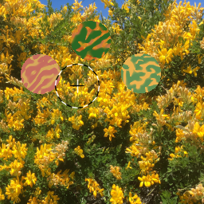 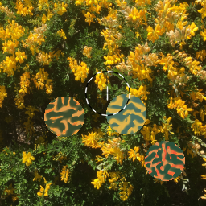
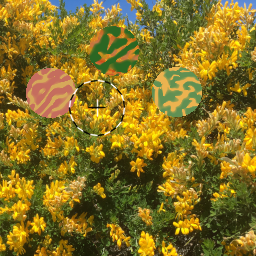 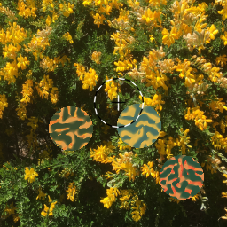 
 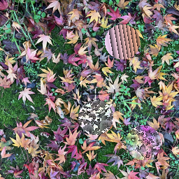
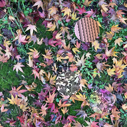


 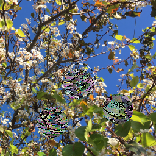
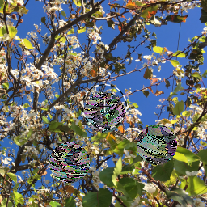
 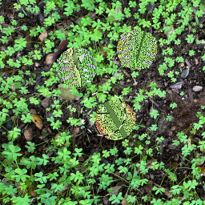
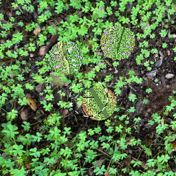

 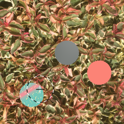 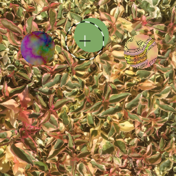
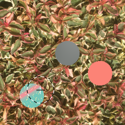 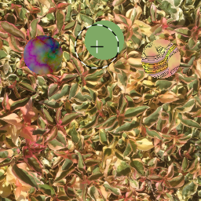 


 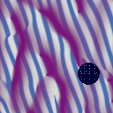
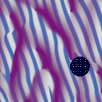


 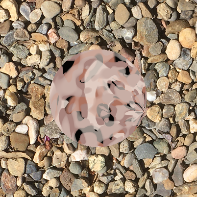
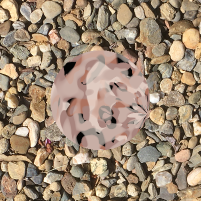 


 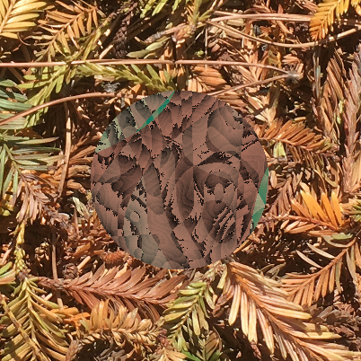
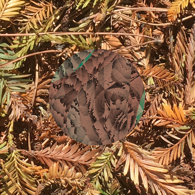 
 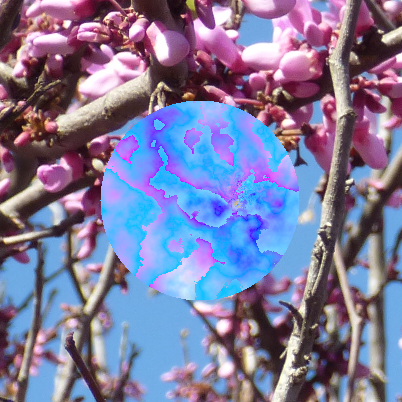
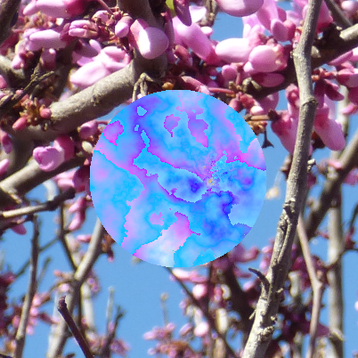 


 (with limit)")


 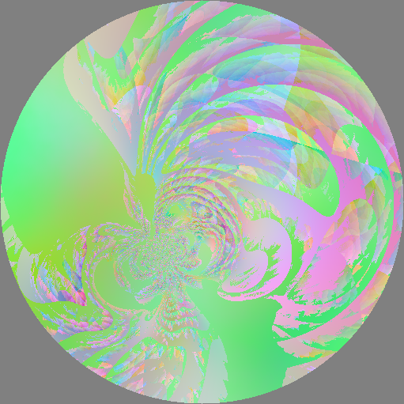
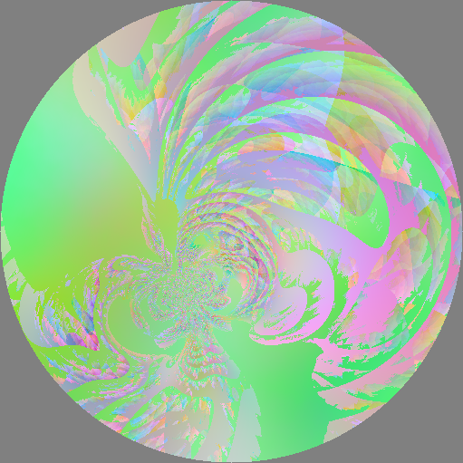 


,
Vec2(3.10, 6.9), 0)")

")
")
")
,
Vec2(3.10, 6.9), 0)")
")
")
")
")


, 0.9, 0.5, 2, los, black)")
, 0.9, 0.3, 5, los, black)")
, 0.9, 1, 5, los, black)")
, 0.9, 3, 5, los, black)")
")
")
")
")
")
")
")

, 1.5, bw_stripes, white)")

, 0.9, plaid, black)")

, 0.9, los,
black)")
, plaid)")
, plaid)")
, plaid)")
, plaid)")
, plaid)")
, plaid)")
, plaid)")
, plaid)")
, plaid)")
, plaid)")
, plaid)")
, plaid)")


")
")
")
")
")
")
")
")
")

")

) 1")
) 2")
) 3")
 Maps, Patterns, and Lattices”")


,
SoftMatte2(white, noise1, noise2))")


")
")
")
")
")
")
")
")
")
")
")
")
")
")
, gray, magenta)")
, Vec2(s, 0),
gray, magenta)")
, Vec2(-0.38, -0.13), gray,
magenta)")
, Vec2(-0.09, -0.03), gray,
magenta)")
, Vec2(0.2, 0.8), gray, magenta)")
, Vec2(-0.25, 0.68), gray, magenta)")

")
")
")
")

")
")
")


,
black_red, white_cyan)")
, yellow, red)")
, black_red, white_cyan)")
, yellow,
red)")
, black_red, white_cyan)")
, yellow,
red)")
, black_red, white_cyan)")
, yellow,
red)")


")
")


")
")


")
")
")
")
,
noise, 1, red)")


")


")


, red, Vec2(0.2, 0), green, 1)
before")
, red, Vec2(0.2, 0), green, 1) after")
, green, Vec2(0.2, 0), red, 1)
before")
, green, Vec2(0.2, 0), red, 1) after")
, cyan, Vec2(0, 0.2), orange, 1)
before")
, cyan, Vec2(0, 0.2), orange, 1) after")


, 0)
before")
, 0)
after")


")
")
")
")
")
")
)")
")
)")
")
)")


")
)")
)")
)")


,
0.3, color_noise, brownian)")

, 0.3,
color_noise, noise)")

, 0.3,
color_noise, spot)")
,
0.3, color_noise, brownian)")


, 0, green_stripes, hemisphere)")
")
")
")

")
")


")


 subsamples")

subsamples")
 subsamples")
 subsamples")

")
")
")
")
")
, Vec2(),
spots_and_bg)")
, Vec2(),
spots_and_bg)")
, Vec2(),
spots_and_bg)")
, Vec2(), Row(Vec2(-0.52, 0.17),
Vec2(), spots_and_bg))")

,
Vec2(0, -0.9), spots_and_bg)")
,
Vec2(1, 1) * -0.35, spots_and_bg)")


")

")

")
")
")
")


")

")
")
")


")
")


")
")


")
")


{kind=link}
{kind=link}
{kind=link}